Sous chaque exemple, le bouton ▶ Écouter joue l'exemple avec des sons de la banque General MIDI. En mode Automatique, les exemples pour quatuor vocal sont chantés par un chœur, et ceux pour quatuor à cordes joués par des cordes. Pour t'entraîner, ouvre le cahier d'exercices.
1. Les quatre voix
En contrepoint, tu as appris à écrire des lignes qui avancent chacune de leur côté. En harmonie, on écrit quatre lignes à la fois, et à chaque instant elles forment un accord. Il faut donc penser dans les deux sens :
- verticalement : chaque accord doit être complet et bien réparti ;
- horizontalement : chaque voix doit rester une belle ligne, facile à chanter.
Tout le cours repose sur cet équilibre. On commence par le modèle de base : le quatuor vocal.
Les quatre voix et leurs tessitures
| Voix | Du grave… | …à l'aigu |
|---|---|---|
| Soprano (S) | Do central | Sol aigu |
| Alto (A) | Sol sous le Do central | Ré |
| Ténor (T) | Do une octave sous le Do central | Sol au-dessus du Do central |
| Basse (B) | Fa grave | Do central |
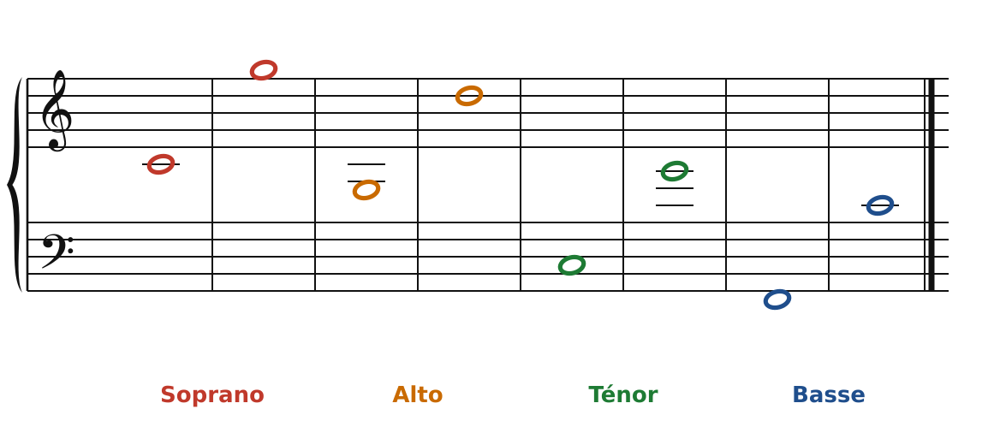
Pour retenir : chaque voix couvre une douzième (une octave plus une quinte). Le soprano va de Do à Sol, et le ténor fait la même chose une octave plus bas. L'alto va de Sol à Ré, et la basse de Fa à Do. Ce sont les limites : au milieu de la tessiture, une voix sonne mieux et se fatigue moins. Évite de rester longtemps tout en haut ou tout en bas.
Sur deux portées
On écrit le quatuor sur une grande portée :
- soprano et alto en clé de sol ;
- ténor et basse en clé de fa.
Quand les notes ont des hampes, elles indiquent à qui appartient chaque note : le soprano et le ténor ont la hampe en haut, l'alto et la basse l'ont en bas.
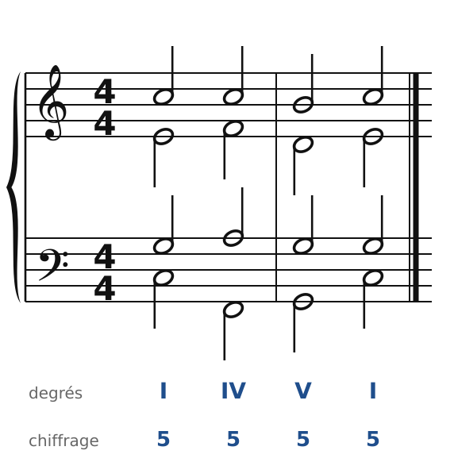
Sous la portée, on note deux choses :
- le degré de chaque accord, en chiffres romains (I = accord construit sur la 1re note de la gamme, IV sur la 4e, etc.) ;
- le chiffrage, qui décrit l'accord à partir de la basse. Ici, « 5 » veut dire : accord parfait (3ce et 5te au-dessus de la basse), à l'état fondamental. C'est l'accord le plus simple ; on y reviendra au chapitre suivant.
Dans les premiers chapitres, on écrit surtout en rondes, une ronde par accord, comme en contrepoint de 1re espèce.
L'ordre des voix et les écarts
-
Pas de croisement : le soprano reste la voix la plus aiguë, puis l'alto, puis le ténor, puis la basse. Une voix ne passe jamais au-dessus (ou au-dessous) de sa voisine.
-
Écarts maximum entre deux voix voisines :
- soprano-alto : une octave ;
- alto-ténor : une octave ;
- ténor-basse : plus libre, jusqu'à la douzième (on peut aller un peu au-delà, mais rarement).
Pourquoi ? Les trois voix du haut forment un bloc qui doit rester soudé. La basse, elle, peut s'éloigner : dans le grave, les notes ont besoin de place pour sonner clairement.
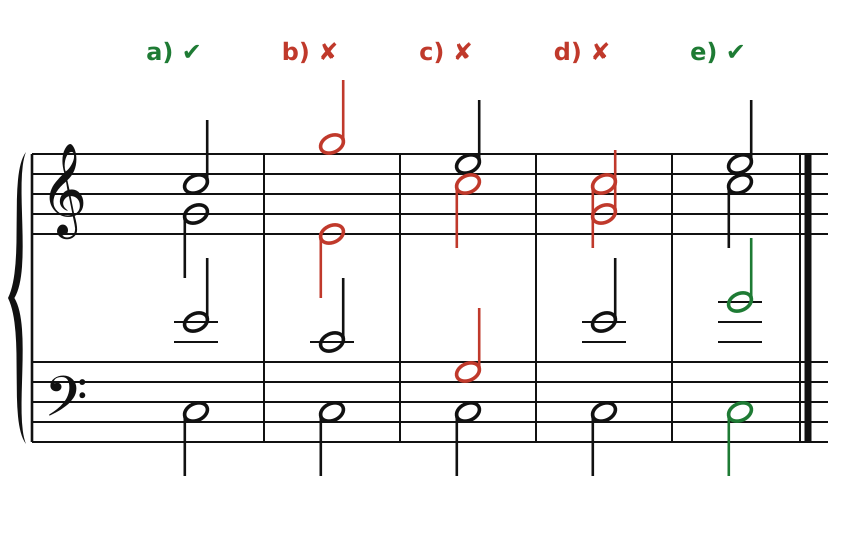
- a) Tout est en ordre.
- b) Du Sol du soprano au Mi de l'alto, il y a une 10e : trop loin.
- c) De l'alto (Do) au ténor (Sol), il y a une 11e : trop loin.
- d) Le soprano (Sol) est sous l'alto (Do) : c'est un croisement. Regarde les hampes : la hampe en haut (soprano) part d'une note plus grave que la hampe en bas (alto).
- e) Ténor et basse sont à une 12e : c'est permis, car l'écart entre ces deux voix est plus libre.
Et le quatuor à cordes ?
Le quatuor à cordes reprend exactement les mêmes quatre rôles :
| Quatuor vocal | Quatuor à cordes | Clé |
|---|---|---|
| Soprano | Violon 1 | Clé de sol |
| Alto | Violon 2 | Clé de sol |
| Ténor | Alto | Clé d'ut 3e ligne |
| Basse | Violoncelle | Clé de fa |
Attention au piège : dans le quatuor à cordes, l'alto est un instrument (un peu plus grand que le violon) qui joue la partie de ténor. Il se lit en clé d'ut 3e ligne : le Do central est sur la ligne du milieu.
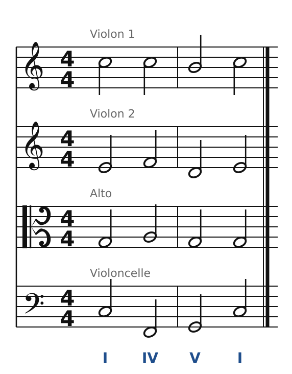
C'est exactement l'enchaînement de tout à l'heure. Compare les deux figures : seule la présentation change. Chaque instrument a sa portée, et l'alto lit en clé d'ut.
Les instruments à cordes vont beaucoup plus loin que les voix (le violon monte très haut, le violoncelle descend jusqu'au Do deux octaves sous le Do central). Mais pour apprendre, on garde les tessitures vocales : une écriture qui se chante se joue toujours bien. On profitera de la liberté des cordes à partir de la cinquième partie.
2. L'accord parfait à quatre voix
L'accord parfait
Un accord parfait (on dit aussi « accord de 3 sons ») est fait de trois notes empilées en tierces :
- la fondamentale, la note qui donne son nom à l'accord ;
- la tierce, une 3ce au-dessus ;
- la quinte, une 5te au-dessus de la fondamentale.
Exemple : l'accord de C, c'est Do (fondamentale), Mi (tierce), Sol (quinte).
Quand la fondamentale est à la basse, l'accord est à l'état fondamental. Son chiffrage est 5 (on l'omet souvent, mais dans ce cours on l'écrit toujours). C'est le seul état qu'on utilise dans cette première partie.
Un accord sur chaque degré
On peut construire un accord parfait sur chaque note de la gamme, en n'utilisant que les notes de la gamme. En Do majeur :
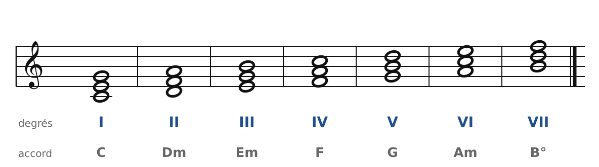
- I, IV et V sont majeurs (C, F, G) : ce sont les degrés principaux, les piliers de la tonalité.
- II, III et VI sont mineurs (Dm, Em, Am).
- VII est diminué (B°, avec une 5te diminuée Si-Fa) : on le laisse de côté pour l'instant.
Le V (la dominante) contient la sensible (Si en Do majeur), la note qui « veut » monter vers la tonique. On en reparle au chapitre 3.
Les doublures
Un accord parfait a trois notes, mais on écrit à quatre voix : il faut donc doubler une note (la faire chanter par deux voix, à l'unisson ou à l'octave). Laquelle ?
- À l'état fondamental, on double la fondamentale. C'est la meilleure doublure.
- On peut aussi tripler la fondamentale et supprimer la quinte. La quinte est la note la moins importante : sans elle, on reconnaît encore l'accord.
- On évite de doubler la tierce.
- On ne supprime jamais la tierce : c'est elle qui dit si l'accord est majeur ou mineur. Sans tierce, l'accord sonne vide.
- On ne double jamais la sensible.
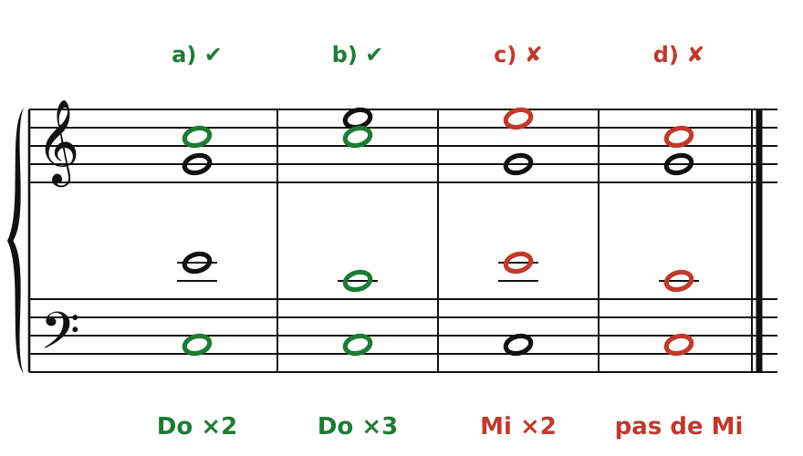
- a) Do est doublé (soprano et basse) : c'est la doublure idéale.
- b) Do est triplé et il n'y a pas de Sol : c'est permis.
- c) Mi (la tierce) est doublé : à éviter, l'accord sonne lourd et déséquilibré.
- d) Pas de Mi : l'accord est vide. On ne sait plus s'il est majeur ou mineur.
La disposition : serrée ou large
Regarde les trois voix du haut (soprano, alto, ténor) :
- disposition serrée : elles sont aussi proches que possible. On ne pourrait pas glisser une note de l'accord entre deux voix voisines ;
- disposition large : il y a de la place pour une note de l'accord entre le soprano et l'alto, ou entre l'alto et le ténor.
La basse ne compte pas : elle peut toujours être loin du ténor.
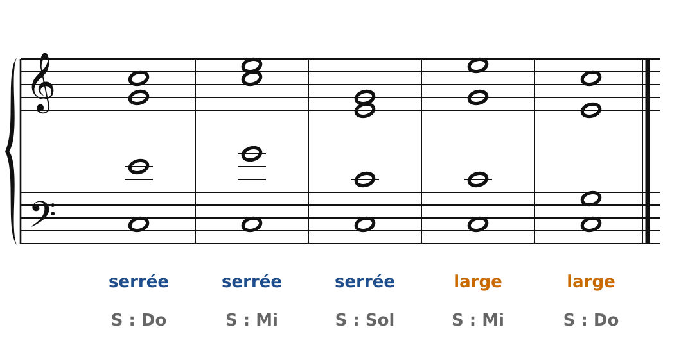
Les trois premiers accords sont en disposition serrée. Ce qui change, c'est la note du soprano :
- soprano sur la fondamentale (Do) : position d'octave ;
- soprano sur la tierce (Mi) : position de tierce ;
- soprano sur la quinte (Sol) : position de quinte.
Les deux derniers accords sont en disposition large : entre le Mi du soprano et le Sol de l'alto, on pourrait placer un Do ; entre le Do du soprano et le Mi de l'alto, un Sol.
Les deux dispositions sont bonnes. Dans un enchaînement, on passe de l'une à l'autre quand c'est nécessaire, par exemple pour garder chaque voix dans sa tessiture.
Méthode : écrire un accord seul
- Écris la basse : la fondamentale.
- Choisis la note du soprano : fondamentale, tierce ou quinte.
- Complète l'alto et le ténor avec les notes qui manquent, en doublant la fondamentale.
- Vérifie : tessitures, pas de croisement, écarts (S-A et A-T pas plus d'une octave), la tierce est bien là.
3. Enchaîner deux accords
Écrire un bel accord, c'est facile. Le vrai travail commence quand on passe d'un accord à l'autre : chaque voix doit bouger proprement, sans perdre son indépendance.
Rappel : les quatre mouvements
Entre deux voix, tu connais déjà les quatre mouvements (voir le Cours de contrepoint, partie 3) :
- contraire : une voix monte, l'autre descend ;
- oblique : une voix reste sur place, l'autre bouge ;
- direct : les deux voix vont dans le même sens ;
- parallèle : les deux voix vont dans le même sens, du même intervalle.
À quatre voix, il y a six paires de voix à surveiller : S-A, S-T, S-B, A-T, A-B, T-B. Les règles qui suivent valent pour chacune.
Règle 1 : pas de quintes ni d'octaves consécutives
Deux voix qui sont à la 5te (ou à l'octave) ne doivent pas aller ensemble à une autre 5te (ou une autre octave). C'est la règle la plus célèbre de l'harmonie, et la même qu'en contrepoint.
Pourquoi ? Deux voix en octaves parallèles se fondent en une seule : on n'entend plus quatre voix mais trois. Les quintes parallèles produisent le même effet, en un peu moins fort, et sonnent creux dans le style classique.
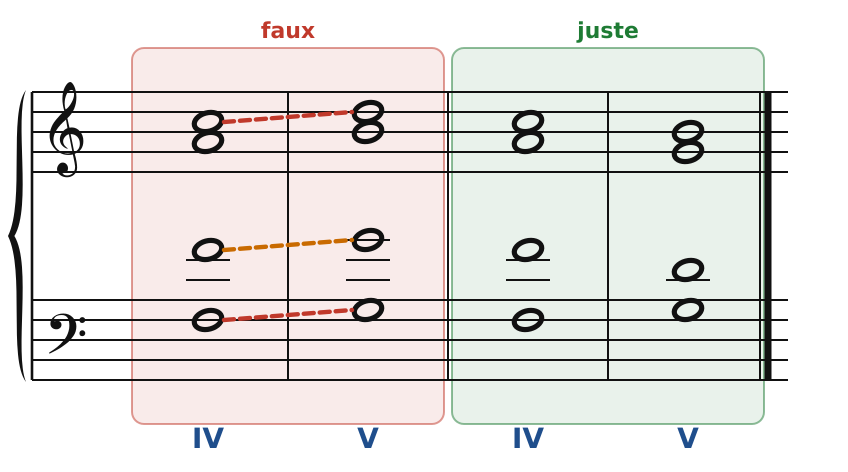
À gauche (faux) : pour aller de IV à V, toutes les voix montent d'un degré. Résultat : 5tes consécutives entre soprano et basse (Do-Fa puis Ré-Sol), entre soprano et ténor (même chose), et octaves consécutives entre ténor et basse (Fa-Fa puis Sol-Sol). C'est la faute classique entre deux accords voisins (IV-V, V-VI…).
À droite (juste) : la basse monte, et les trois voix du haut descendent vers la note la plus proche du nouvel accord. Le mouvement contraire supprime toutes les fautes.
Règle 2 : pas de quintes ni d'octaves par mouvement contraire
Passer d'une octave à une autre octave en mouvement contraire (une voix monte, l'autre descend) ne sauve rien : on a toujours deux voix qui chantent la même note. Dans le style d'école, c'est interdit aussi.
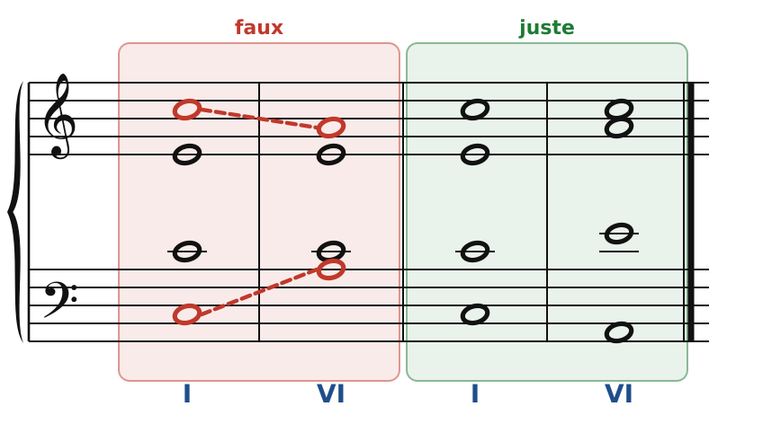
À gauche (faux) : soprano et basse sont à l'octave sur Do, puis à l'octave sur La (le soprano descend, la basse monte).
À droite (juste) : le soprano garde son Do, la basse descend sur La. On arrive à une 10e, et l'accord de Am est bien rempli.
Règle 3 : attention aux quintes et octaves directes
On arrive sur une 5te ou une octave par mouvement direct (les deux voix dans le même sens), sans y être avant : on parle de 5te directe ou d'octave directe (on dit aussi « cachées »). L'oreille les entend surtout entre les voix extrêmes (soprano et basse). La règle :
- entre soprano et basse, une 5te ou une octave directe est interdite si le soprano saute ;
- elle est tolérée si le soprano avance par degré conjoint ;
- entre les autres voix, on la tolère.
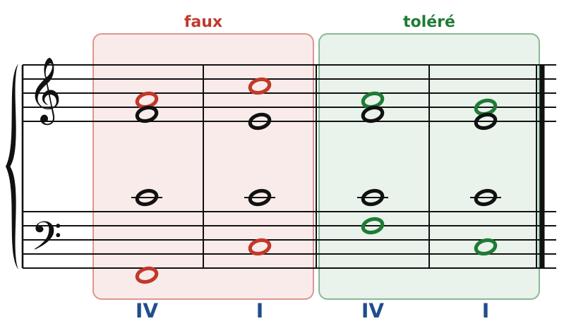
À gauche (faux) : le soprano saute de La à Do pendant que la basse monte de Fa à Do. On arrive à l'octave en mouvement direct, avec un saut au soprano : c'est l'octave directe interdite.
À droite (toléré) : soprano et basse descendent ensemble et arrivent sur une 5te (Sol au-dessus de Do). Mais le soprano ne fait qu'un pas (La-Sol) : c'est toléré.
Règle 4 : pas de chevauchement
Une voix ne doit pas aller plus loin que la note que sa voisine vient de quitter. Le soprano ne descend pas plus bas que la note précédente de l'alto, l'alto ne monte pas plus haut que la note précédente du soprano, et ainsi de suite. Sinon l'oreille croit que les voix se sont échangées.
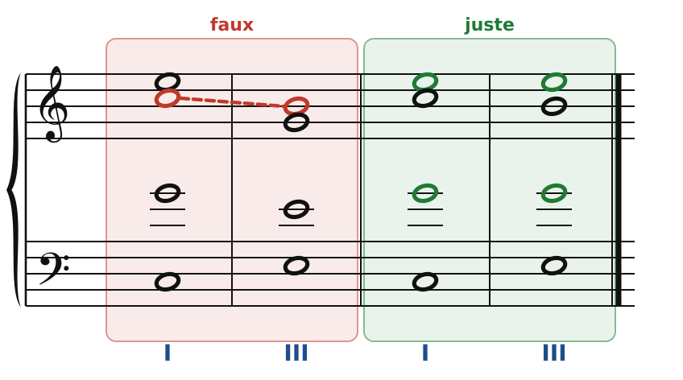
À gauche (faux) : l'alto chante Do, puis le soprano descend sur Si, plus bas que ce Do. L'oreille entend la ligne Do-Si comme une seule voix.
À droite (juste) : on garde les notes communes (Mi au soprano, Sol au ténor). À part la basse, seul l'alto bouge, d'un demi-ton (Do-Si).
Règle 5 : la sensible monte à la tonique
Dans l'enchaînement V-I, la sensible (Si en Do majeur) doit monter d'un demi-ton vers la tonique, surtout au soprano. C'est elle qui donne l'impression d'arriver.
La méthode : comment enchaîner deux accords
C'est la méthode la plus sûre, et elle évite presque toutes les fautes d'un seul coup :
- La basse va de fondamentale à fondamentale. Elle peut sauter (4te, 5te).
- Les notes communes aux deux accords restent à la même voix, sur place.
- Les autres voix vont vers la note la plus proche du nouvel accord (le plus court chemin).
- S'il n'y a pas de note commune (IV-V, V-VI…), les trois voix du haut vont en mouvement contraire à la basse.
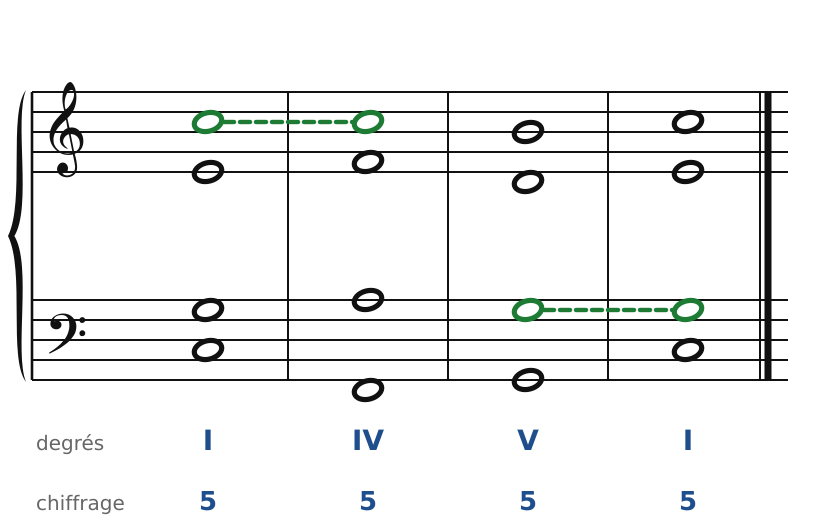
- I-IV : Do est commun aux deux accords, le soprano le garde (en vert). L'alto monte de Mi à Fa, le ténor de Sol à La : chacun fait un pas.
- IV-V : aucune note commune. La basse monte (Fa-Sol), donc les trois voix du haut descendent : Do-Si, Fa-Ré, La-Sol.
- V-I : Sol est commun, le ténor le garde (en vert). La sensible Si monte sur Do au soprano, l'alto monte de Ré à Mi.
Résultat : aucune quinte ni octave consécutive, des voix qui bougent peu, et chaque accord complet.
À vérifier après chaque enchaînement
- Chaque accord : tessitures, pas de croisement, écarts, doublure de la fondamentale, tierce présente.
- Chaque paire de voix (il y en a six !) : pas de 5tes ni d'octaves consécutives, ni par mouvement contraire.
- Soprano et basse : pas de 5te ou d'octave directe avec un saut au soprano.
- Pas de chevauchement.
- La sensible monte à la tonique.
- Chante ou joue chaque voix séparément : elle doit être agréable à chanter.
4. Exercices
Fais les exercices dans l'ordre, au crayon. Joue ou chante chaque résultat avant de regarder le corrigé.
Dans la version web du cours, les exercices 3, 4 et 5 se font aussi directement sur la portée : bouton ✏️ Faire l'exercice ici. Tu poses tes notes en cliquant, tu écoutes, et les corrections s'affichent au fur et à mesure, avec les mêmes règles que le cours.
Exercice 1 : les voix à leur place
Chacun de ces accords contient une faute : une voix hors de sa tessiture, un écart trop grand ou un croisement. Trouve-la.
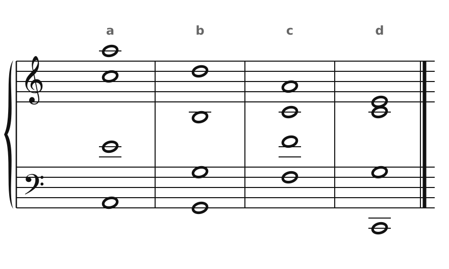
Exercice 2 : analyser des accords
Pour chaque accord (tous en Do majeur, à l'état fondamental) :
- donne son nom (en lettres) et son degré ;
- dis s'il est en disposition serrée ou large ;
- dis quelle note est doublée, et si l'accord est correct.
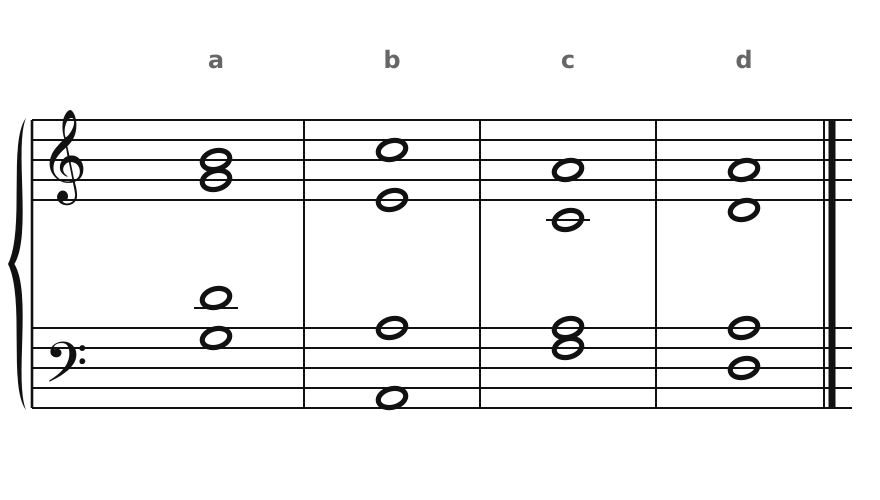
Exercice 3 : chasse aux fautes
Cet enchaînement en Do majeur contient trois fautes. Trouve-les, puis corrige-les en changeant le moins de notes possible.
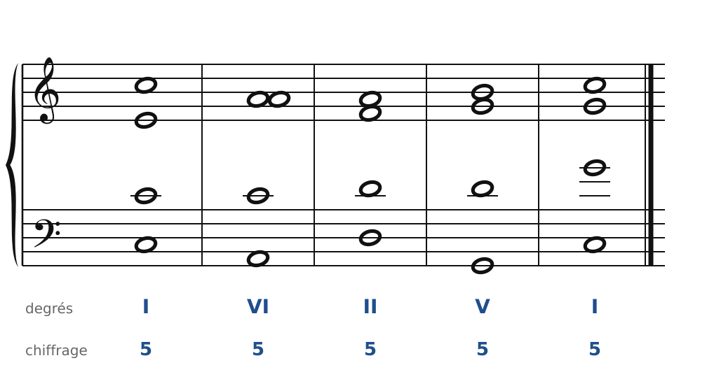
Exercice 4 : compléter l'alto et le ténor
Le soprano et la basse sont donnés. Écris l'alto et le ténor. Suis la méthode du chapitre 3 : garde les notes communes, va au plus près.
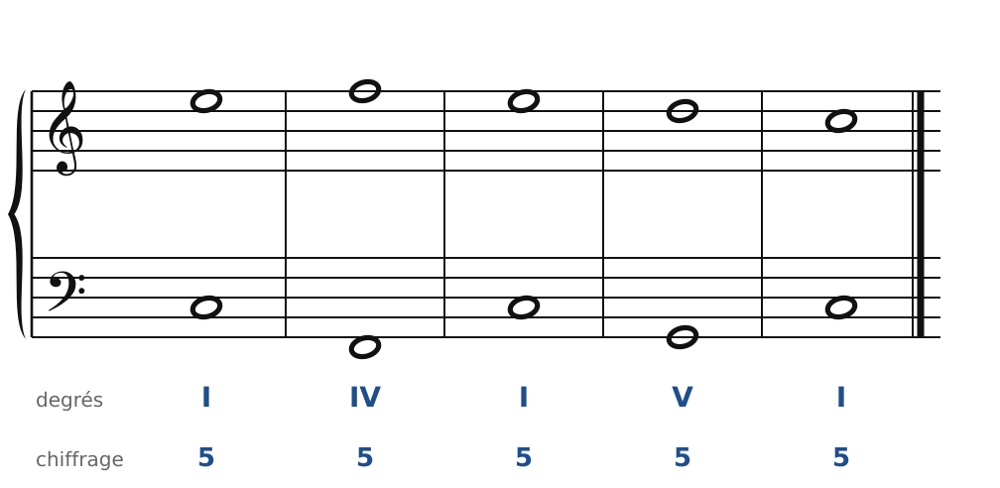
Indice : dans le V, où est la sensible ? Où doit-elle aller ?
Exercice 5 : basse donnée en Sol majeur
Voici une basse en Sol majeur, avec ses degrés. Écris les trois voix du haut. Commence le soprano sur Si.
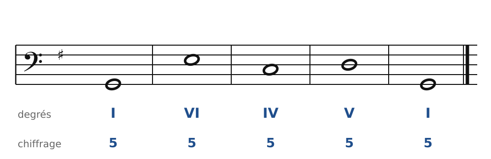
Indices : quelles sont les notes de l'accord de V en Sol majeur ? Quelle est la sensible ? Entre VI et IV, cherche la note commune.
Exercice 6 : pour quatuor à cordes
Recopie ta réalisation de l'exercice 4 pour quatuor à cordes : violon 1, violon 2, alto, violoncelle. Attention : l'alto lit en clé d'ut 3e ligne (le Do central sur la ligne du milieu).
5. Corrigés
Exercice 1 : les voix à leur place
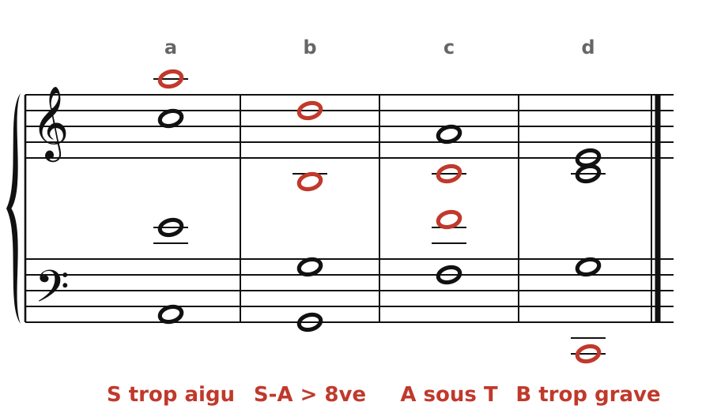
- a) Le soprano chante La, au-dessus du Sol aigu : il sort de sa tessiture.
- b) Entre le Ré du soprano et le Si de l'alto, il y a une 10e : l'écart soprano-alto dépasse l'octave.
- c) L'alto (Do) est plus grave que le ténor (Fa) : c'est un croisement. Il suffit d'échanger les deux notes (alto Fa, ténor Do).
- d) La basse chante le Do deux octaves sous le Do central : c'est plus grave que le Fa, limite de la basse. Une octave plus haut, tout serait correct.
Exercice 2 : analyser des accords
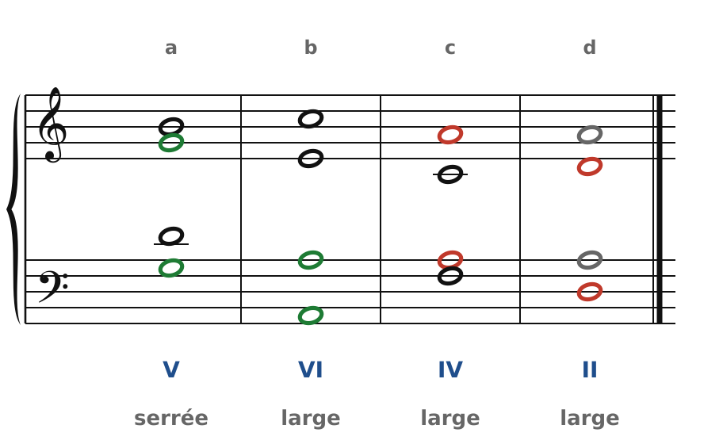
| Accord | Degré | Disposition | Doublure | Correct ? | |
|---|---|---|---|---|---|
| a) | G | V | serrée | Sol, la fondamentale (en vert) | oui |
| b) | Am | VI | large (on pourrait placer un La entre le soprano et l'alto) | La, la fondamentale (en vert) | oui |
| c) | F | IV | large (un Fa tiendrait entre le soprano et l'alto) | La, la tierce (en rouge) | non : tierce doublée |
| d) | Dm | II | large (un Fa tiendrait entre le soprano et l'alto) | Ré et La sont doublés | non : pas de Fa, l'accord est vide |
Pour corriger c), échange l'alto et le ténor et remplace un La par un Fa : soprano La, alto Fa, ténor Do, basse Fa. Pour corriger d), remplace le La du ténor par un Fa : soprano La, alto Ré, ténor Fa, basse Ré. D'autres solutions sont possibles : vérifie simplement que la tierce est là et que la fondamentale est doublée.
Exercice 3 : chasse aux fautes
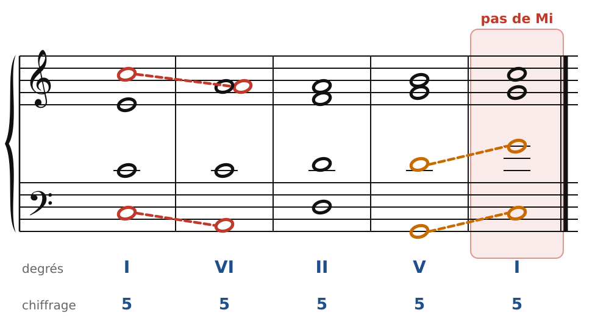
- I-VI : octaves consécutives entre soprano et basse (Do-Do, puis La-La). Les deux voix descendent ensemble.
- V-I : quintes consécutives entre ténor et basse (Ré au-dessus de Sol, puis Sol au-dessus de Do).
- Dernier accord : il n'y a pas de Mi. L'accord final est vide.
Une correction possible :
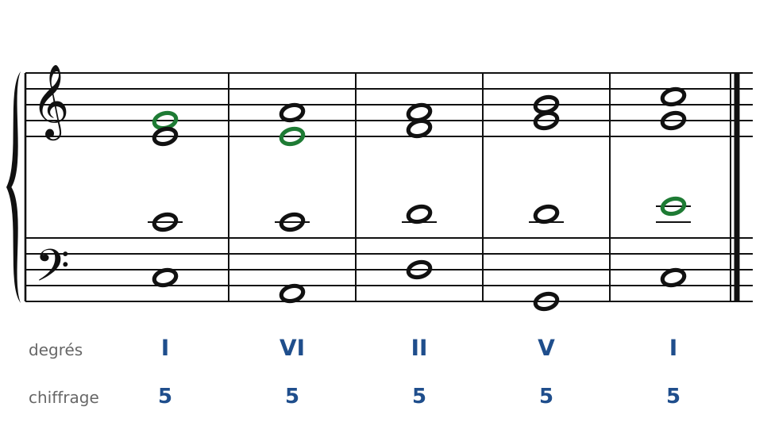
- Le soprano commence sur Sol au lieu de Do : soprano et basse ne sont plus à l'octave au premier accord, la faute 1 disparaît.
- Au deuxième accord, l'alto garde son Mi (note commune entre C et Am) : l'accord de Am devient complet.
- Le ténor finit sur Mi au lieu de Sol : il fait un simple pas (Ré-Mi), les quintes disparaissent et l'accord final retrouve sa tierce. Une seule note corrige deux fautes !
Exercice 4 : compléter l'alto et le ténor
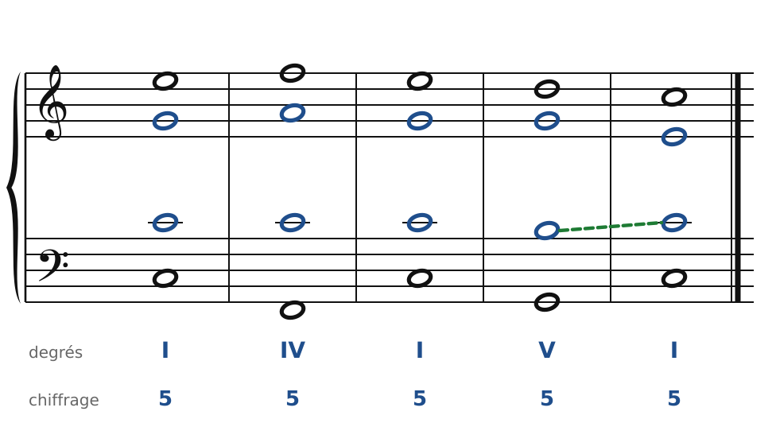
L'alto et le ténor sont en bleu.
- Le Do est commun aux accords I, IV et I : le ténor le garde du début jusqu'au V. L'alto fait Sol-La-Sol, de simples pas.
- I-V : Sol est commun, l'alto le garde. Le ténor descend d'un degré sur Si, la tierce de G.
- V-I : le Si du ténor est la sensible : il monte sur Do (en vert). L'alto descend de Sol à Mi pour apporter la tierce.
L'accord final n'a pas de quinte (Do triplé, Mi) : c'est permis, et c'est souvent le prix à payer pour que la sensible monte. Si tu as gardé le Sol à l'alto et fait monter le ténor de Si à Mi, ton accord final est complet, mais la sensible ne monte plus vers la tonique : la première solution est préférable.
Exercice 5 : basse donnée en Sol majeur
En Sol majeur, l'accord de V est D (Ré, Fa♯, La) et la sensible est Fa♯ (déjà à l'armure). Entre VI (Em : Mi, Sol, Si) et IV (C : Do, Mi, Sol), les notes communes sont Mi et Sol.
Avec le soprano sur Si, comme demandé :
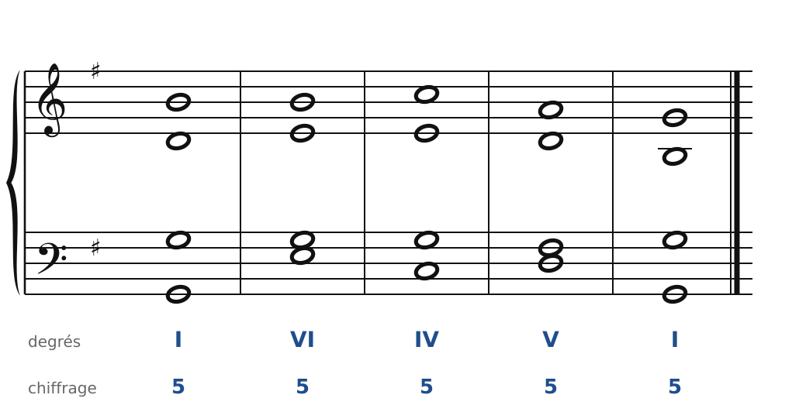
- Soprano : Si-Si-Do-La-Sol, une ligne qui descend tranquillement vers la tonique.
- Le Sol du ténor est commun aux trois premiers accords : il reste sur place.
- V-I : la sensible Fa♯ est au ténor, elle monte sur Sol. L'accord final n'a pas de quinte.
Une autre solution, en partant plus haut :
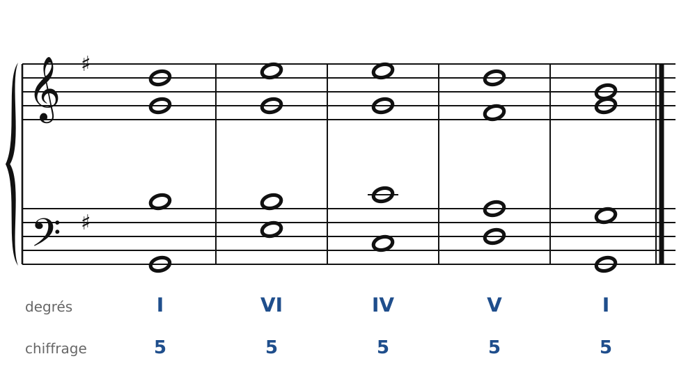
Ici le soprano chante Ré-Mi-Mi-Ré-Si, et c'est l'alto qui a la sensible : Fa♯ monte sur Sol. Compare les deux versions : même basse, même harmonie, mais une couleur différente parce que le soprano est plus aigu.
Exercice 6 : pour quatuor à cordes
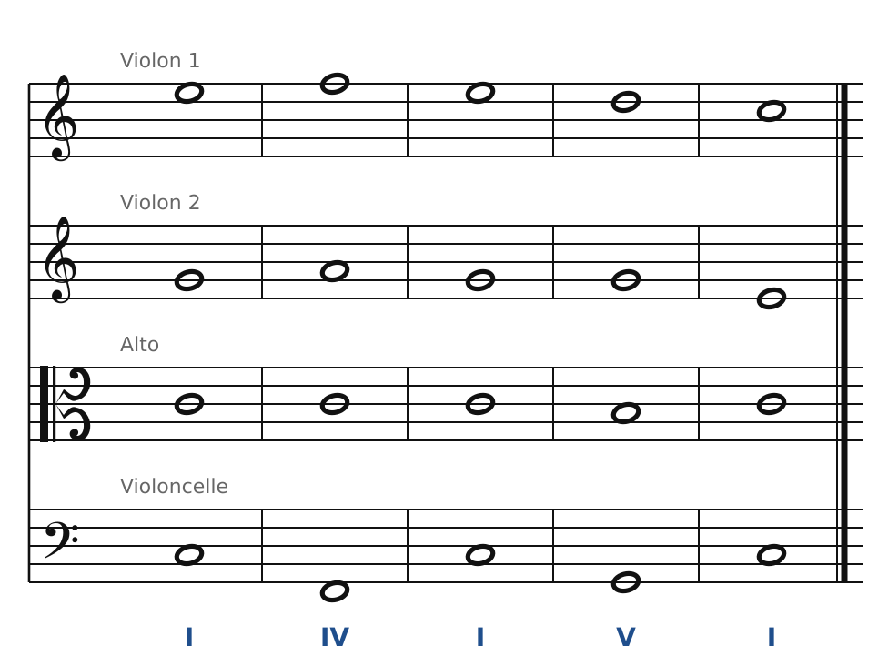
Chaque voix devient un instrument : soprano → violon 1, alto → violon 2, ténor → alto, basse → violoncelle. Les notes ne changent pas. La seule difficulté est la clé d'ut : le Do que tient la partie d'alto est le Do central, sur la ligne du milieu.
6. Le premier renversement
Jusqu'ici, la basse chantait toujours la fondamentale. C'est solide, mais la basse saute beaucoup et toutes les phrases se ressemblent. Pour lui donner une vraie ligne mélodique, on va renverser les accords.
Les trois états d'un accord
Un accord est renversé quand la basse chante une autre note que la fondamentale. Un accord parfait a donc trois états :
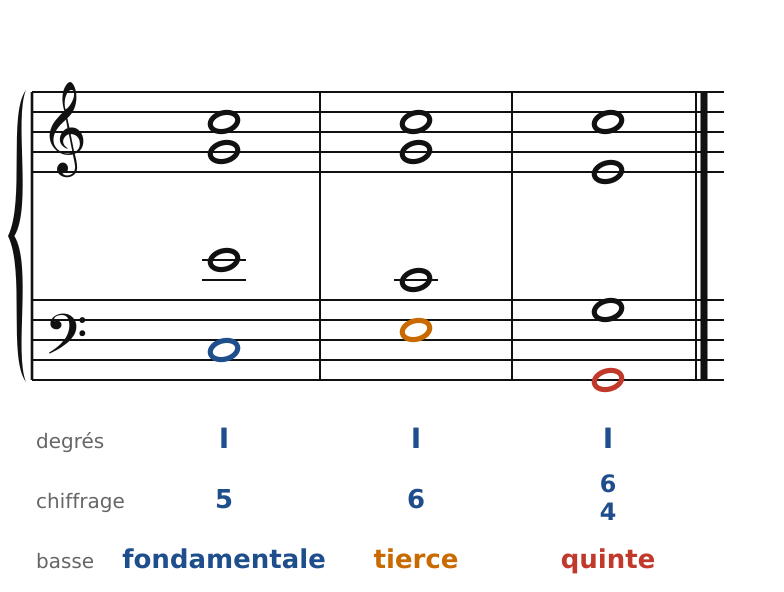
| État | À la basse | Chiffrage | Nom |
|---|---|---|---|
| État fondamental | la fondamentale (Do) | 5 | accord parfait |
| 1er renversement | la tierce (Mi) | 6 | accord de sixte |
| 2e renversement | la quinte (Sol) | 6/4 | accord de quarte et sixte |
Le chiffrage décrit les intervalles au-dessus de la basse : avec Mi à la basse, on trouve Sol (une 3ce) et Do (une 6te). On écrit seulement le chiffre qui compte : 6. Avec Sol à la basse, on trouve Do (une 4te) et Mi (une 6te) : on écrit 6/4.
Le degré ne change pas : Do-Mi-Sol reste l'accord de I, quel que soit son état. On écrit « I » et le chiffrage dit l'état. On lit souvent « I6 » (« un six ») ou « V6 ».
Retrouver la fondamentale à partir du chiffrage :
- 5 : la fondamentale est à la basse ;
- 6 : la fondamentale est une 6te au-dessus de la basse (donc une 3ce en dessous) ;
- 6/4 : la fondamentale est une 4te au-dessus de la basse.
Les doublures de l'accord de sixte
À l'état fondamental, on doublait la fondamentale. Dans l'accord de sixte, c'est plus souple :
- On double la fondamentale ou la quinte. Souvent, c'est la note du soprano qui est doublée.
- Dans un accord majeur (I, IV, V), on évite de doubler la basse : c'est la tierce de l'accord, et la doubler alourdit l'accord.
- Dans un accord mineur (II, VI), doubler la basse est permis, et même très courant pour le II6.
- Dans le V6, la basse est la sensible : on ne la double jamais.
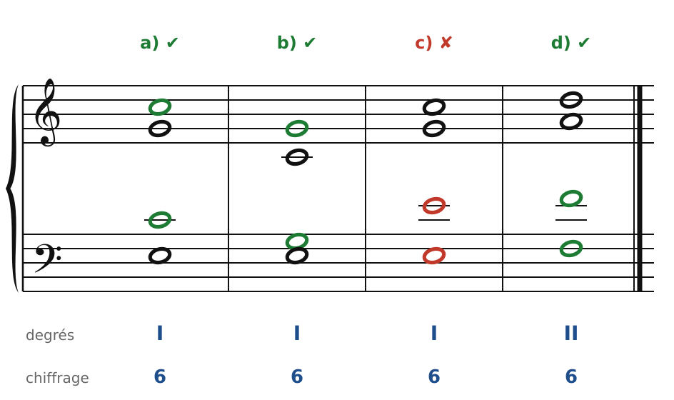
- a) I6, Do doublé : très bien.
- b) I6, Sol doublé : très bien aussi.
- c) I6, Mi doublé (la basse d'un accord majeur) : à éviter.
- d) II6, Fa doublé (la basse d'un accord mineur) : correct.
À quoi sert l'accord de sixte ?
1. Rendre la basse conjointe. Le V6 met la sensible à la basse : Do-Si-Do devient une petite broderie, beaucoup plus chantante que Do-Sol-Do.
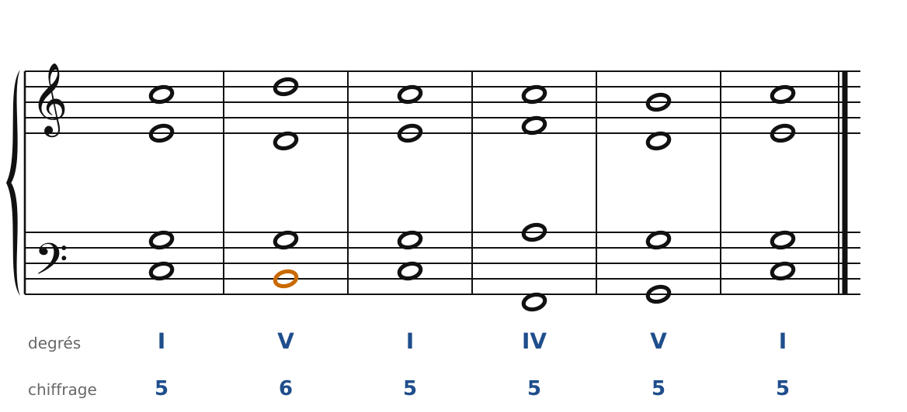
La sensible de la basse (en orange) monte sur la tonique, comme au soprano.
2. Faire monter la basse par degrés. Le I6 permet une basse qui monte d'un seul élan : Do-Mi-Fa-Sol.
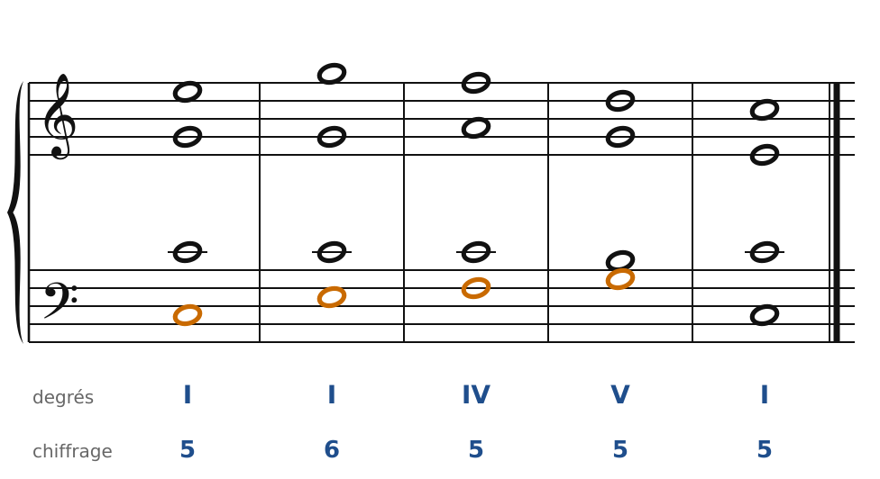
Après son départ (Mi-Sol), le soprano redescend (Sol-Fa-Ré-Do) pendant que la basse monte (Mi-Fa-Sol) : c'est le mouvement contraire entre voix extrêmes, celui qui sonne le mieux.
3. Éviter des fautes. Quand deux accords à l'état fondamental donnent forcément des quintes ou des octaves, renverser l'un des deux règle souvent le problème.
4. Nuancer. Un accord de sixte est moins stable, moins « posé » que l'état fondamental. On le garde pour le milieu des phrases ; pour conclure, on revient à l'état fondamental (voir le chapitre suivant).
Les règles à retenir
- Chiffrage 6 = tierce à la basse.
- Doublure : fondamentale ou quinte ; jamais la basse du V6 ; pas la basse d'un accord majeur.
- La sensible à la basse monte à la tonique.
- Le I6, le V6 et le II6 sont les accords de sixte les plus utiles.
7. Les cadences
Une phrase musicale se termine comme une phrase écrite : par un point, une virgule ou un point d'interrogation. En harmonie, cette ponctuation s'appelle une cadence : les deux derniers accords d'une phrase.
Les cinq cadences
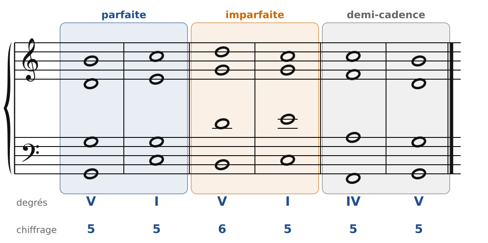
Cadence parfaite (V-I) : le point final. Les deux accords sont à l'état fondamental, et le I tombe sur un temps fort. Le plus souvent, le soprano finit sur la tonique, et la sensible monte (Si-Do).
Cadence imparfaite (V-I avec un renversement) : un point plus léger, comme un point-virgule. Ici le V est au 1er renversement (V6) : la sensible est à la basse et monte sur Do. On parle aussi de cadence imparfaite quand le soprano ne finit pas sur la tonique.
Demi-cadence (… → V) : la phrase s'arrête sur V. C'est une virgule, ou une question qui attend sa réponse. On y arrive souvent par IV-V, II-V ou I-V.
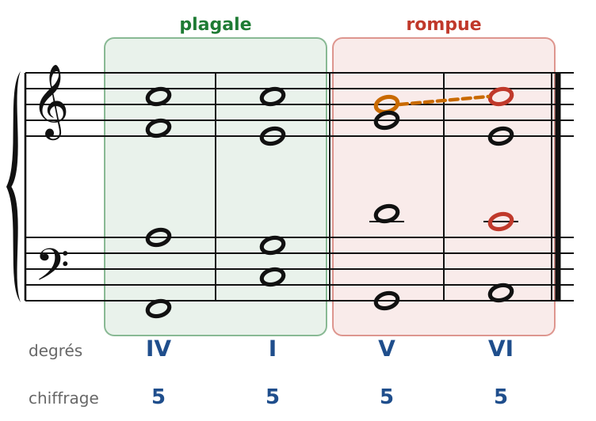
Cadence plagale (IV-I) : une conclusion douce, celle de l'« Amen » à la fin des hymnes. Souvent, elle vient après une cadence parfaite, comme une signature.
Cadence rompue (V-VI) : la surprise. On attend I après V, et c'est VI (Am) qui arrive. La phrase n'est pas finie : il faudra une nouvelle cadence pour conclure.
La règle de la cadence rompue
L'enchaînement V-VI est piégeux : la basse monte d'un degré (Sol-La), et si toutes les voix montent avec elle, c'est la catastrophe (5tes et 8ves consécutives). La règle :
- La sensible monte sur la tonique (Si-Do, en orange).
- Les deux autres voix supérieures descendent (Sol-Mi et Ré-Do).
- Résultat : dans le VI, la tierce (Do) est doublée (en rouge). C'est la seule doublure de tierce qu'on recherche à l'état fondamental : elle est obligatoire ici.
Préparer la cadence : le II6
Avant une cadence parfaite, on a besoin d'un accord qui « pousse » vers V. Le meilleur candidat est le II6 (accord de II au 1er renversement) :
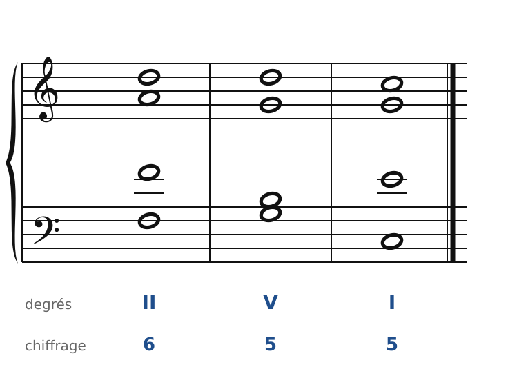
- La basse fait Fa-Sol-Do, exactement la basse de IV-V-I, mais l'accord de II apporte le Ré, qui reste au soprano dans le V.
- Dans le II6, on double volontiers la basse (Fa) : c'est un accord mineur.
- Le IV peut jouer le même rôle (IV-V-I). Le II6 a simplement une couleur plus riche.
Les règles à retenir
| Cadence | Accords | Effet |
|---|---|---|
| Parfaite | V-I, état fondamental, I sur temps fort | point final |
| Imparfaite | V-I avec un renversement | point léger |
| Demi-cadence | … → V | virgule, question |
| Plagale | IV-I | « Amen » |
| Rompue | V-VI, tierce doublée dans VI | surprise, relance |
8. L'accord de quarte et sixte
Le 2e renversement met la quinte à la basse : chiffrage 6/4. Dans le style classique, c'est un accord instable. La 4te au-dessus de la basse est traitée comme une dissonance, exactement comme en contrepoint, où la 4te avec la basse n'est pas une consonance.
On ne l'emploie donc pas librement. Il n'a que trois usages, et dans les trois on double la basse.
1. La quarte et sixte de cadence
C'est de loin la plus fréquente. Elle se place juste avant le V d'une cadence :
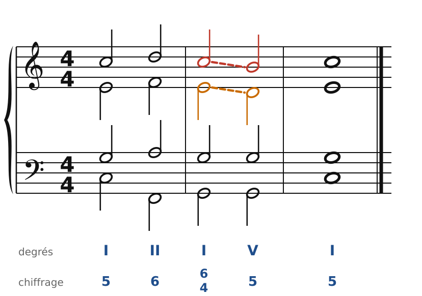
- Le I6/4 tombe sur un temps fort, le V sur le temps faible qui suit.
- La basse ne bouge pas : c'est la dominante (Sol), pour les deux accords.
- Au-dessus, la 4te descend sur la 3ce (Do-Si, en rouge) et la 6te descend sur la 5te (Mi-Ré, en orange). Compte les intervalles depuis le Sol de la basse : Do est une 4te, Mi une 6te ; Si est une 3ce, Ré une 5te.
Tu reconnais le mécanisme du retard en 4e espèce : une note dissonante sur le temps fort, qui se résout en descendant. D'ailleurs, beaucoup de musiciens n'y entendent pas un vrai accord de I : pour eux, c'est un V décoré de deux appoggiatures. C'est pour ça qu'on le prépare comme un V, par II6 ou IV.
2. La quarte et sixte de passage
La basse monte (ou descend) par degrés conjoints entre deux positions du même accord, et le 6/4 se glisse au milieu, sur un temps faible :
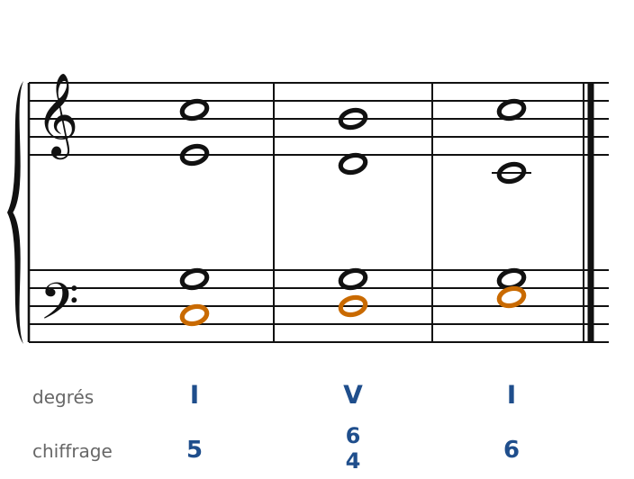
La basse fait Do-Ré-Mi (en orange) : I, puis V6/4 (Sol-Si-Ré avec Ré à la basse), puis I6. Le V6/4 n'est qu'un accord de passage, qui relie I et I6.
3. La quarte et sixte de broderie
La basse reste sur place, et deux voix font une broderie au-dessus d'elle :
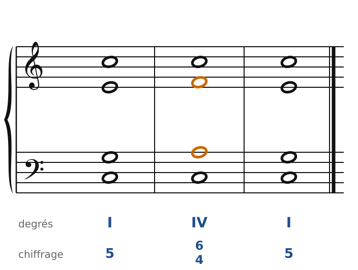
La basse tient Do. L'alto fait Mi-Fa-Mi, le ténor Sol-La-Sol : le IV6/4 apparaît au passage (en orange). On l'appelle aussi « quarte et sixte de pédale ».
Les règles à retenir
- Toujours doubler la basse (la quinte de l'accord).
- Seulement trois usages : de cadence (sur le temps fort, avant V), de passage (basse conjointe, temps faible), de broderie (basse tenue).
- Dans la quarte et sixte de cadence, la 6te et la 4te descendent sur la 5te et la 3ce.
- En dehors de ces trois cas, un 6/4 est une faute.
9. Basse donnée et chant donné
Tu as maintenant tous les outils pour écrire une vraie phrase. Il existe deux exercices classiques :
- la basse donnée : on te donne la basse (souvent chiffrée), tu écris les trois voix du haut ;
- le chant donné : on te donne la mélodie du soprano, tu choisis les accords et tu écris les trois autres voix.
La basse donnée, pas à pas
Voici une basse chiffrée en Do majeur :
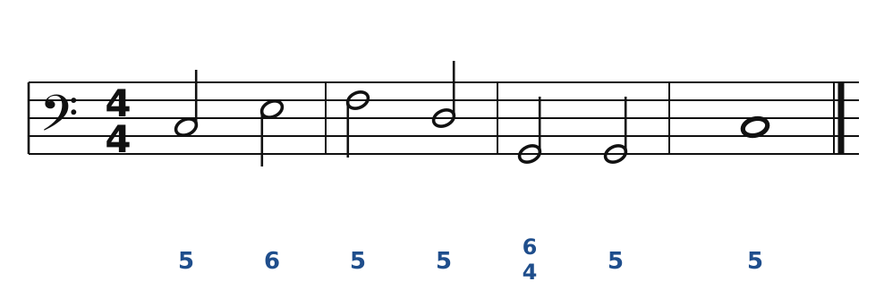
Étape 1 : trouver les accords. Pour chaque note, lis le chiffrage et retrouve la fondamentale (voir le chapitre 6) :
| Basse | Chiffrage | Fondamentale | Accord | Degré |
|---|---|---|---|---|
| Do | 5 | Do | C | I |
| Mi | 6 | Do (une 3ce sous Mi) | C | I6 |
| Fa | 5 | Fa | F | IV |
| Ré | 5 | Ré | Dm | II |
| Sol | 6/4 | Do (une 4te au-dessus de Sol) | C | I6/4 |
| Sol | 5 | Sol | G | V |
| Do | 5 | Do | C | I |
Étape 2 : repérer la cadence. Les deux dernières mesures forment la formule I6/4-V-I : la quarte et sixte de cadence, sur le temps fort, puis la cadence parfaite.
Étape 3 : écrire le soprano. Cherche une ligne simple, qui avance surtout par degrés conjoints et finit sur la tonique. Vérifie tout de suite les 5tes et les 8ves entre soprano et basse : c'est le couple qu'on entend le mieux.
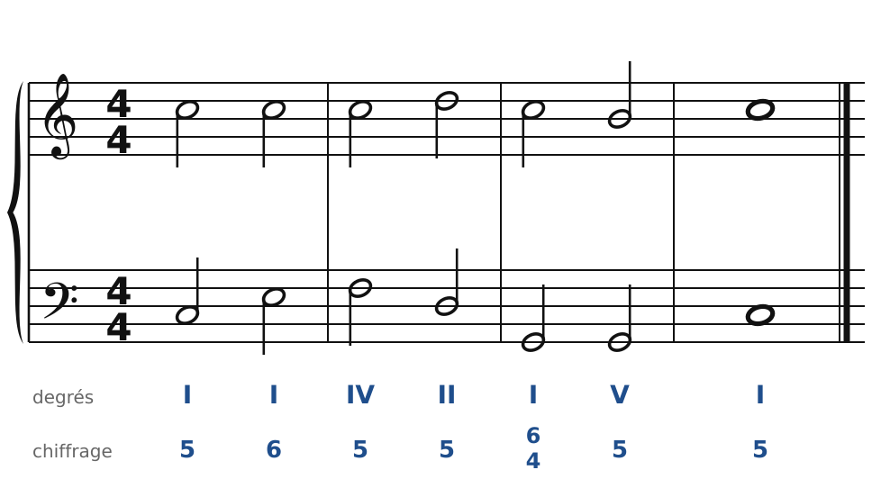
Ici, le soprano reste sur Do pendant que la basse bouge : c'est du mouvement oblique, qui ne risque aucune quinte ni octave. Puis Ré (au-dessus du II), et la cadence Do-Si-Do : dans le I6/4, le Do est la 4te au-dessus de la basse, qui descend sur la 3ce (Si).
Étape 4 : compléter l'alto et le ténor avec la méthode du chapitre 3 : notes communes, plus court chemin, doublures selon l'état de l'accord.
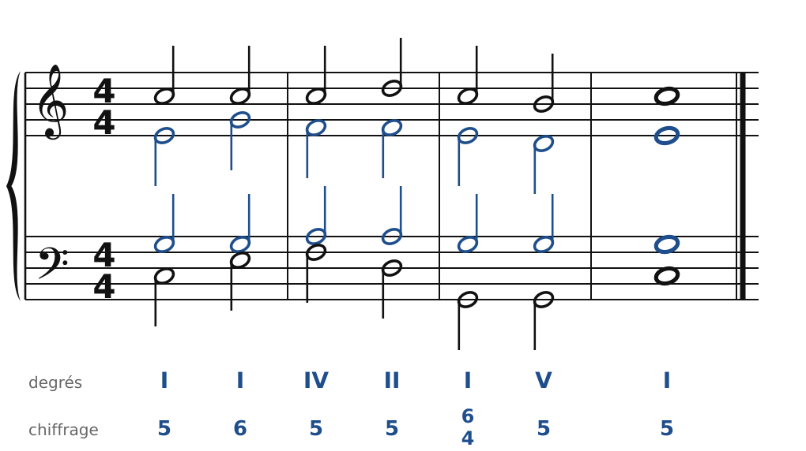
Étape 5 : vérifier, avec la liste du chapitre 3, plus les règles des chapitres 6 à 8 (doublures des accords de sixte, quarte et sixte).
Le chant donné, pas à pas
Voici une mélodie en Do majeur :
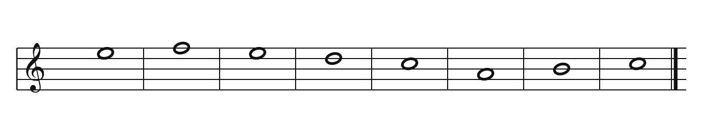
Étape 1 : lister les accords possibles. Chaque note de la gamme appartient à plusieurs accords :
| Note | Accords qui la contiennent |
|---|---|
| Do | I, IV, VI |
| Ré | II, V |
| Mi | I, VI (III) |
| Fa | II, IV |
| Sol | I, V |
| La | II, IV, VI |
| Si | V (III) |
Étape 2 : placer le début et la fin. On commence sur I. On finit par une cadence : ici, Si-Do au soprano appelle V-I (cadence parfaite).
Étape 3 : choisir les accords du milieu. Préfère les enchaînements forts :
- I peut aller partout ;
- IV et II vont vers V (ou vers I) ;
- V va vers I (ou vers VI : cadence rompue) ;
- VI va vers II, IV ou V.
Évite V-IV et II-IV, qui sonnent comme un retour en arrière.
Étape 4 : écrire la basse, en mouvement contraire au soprano autant que possible. Utilise les accords de sixte pour la rendre conjointe.
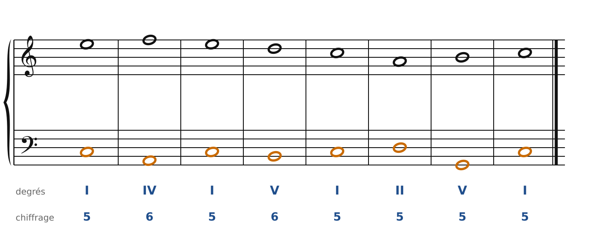
Pendant que le soprano fait Mi-Fa-Mi-Ré-Do, la basse fait Do-La-Do-Si-Do (en orange) : des broderies autour de Do, grâce au IV6 et au V6. Puis II-V-I pour la cadence.
Étape 5 : compléter l'alto et le ténor, puis vérifier.
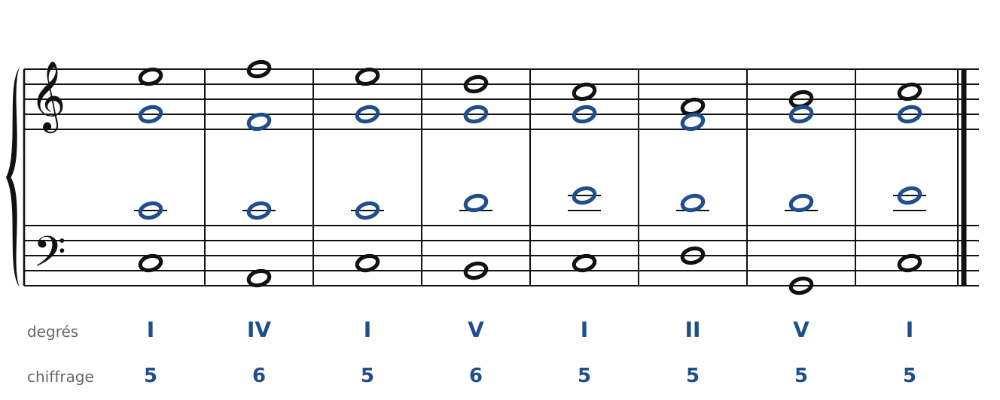
Il n'y a jamais une seule bonne réponse en chant donné. Sur la 5e note (Do), on aurait pu mettre VI au lieu de I : une petite cadence rompue au milieu de la phrase.
Pour t'entraîner, le cahier d'exercices propose de nombreuses basses données et de nombreux chants donnés, à faire pas à pas.
10. Le mode mineur
Tout ce que tu as appris vaut aussi en mineur. Il y a juste un point délicat : la sensible.
La gamme mineure harmonique
En la mineur, la gamme naturelle (La Si Do Ré Mi Fa Sol) n'a pas de sensible : Sol est un ton entier sous La, et le V (Em) est mineur. La cadence V-I perd alors toute sa force.
On hausse donc le 7e degré : Sol devient Sol♯. C'est la gamme mineure harmonique : La Si Do Ré Mi Fa Sol♯. Ce Sol♯ n'est pas à l'armure : on l'écrit à chaque fois devant la note.
Les accords en la mineur
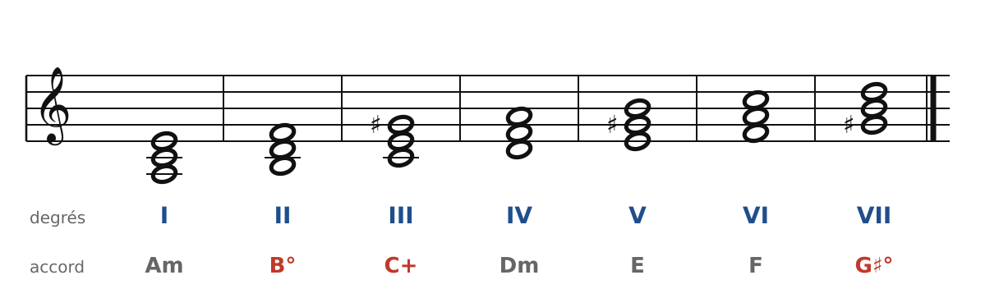
- I (Am), IV (Dm) : mineurs.
- V (E) : majeur, grâce au Sol♯. C'est lui qui donne la cadence.
- VI (F) : majeur.
- II (B°) : diminué (Si-Ré-Fa). On l'emploie presque toujours au 1er renversement (II6), avec Ré à la basse. On double alors la basse ou la fondamentale, jamais Fa.
- III (C+, Do-Mi-Sol♯) : augmenté. On l'évite.
- VII (G♯°) : diminué, on le verra avec les accords de 7e.
Le chiffrage en mineur
Une altération seule sous la basse concerne la tierce de l'accord. Sous le Mi de la basse, ♯ veut dire : accord parfait avec la tierce haussée, Mi-Sol♯-Si. C'est le chiffrage habituel du V en mineur.
Le piège : la seconde augmentée
Entre Fa (6e degré) et Sol♯ (7e degré), il y a une seconde augmentée (trois demi-tons). Mélodiquement, c'est un intervalle interdit dans le style choral : difficile à chanter, avec une couleur « orientale » qui n'a rien à faire ici.
Il apparaît surtout dans l'enchaînement VI-V (ou IV-V), quand une voix passe de Fa à Sol♯ :
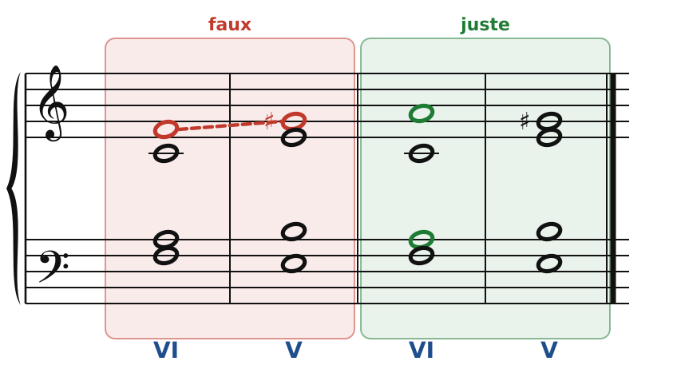
À gauche (faux) : le soprano monte de Fa à Sol♯.
À droite (juste) : dans le VI, on double la tierce (La, en vert). Le La du soprano descend d'un demi-ton sur Sol♯, l'alto va de Do à Mi, le ténor de La à Si. Personne ne fait Fa-Sol♯.
Règle : en mineur, quand VI est relié à V (dans un sens ou dans l'autre, et donc aussi dans la cadence rompue V-VI), on double la tierce de VI. Et la note Fa va vers Mi, jamais vers Sol♯.
Une phrase en la mineur
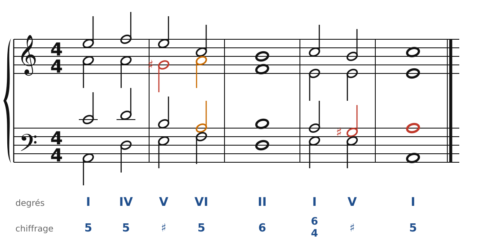
- La sensible (en rouge) monte toujours sur La.
- Mesure 2 : cadence rompue V-VI. Le VI double sa tierce (La, en orange).
- Mesure 3 : le II6 (Si-Ré-Fa avec Ré à la basse) prépare la cadence.
- Mesures 4 et 5 : quarte et sixte de cadence, puis cadence parfaite. Le V est chiffré ♯.
Les règles à retenir
- Le 7e degré est haussé (Sol♯ en la mineur) : V est majeur.
- Jamais de seconde augmentée (Fa-Sol♯) dans une voix.
- VI relié à V : on double la tierce de VI.
- II est diminué : on l'emploie en II6. III augmenté : à éviter.
11. Exercices
Fais les exercices dans l'ordre, au crayon. Joue ou chante chaque résultat avant de regarder le corrigé.
Dans la version web du cours, les exercices 2, 3, 4 et 5 se font aussi directement sur la portée : bouton ✏️ Faire l'exercice ici. Tu poses tes notes en cliquant, tu écoutes, et les corrections s'affichent au fur et à mesure, avec les mêmes règles que le cours.
Exercice 1 : chiffrer des accords
Tous ces accords sont en Do majeur. Pour chacun, trouve la fondamentale, le degré, l'état et le chiffrage (5, 6 ou 6/4).
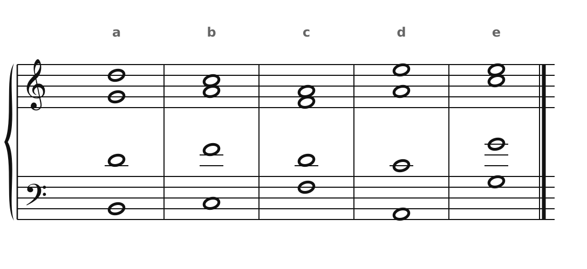
Exercice 2 : basse chiffrée en Fa majeur
Réalise cette basse à quatre voix. Commence le soprano sur Do.
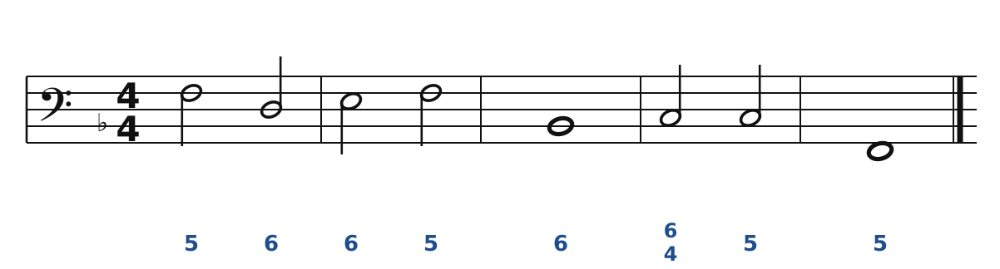
Indices : en Fa majeur, la sensible est Mi. Repère la quarte et sixte de cadence : que doivent faire la 6te et la 4te ?
Exercice 3 : chant donné en Sol majeur
Harmonise cette mélodie. Commence sur I, finis par une cadence parfaite. Utilise au moins un accord de sixte.
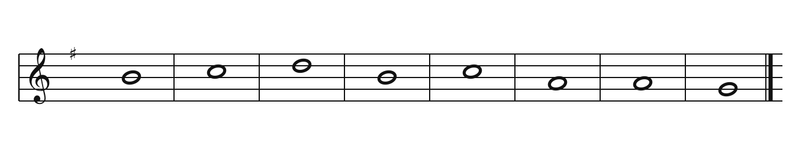
Indice : les deux La de la fin peuvent porter deux accords différents (II puis V).
Exercice 4 : basse chiffrée en ré mineur
Réalise cette basse à quatre voix.
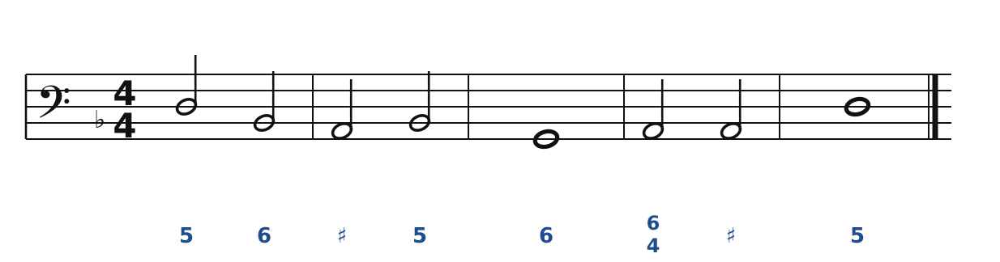
Indices : en ré mineur, la sensible est Do♯. Le ♯ sous le La veut dire : accord de La avec la tierce haussée (La-Do♯-Mi). Mesure 2, tu trouveras une cadence rompue : quelle note doubler dans le VI ?
Exercice 5 : chasse aux fautes en la mineur
Cet enchaînement contient trois fautes. Trouve-les, puis corrige-les en changeant deux notes.
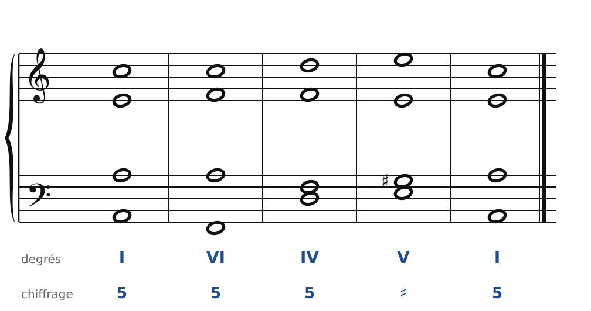
Exercice 6 : pour quatuor à cordes
Recopie ta réalisation de l'exercice 2 pour quatuor à cordes. N'oublie pas l'armure (un bémol) sur les quatre portées, y compris en clé d'ut pour l'alto.
12. Corrigés
Exercice 1 : chiffrer des accords
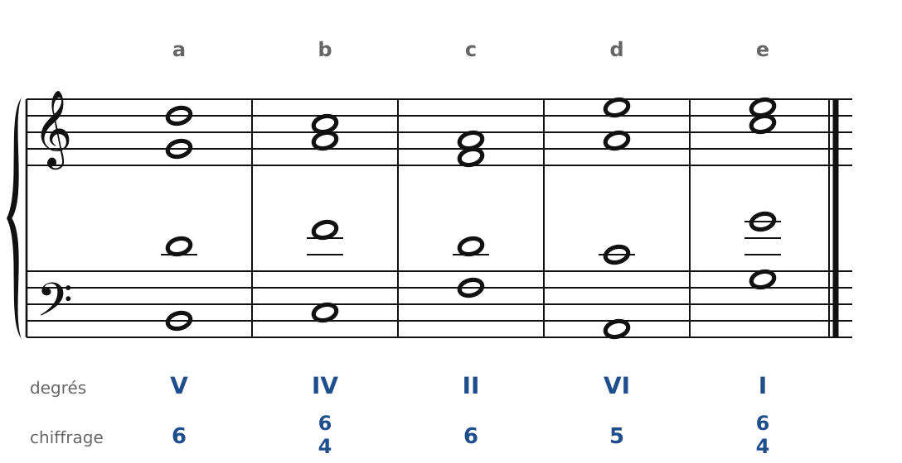
| Notes | Fondamentale | Accord | Degré | État | Chiffrage | |
|---|---|---|---|---|---|---|
| a) | Si (basse), Ré, Sol | Sol | G | V | 1er renversement | 6 |
| b) | Do (basse), Fa, La | Fa | F | IV | 2e renversement | 6/4 |
| c) | Fa (basse), Ré, La | Ré | Dm | II | 1er renversement | 6 |
| d) | La (basse), Do, Mi | La | Am | VI | état fondamental | 5 |
| e) | Sol (basse), Do, Mi | Do | C | I | 2e renversement | 6/4 |
Astuce : remets les notes en tierces empilées (Sol-Si-Ré, Fa-La-Do…). La note du bas de la pile est la fondamentale ; il suffit ensuite de regarder laquelle est à la basse.
Exercice 2 : basse chiffrée en Fa majeur
Les accords : I, IV6, V6, I, II6, I6/4, V, I.
- IV6 (Sib-Ré-Fa avec Ré à la basse) : on double Sib, la fondamentale. Pas Ré : c'est la basse d'un accord majeur.
- V6 (Do-Mi-Sol avec Mi à la basse) : Mi est la sensible de Fa majeur. On ne la double pas, et elle monte sur Fa.
- II6 (Sol-Sib-Ré avec Sib à la basse) : accord mineur, on double la basse.
- I6/4-V : au-dessus du Do de la basse, La (la 6te) descend sur Sol (la 5te) au soprano, et Fa (la 4te) descend sur Mi (la 3ce) à l'alto.
Le soprano chante Do-Sib-Do-La-Sib-La-Sol-Fa : il descend tranquillement vers la tonique, souvent en mouvement contraire avec la basse.
Exercice 3 : chant donné en Sol majeur
Une solution : I, IV, I6, VI, IV, II6, V, I.
- La basse (en orange) fait Sol-Do-Si-Mi-Do-Do-Ré-Sol. Le I6 met Si à la basse, en mouvement contraire avec le Ré du soprano.
- Le ténor garde Sol pendant cinq accords : c'est la note commune à I, IV, VI et I6.
- Sur les deux La : II6 (La-Do-Mi avec Do à la basse) prépare V (Ré-Fa♯-La), puis cadence parfaite.
- L'accord final n'a pas de quinte (Sol triplé, Si) : le Fa♯ du ténor monte sur Sol.
D'autres solutions sont possibles. Par exemple, sur le 4e accord (Si), I à l'état fondamental au lieu de VI. Vérifie simplement les enchaînements avec la liste du chapitre 9.
Exercice 4 : basse chiffrée en ré mineur
Les accords : I, IV6, V, VI, II6, I6/4, V, I.
- V (La-Do♯-Mi, chiffré ♯) : la sensible Do♯ est au soprano, elle monte sur Ré.
- V-VI (mesure 2) : cadence rompue. Dans le VI (Sib-Ré-Fa), on double la tierce, Ré.
- II6 (Mi-Sol-Sib avec Sol à la basse) : accord diminué, au 1er renversement. On double Mi, la fondamentale.
- I6/4-V-I : au-dessus du La de la basse, Ré (la 4te) descend sur Do♯ (la 3ce) et Fa (la 6te) sur Mi (la 5te).
Exercice 5 : chasse aux fautes en la mineur
- IV (mesure 3) : l'alto et le ténor chantent tous les deux Fa, la tierce de Dm. La tierce est doublée et la fondamentale Ré n'est pas doublée.
- IV-V : le ténor monte de Fa à Sol♯. C'est une seconde augmentée.
- IV-V : soprano et basse vont de Ré-Ré à Mi-Mi. Ce sont des octaves consécutives.
Correction en deux notes :
- Le ténor chante La au lieu de Fa dans le IV : la doublure est correcte (Ré doublé), et La descend d'un demi-ton sur Sol♯. Deux fautes corrigées d'un coup.
- Le soprano chante Si au lieu de Mi dans le V : les octaves disparaissent, et l'accord de V est complet.
Exercice 6 : pour quatuor à cordes
Les notes sont celles de l'exercice 2. Vérifie l'armure en clé d'ut : le bémol (Si♭) se place sur le 2e interligne en partant du bas.
13. Les notes étrangères
Jusqu'ici, toutes nos notes appartenaient à l'accord : ce sont des notes réelles. Mais dans un vrai choral, les voix ne restent pas immobiles d'un accord à l'autre. Elles glissent, elles brodent, elles retardent leur arrivée. Ces notes qui n'appartiennent pas à l'accord s'appellent des notes étrangères.
Une note étrangère n'est jamais posée au hasard : elle arrive et elle repart d'une façon bien précise. Pour la reconnaître, pose-toi deux questions :
- Est-elle sur un temps fort (là où l'accord commence) ou sur un temps faible (entre deux accords) ?
- Comment arrive-t-elle et comment repart-elle : par degré conjoint ou par saut ?
Les six sortes de notes étrangères
| Nom | Place | Elle arrive… | Elle repart… |
|---|---|---|---|
| Note de passage (p) | temps faible | par degré | par degré, dans le même sens |
| Broderie (b) | temps faible | par degré | en revenant à la note de départ |
| Échappée (é) | temps faible | par degré | par saut, dans l'autre sens |
| Anticipation (ant) | temps faible | — | c'est déjà la note de l'accord suivant |
| Retard (r) | temps fort | préparée : c'est la même note, liée, qui appartenait à l'accord précédent | en descendant d'un degré |
| Appoggiature (app) | temps fort | sans préparation, souvent par saut | par degré, le plus souvent en descendant |
Dans la figure, les notes étrangères sont en vert :
- Passage : le soprano descend Do-Si-La. Le Si relie deux notes réelles.
- Broderie : le ténor fait Do-Si-Do, une petite « broderie » autour de sa note.
- Échappée : le soprano monte Mi-Fa, puis saute sur Ré : il « s'échappe » dans l'autre sens.
- Anticipation : le soprano chante le Do du dernier accord une croche trop tôt.
- Retard : le Do du soprano reste en place (il est lié) alors que l'accord change. Sur le temps fort du V, ce Do est une dissonance, qui se résout en descendant sur Si. C'est le mécanisme du retard de 4e espèce, en contrepoint.
- Appoggiature : le soprano saute sur Do, qui n'est pas dans l'accord de V, puis se résout sur Si.
Les trois premières (passage, broderie, échappée) et l'anticipation sont non accentuées : elles se glissent sur le temps faible, souvent en croches. Le retard et l'appoggiature sont accentués : ils tombent sur le temps fort et créent une tension plus forte.
Les règles
- Une note étrangère est toujours amenée et résolue comme dans le tableau. Une note qui n'appartient pas à l'accord et qui ne suit aucun de ces modèles est une faute.
- On vérifie l'harmonie (doublures, enchaînements) sur les notes réelles. Pour un retard ou une appoggiature, la note réelle est la résolution.
- Une note étrangère ne doit pas créer de quintes ni d'octaves consécutives. Les notes de passage sont les plus dangereuses : vérifie chaque croche avec les autres voix.
- Dans le style du choral, la plupart des notes étrangères sont des notes de passage en croches, sur la deuxième moitié du temps.
Avant, après
Voici une phrase écrite en noires, puis la même phrase ornée de notes étrangères :
Les harmonies n'ont pas changé : on a seulement rempli des tierces par des notes de passage (à l'alto et au soprano) et ajouté un retard à l'alto juste avant la cadence (La lié, qui descend sur Sol). Écoute la différence : les voix se mettent à chanter, et la cadence est plus expressive.
14. Analyse : un choral de Bach
Jean-Sébastien Bach a harmonisé à quatre voix plusieurs centaines de chorals, les cantiques de l'Église luthérienne. Après sa mort, on en a réuni 371 dans un recueil qui sert depuis de modèle à tous les élèves d'harmonie.
Le premier de ce recueil est « Aus meines Herzens Grunde » (« Du fond de mon cœur », BWV 269), en Sol majeur, à 3/4. La mélodie commence par une anacrouse : un temps avant la première barre de mesure (on compte les mesures à partir de la première mesure complète). Chaque phrase se termine par un point d'orgue (𝄐), qui marque la cadence.
On analyse les deux premières phrases. Sous la portée : les degrés et le chiffrage, un accord par temps. Les notes étrangères sont en vert.
Phrase 1 : une demi-cadence
- Anacrouse et mesure 1 : I, puis encore I. Sous le Sol tenu du soprano, Bach change d'accord : I, puis VI (Em). Une même note de la mélodie peut porter deux accords différents. Au ténor, Do-Si est une broderie (b). Puis V6 : la basse Fa♯ (la sensible) monte vers Sol.
- Mesure 2 : I, puis V avec un retard au soprano (r) : le Si tenu depuis le premier temps est étranger à l'accord de Ré, il descend sur La. Le chiffrage « 6 5 » montre cette résolution : la 6te au-dessus de la basse (Si) descend sur la 5te (La). Puis VI.
- Mesure 3 : IV (C), animé par des croches. Alto et ténor font des broderies (Mi-Ré-Mi, Do-Si-Do). Ensuite, trois voix descendent ou montent ensemble en notes de passage (p) : le soprano Sol-La-Si, l'alto Mi-Fa♯-Sol, la basse Do-Si-La-Sol. Tout ce mouvement mène à I.
- Mesure 4 : V, avec le point d'orgue : c'est une demi-cadence. La phrase s'arrête sur une question.
Phrase 2 : une cadence parfaite
- Anacrouse (fin de la mesure 4) : I. Mesure 5 : V6 (basse Fa♯), puis I et II. L'alto monte Ré-Mi-Fa♯-Sol : le Mi et le Fa♯ sont des notes de passage, qui tombent ici sur le temps (passages « accentués »).
- Mesure 6 : I6, puis un accord qu'on étudiera dans la quatrième partie : II6/5, un accord de 7e (La-Do-Mi avec le Sol de l'alto, gardé de l'accord précédent). Puis V : au ténor, Ré-Do-Si est une note de passage. Le Do qu'on entend avec l'accord de V est sa 7e, une couleur que Bach adore.
- Mesure 7 : I, point d'orgue : cadence parfaite.
Ce qu'il faut retenir
- Un accord par temps, presque toujours. Les croches sont des notes étrangères.
- La basse chante : souvent par degrés conjoints, avec beaucoup d'accords de sixte (V6, I6).
- Une cadence à chaque point d'orgue : ici une demi-cadence, puis une cadence parfaite.
- Les notes étrangères sont surtout des notes de passage et des broderies en croches, plus un retard expressif à l'approche des cadences.
- Tout ce que tu as appris (doublures, mouvement contraire, sensible qui monte) se retrouve chez Bach. Le chapitre suivant te montre comment harmoniser toi-même une mélodie de choral.
Source : J.-S. Bach, choral BWV 269, regravé d'après le fichier du corpus music21 (domaine public).
15. Harmoniser une mélodie de choral
Harmoniser un choral, c'est un chant donné (chapitre 9) avec deux nouveautés : un accord par temps (en noires), et des notes étrangères pour faire chanter les voix (chapitre 13). On travaille dans l'ordre : d'abord les accords en noires, ensuite les ornements.
La méthode en six étapes
- Repère les phrases et leurs cadences (les points d'orgue). Chaque phrase finit par une cadence : parfaite, demi-cadence…
- Un accord par temps. Sous chaque note réelle du soprano, choisis un accord qui la contient. Si la mélodie a une croche de passage ou un retard, ce n'est pas elle qui décide de l'accord.
- Prépare les cadences : II6 ou IV avant V, et pourquoi pas une quarte et sixte de cadence (I6/4-V-I).
- Écris la basse, en noires, en mouvement contraire avec le soprano autant que possible. Les accords de sixte la rendent conjointe.
- Complète l'alto et le ténor, en noires : notes communes, plus court chemin, bonnes doublures. Vérifie tout.
- Ajoute des notes étrangères : là où une voix fait une tierce, une croche de passage la remplit. Un retard peut rendre la cadence plus expressive. Vérifie que chaque croche ne crée ni quinte ni octave consécutive.
Un exemple, étape par étape
La mélodie, en Sol majeur :
Étapes 1 à 4. Une seule phrase, qui se termine par Si-La-Sol : c'est une cadence parfaite, préparée par une quarte et sixte de cadence (le Si sur le temps fort de la dernière mesure). Les accords : I, V6, I, IV6, V, I, IV, II6, I6/4, V, I. La basse, avec les accords de sixte, monte et descend surtout par degrés :
Étape 5. L'alto et le ténor en noires :
Étape 6. On remplit quelques tierces par des notes de passage, à l'alto et au ténor :
Compare les deux dernières versions : mêmes accords, mais la seconde ressemble beaucoup plus à un choral de Bach. On n'ajoute pas des notes de passage partout : deux ou trois par phrase suffisent. On les place surtout aux voix intérieures et à la basse, pour que la mélodie reste bien claire.
16. Exercices
Dans la version web du cours, les exercices 2 à 5 se font directement sur la portée (bouton ✏️ Faire l'exercice ici). Pour écrire deux croches à la place d'une noire, sélectionne la note et clique sur ♪♪ croches (touche C). Pour préparer un retard, sélectionne la note et clique sur ⁀ lier (touche L). Les notes étrangères reconnues s'affichent en vert avec leur nom (p, b, r…), et celles qui sont mal traitées en rouge.
Exercice 1 : reconnaître les notes étrangères
Six notes étrangères sont numérotées. Pour chacune, donne son nom (passage, broderie, échappée, anticipation, retard, appoggiature) et explique comment tu l'as reconnue.
Exercice 2 : des notes de passage
Ajoute au moins trois notes de passage à cette phrase en Do majeur, sans créer de quintes ni d'octaves.
Indice : cherche les voix qui font une tierce d'un accord à l'autre.
Exercice 3 : un retard à la cadence
Dans cette phrase en Sol majeur, ajoute un retard juste avant la cadence finale, puis deux autres notes étrangères.
Indice : un retard se prépare. Cherche une voix qui descend d'un degré entre l'avant-dernier accord et celui d'avant : garde l'ancienne note (liée) et fais-la descendre à la croche suivante.
Exercice 4 : harmoniser une mélodie de choral
Harmonise cette mélodie en Fa majeur, en suivant la méthode du chapitre 15 : accords, basse, alto et ténor en noires, puis au moins deux notes de passage.
Exercice 5 : la mélodie du choral n°1
Voici la première phrase de « Aus meines Herzens Grunde », la mélodie que Bach harmonise au chapitre 14 (à 3/4, avec une anacrouse). Sans regarder la version de Bach, harmonise-la, puis compare.
Indices : le Sol tenu de la mesure 1 peut porter deux accords. Mesure 2, le Si lié qui descend sur La est un retard : l'accord de ce temps doit contenir La, pas Si. La phrase finit sur une demi-cadence.
17. Corrigés
Exercice 1 : reconnaître les notes étrangères
| N° | Voix | Nom | Comment la reconnaître |
|---|---|---|---|
| 1 | ténor | broderie | temps faible, elle descend d'un degré et revient à la même note |
| 2 | alto | note de passage | temps faible, elle relie deux notes réelles par degrés, dans le même sens |
| 3 | ténor | note de passage | même chose, au ténor |
| 4 | soprano | note de passage | même chose, au soprano |
| 5 | ténor | retard | temps fort, la note est liée depuis l'accord précédent et descend d'un degré |
| 6 | soprano | anticipation | temps faible, c'est déjà la note de l'accord suivant (la tonique) |
Exercice 2 : des notes de passage
Les notes de passage (en vert) remplissent des tierces. D'autres places étaient possibles : la version web vérifie la tienne.
Exercice 3 : un retard à la cadence
Le retard (r) garde la note de l'accord précédent, liée, sur le temps fort de l'accord de V, puis descend d'un degré. C'est la même tension expressive que chez Bach (chapitre 14, mesure 2).
Exercice 4 : harmoniser une mélodie de choral
Une solution parmi d'autres : I, V6, I, IV, I6, I, IV, II6, I6/4, V, I, avec une quarte et sixte de cadence sur le temps fort de la dernière mesure. Puis quelques notes de passage aux voix intérieures.
Exercice 5 : la mélodie du choral n°1
Cette réalisation suit les accords de Bach : I, puis I et VI sous le Sol tenu, V6, I, V (avec le retard Si-La de la mélodie), VI, IV pendant deux temps, I, et la demi-cadence sur V. Compare-la avec la version de Bach :
Les accords sont les mêmes, mais Bach fait davantage chanter chaque voix : broderies à l'alto et au ténor, et trois notes de passage ensemble pour aller vers la cadence. Si tu as choisi d'autres accords, ce n'est pas forcément faux : la version web vérifie que ta réalisation respecte les règles.
18. La septième de dominante
Jusqu'ici, tous nos accords avaient trois sons. On ajoute maintenant une quatrième note, une tierce au-dessus de la quinte : on obtient un accord de septième. Le plus important de tous est la septième de dominante, le V7. On l'entend partout, de Bach au jazz (c'est le G7 qui ramène à C).
L'accord de 7e de dominante
En Do majeur, le V est Sol-Si-Ré. On ajoute Fa, une 7e mineure au-dessus de Sol : Sol-Si-Ré-Fa, l'accord de G7.
Il contient deux notes qui « veulent » bouger :
- la sensible (Si, en orange), qui monte vers la tonique, comme dans le V ;
- la septième (Fa, en rouge), une dissonance, qui descend d'un degré.
Entre Si et Fa, il y a un triton (une quarte augmentée, ou une quinte diminuée). C'est ce triton qui donne au V7 sa tension, et qui rend sa résolution sur I si forte.
Chiffrage : 7+. Le 7 indique la septième, le + indique la sensible.
La résolution : la sensible monte, la septième descend
C'est la règle d'or de ce chapitre :
- La sensible monte d'un demi-ton sur la tonique (Si-Do).
- La septième descend d'un degré (Fa-Mi).
- Les autres voix vont au plus près.
Le triton Si-Fa se résout sur la tierce Do-Mi.
Regarde les deux cas de la figure :
- V7 complet (à gauche) : les quatre notes sont là. À la résolution, Ré descend sur Do, et le I n'a pas de quinte : la fondamentale est triplée. C'est normal, et c'est permis.
- V7 sans quinte (à droite) : on supprime Ré et on double la fondamentale (Sol). Le I qui suit est complet.
Les doublures
- a) Complet : une note par voix. C'est la disposition normale.
- b) Sans quinte, avec la fondamentale doublée : permis. La quinte est la note la moins importante.
- c) La sensible est doublée : interdit. Les deux Si devraient monter sur Do, ce qui donnerait des octaves.
- d) La septième est doublée : interdit, pour la même raison (deux Fa qui descendent sur Mi).
Retiens : on ne double jamais la sensible ni la septième. Si une note manque, c'est la quinte, et on double la fondamentale.
La 7e de dominante n'a pas besoin d'être préparée : elle peut arriver par saut, sans avoir été entendue dans l'accord d'avant. (Ce ne sera pas le cas des 7es d'espèce, au chapitre suivant.)
Les renversements
Un accord de quatre sons a trois renversements. On les chiffre d'après les intervalles au-dessus de la basse :
| Basse | Nom | Chiffrage du V7 | Résolution habituelle |
|---|---|---|---|
| fondamentale (Sol) | état fondamental | 7+ | V7 - I |
| tierce (Si) | 1er renversement | 6/5 (le 5 est souvent barré) | V6/5 - I |
| quinte (Ré) | 2e renversement | +6 | V+6 - I ou I6 |
| septième (Fa) | 3e renversement | +4 | V+4 - I6 |
Dans les renversements, l'accord est complet : on ne supprime aucune note.
Les règles ne changent pas : la sensible monte, la septième descend. Pour le V+4, c'est donc la basse qui descend (Fa-Mi), et on arrive sur un I6.
Les renversements rendent la basse conjointe : Do-Si-Do (I-V6/5-I), Do-Ré-Mi (I-V+6-I6), Do-Fa-Mi… C'est pour cela qu'on les aime.
Un cas à connaître : la septième qui monte
Dans l'enchaînement V+6 - I6, la basse monte (Ré-Mi). Si la septième (Fa) descend sur Mi, elle double la basse de l'accord de sixte : c'est la faute de la figure de gauche (tierce d'un accord majeur doublée). On permet alors à la septième de monter sur Sol, en dixièmes parallèles avec la basse. C'est la seule exception à la règle.
Le V7 dans la cadence rompue
La règle du chapitre 7 s'applique encore : la sensible monte (Si-Do), la 7e descend (Fa-Mi), Ré descend sur Do. Le VI a sa tierce doublée (en vert), comme dans toute cadence rompue.
Une phrase avec des V7
On utilise le V6/5 et le V+6 au milieu de la phrase, pour une basse chantante, et le V7 à l'état fondamental à la cadence finale. Les septièmes sont en rouge : chacune descend d'un degré dans l'accord suivant.
En mineur
En la mineur, le V7 est Mi-Sol♯-Si-Ré : un E7, avec la sensible haussée. Il est construit exactement comme en majeur, et se résout de la même façon (Sol♯-La, Ré-Do). Attention toujours à la seconde augmentée Fa-Sol♯.
Les règles à retenir
- V7 = V + une 7e mineure. Chiffrage : 7+, 6/5, +6, +4.
- La sensible monte, la 7e descend d'un degré.
- On ne double ni la sensible ni la 7e. À l'état fondamental, on peut supprimer la quinte (et doubler la fondamentale) ; dans les renversements, l'accord est complet.
- La 7e de dominante n'a pas besoin d'être préparée.
- Exception : dans V+6 - I6, la 7e peut monter.
19. Les septièmes d'espèce et les marches harmoniques
On peut ajouter une septième à n'importe quel degré, pas seulement au V. Les accords de 7e construits sur les autres degrés s'appellent les septièmes d'espèce. Ils n'ont pas de sensible à résoudre, mais leur septième reste une dissonance, qu'il faut traiter avec soin.
Un accord de 7e sur chaque degré
En Do majeur, avec les seules notes de la gamme (septièmes en rouge) :
- sur I et IV : une 7e majeure (Cmaj7, Fmaj7) ;
- sur II, III et VI : un accord mineur avec une 7e mineure (Dm7, Em7, Am7) ;
- sur V : la 7e de dominante (G7, en bleu), le seul accord avec une sensible et un triton… et une 7e mineure sur un accord majeur ;
- sur VII : un accord diminué avec une 7e mineure (Bm7♭5), la 7e de sensible, qu'on retrouvera au chapitre suivant.
Les jazzmen connaissent bien ces sept accords : ce sont les accords de la gamme majeure. En harmonie classique, on les traite tous de la même façon. Le plus utile de loin est le II7, surtout au 1er renversement (II6/5).
Préparation, dissonance, résolution
La septième d'un accord d'espèce se traite en trois temps, exactement comme la dissonance de 4e espèce en contrepoint :
- Préparation (en vert) : la note est déjà là, à la même voix, dans l'accord précédent, où elle est consonante. Ici, le Do du ténor dans le I.
- Dissonance (en rouge) : elle reste en place pendant que l'accord change. Dans le II6/5, ce Do devient la 7e de Ré-Fa-La-Do.
- Résolution (en bleu) : elle descend d'un degré dans l'accord suivant (Do-Si, dans le V7).
La résolution est la même que pour la 7e de dominante. La différence, c'est la préparation, obligatoire pour les 7es d'espèce.
À gauche (faux) : le soprano saute de Mi sur Do, qui est la 7e du II7. Cette dissonance arrive sans préparation : elle sonne dure, comme une fausse note. À droite (juste) : le soprano chante déjà Do dans le I, et le garde. La dissonance se glisse en douceur.
Le II6/5, l'accord qui prépare la cadence
Au chapitre 7, le II6 préparait la cadence. Le II6/5 fait la même chose, avec une note de plus : la basse est encore le 4e degré (Do en Sol majeur), et la 7e (Sol) se prépare facilement, puisque c'est la tonique, présente dans l'accord d'avant. Elle descend ensuite sur Fa♯, la sensible du V7.
L'enchaînement II6/5 - V7 - I est l'une des formules les plus employées de toute la musique tonale (en jazz, c'est le fameux « II-V-I »).
Les marches harmoniques
Une marche harmonique (on dit aussi une séquence) est un petit modèle de deux accords, répété plusieurs fois en montant ou en descendant, toujours avec le même dessin à chaque voix.
Le modèle est I-IV : la basse descend d'une quinte (ou monte d'une quarte). On le répète un degré plus bas (VII-III), puis encore un degré plus bas (VI-II), avant la cadence V-I. Toutes les fondamentales s'enchaînent par quintes descendantes : c'est la marche la plus naturelle de la musique tonale (le « cycle des quintes »).
Deux règles propres aux marches :
- Dans une marche, l'oreille suit le dessin, pas la tonalité. On y accepte donc le VII à l'état fondamental, et sa sensible n'est pas obligée de monter : elle suit le modèle.
- Le modèle doit être juste (sans quintes, sans octaves), et chaque copie reproduit exactement le même mouvement à chaque voix.
Une marche de septièmes
Si l'on ajoute une 7e à chaque accord de la marche, on obtient une chaîne de septièmes : chaque 7e (en rouge) est préparée dans l'accord précédent (en vert) et descend d'un degré dans le suivant, où elle devient la tierce. La note qui résout une 7e prépare aussitôt la suivante. C'est l'un des effets les plus beaux de l'écriture à quatre voix, très employé par Bach, Haendel et Vivaldi.
Les règles à retenir
- Une 7e d'espèce est préparée (même note, même voix, dans l'accord précédent) et descend d'un degré.
- Le II7 et surtout le II6/5 préparent la cadence : II6/5 - V7 - I.
- Chiffrage des 7es d'espèce : 7, 6/5, 4/3, 2 (sans le +, puisqu'il n'y a pas de sensible).
- Une marche répète un modèle juste. Dans une marche, la sensible ne monte pas forcément.
20. La septième diminuée et la neuvième de dominante
On peut empiler encore une tierce sur le V7 : on obtient la 9e de dominante, un accord de cinq sons. Il est rare en entier, mais ses formes sans fondamentale sont parmi les accords les plus expressifs de la musique classique et romantique : la 7e de sensible et surtout la 7e diminuée.
La 9e de dominante
En Do majeur : Sol-Si-Ré-Fa-La. La 9e (La) est majeure en majeur ; en mineur, elle est mineure (Fa sur Mi, en la mineur). Chiffrage : 9+ (on écrit aussi 9 au-dessus de 7 et de +).
À quatre voix, il faut supprimer une note : c'est la quinte. Restent la fondamentale (à la basse), la sensible, la 7e et la 9e.
Les règles de la 9e :
- La fondamentale reste à la basse (on ne renverse pas l'accord de 9e complet).
- La 9e se place au-dessus de la sensible, et à au moins une 9e de la basse. Sinon, elle frotte contre la sensible (un intervalle de 7e majeure ou de 2de) et sonne mal.
- La 9e descend d'un degré, comme la 7e. Elle peut se résoudre sur I (La-Sol, à gauche), ou d'abord sur l'octave de la fondamentale, à l'intérieur du même accord (V9 - V7, à droite).
La sensible (en orange) monte toujours, et la 7e (en rouge) descend.
La 7e de sensible
Si l'on enlève la fondamentale (Sol) du V9, il reste Si-Ré-Fa-La : c'est l'accord de 7e construit sur le VII, qu'on appelle la 7e de sensible (Bm7♭5). Il garde la fonction de dominante, et se résout sur I :
- la sensible Si monte sur Do ;
- la 7e (La, ancienne 9e) descend sur Sol ;
- Fa descend sur Mi ;
- Ré va sur Do ou sur Mi.
Comme pour le V7, sa 7e n'a pas besoin d'être préparée. Attention aux quintes : Ré et La forment une quinte juste, qui ne doit pas descendre en parallèle sur Do-Sol. La solution : mettre La sous Ré (une quarte), comme dans la figure.
La 7e diminuée
En mineur, la même chose donne Sol♯-Si-Ré-Fa (en la mineur) : trois tierces mineures empilées. C'est l'accord de 7e diminuée (G♯°7), chiffré 7° dans ce cours (les traités écrivent un 7 barré). C'est la 9e de dominante mineure (Mi-Sol♯-Si-Ré-Fa) sans fondamentale.
Sa résolution sur I :
- la sensible Sol♯ monte sur La (en orange) ;
- la 7e Fa descend sur Mi (en rouge) ;
- Si descend sur La, Ré descend sur Do.
Cet accord est très tendu, presque dramatique. On l'entend dans Bach (les passions), Mozart (Don Giovanni), Beethoven (la sonate « Pathétique »)… et dans toute la musique de film.
On l'emploie aussi en majeur, en abaissant le 6e degré : Si-Ré-Fa-La♭ en Do majeur. Le La♭ (la 7e, en rouge) descend sur Sol. C'est un emprunt au mode mineur, très courant chez les classiques et les romantiques.
Une curiosité : l'accord symétrique
La 7e diminuée est faite de quatre tierces mineures qui partagent l'octave en quatre parts égales. Si on la renverse, on retrouve toujours le même empilement. Il n'existe donc que trois accords de 7e diminuée différents, et chacun peut se lire dans quatre tonalités (en changeant le nom d'une note : Sol♯ = La♭). C'est un outil précieux pour moduler vers des tons éloignés, qu'on retrouvera dans la sixième partie.
Les règles à retenir
- V9 : sans la quinte, la fondamentale à la basse, la 9e au-dessus de la sensible ; la 9e descend.
- 7e de sensible (VII7, en majeur) et 7e diminuée (VII7 en mineur, ou en majeur avec le 6e degré abaissé) : ce sont des accords de dominante sans fondamentale. La sensible monte, la 7e descend, et la 7e n'a pas besoin d'être préparée.
- Ne double ni la sensible ni la 7e.
21. Les dominantes secondaires et la modulation aux tons voisins
Le V7 a tant de force qu'on a envie de l'utiliser devant d'autres accords que le I. On fabrique pour cela la « dominante » d'un autre degré : c'est une dominante secondaire. Et quand on s'installe vraiment dans un nouveau ton, on module.
La dominante de la dominante
En Do majeur, le V est G. Quel accord serait le « V7 de G » ? C'est Ré-Fa♯-La-Do (D7). On l'écrit V7/V (« cinq sept de cinq »), ou V/V sans la 7e.
Le Fa♯ n'appartient pas à Do majeur : c'est une sensible passagère, la sensible de Sol. Elle se comporte comme une vraie sensible :
- Fa♯ monte sur Sol (en orange) ;
- la 7e Do descend sur Si (en rouge) ;
- on ne double ni Fa♯ ni Do.
Le V7/V se place là où l'on mettrait un II ou un IV : juste avant le V. Il rend la demi-cadence ou la cadence parfaite beaucoup plus énergique.
Les autres dominantes secondaires
On peut faire la même chose devant chaque accord majeur ou mineur de la tonalité (pas devant le VII, qui est diminué). En Do majeur :
| Dominante secondaire | Notes | Accord | Se résout sur | Sensible passagère |
|---|---|---|---|---|
| V7/IV | Do-Mi-Sol-Si♭ | C7 | IV (F) | Mi (monte sur Fa) |
| V7/II | La-Do♯-Mi-Sol | A7 | II (Dm) | Do♯ (monte sur Ré) |
| V7/V | Ré-Fa♯-La-Do | D7 | V (G) | Fa♯ (monte sur Sol) |
| V7/VI | Mi-Sol♯-Si-Ré | E7 | VI (Am) | Sol♯ (monte sur La) |
Remarque le V7/IV : c'est le I avec une 7e mineure (Si♭). La note ajoutée n'est pas la sensible, c'est la 7e ; la sensible passagère est Mi, la tierce, qui monte sur Fa.
Pour trouver une dominante secondaire : prends l'accord visé, monte d'une quinte, et construis un accord majeur avec une 7e mineure. Les altérations qui apparaissent (Fa♯, Do♯, Sol♯, Si♭) sont les signes d'une dominante secondaire, et ce sont elles qu'il faut surveiller.
Les tons voisins
Une modulation, c'est un changement de tonique : la musique s'installe dans un nouveau ton, avec une nouvelle cadence. Les modulations les plus simples vont vers les tons voisins, ceux dont l'armure ne diffère que d'une altération au plus :
| Ton de départ | Tons voisins |
|---|---|
| Do majeur | la mineur (relatif) · Sol majeur et mi mineur (dominante) · Fa majeur et ré mineur (sous-dominante) |
| la mineur | Do majeur (relatif) · mi mineur et Sol majeur · ré mineur et Fa majeur |
Les tons voisins ont presque toutes leurs notes en commun. C'est pour cela que l'oreille passe de l'un à l'autre sans effort.
Moduler avec un accord pivot
La méthode classique tient en trois temps :
- Un accord pivot, commun aux deux tons. Ici Am : c'est le VI de Do majeur… et le II de Sol majeur. On l'analyse des deux façons (VI = II).
- La dominante du nouveau ton, de préférence avec sa 7e : D7, le V7 de Sol. Son Fa♯ (en orange) est la nouvelle sensible : c'est lui qui annonce le changement de ton.
- Une cadence dans le nouveau ton : V7-I en Sol.
Le pivot rend la modulation douce : l'oreille ne sent le changement qu'au moment où arrive la nouvelle sensible.
Vers le relatif mineur, c'est encore plus facile : F est le IV de Do et le VI de la mineur (IV = VI). Puis E7, le V7 de la mineur, avec sa sensible Sol♯, et la cadence V7-I.
Dominante secondaire ou modulation ?
Les deux utilisent une sensible passagère. La différence est une question de durée :
- une dominante secondaire colore un seul accord, puis on reste dans le ton (I - V7/V - V - I : on est toujours en Do) ;
- une modulation s'installe : nouvelle sensible, cadence dans le nouveau ton, et la musique continue dans ce ton.
Les règles à retenir
- V7/X : l'accord majeur avec 7e mineure construit une quinte au-dessus de X. Sa tierce est une sensible passagère, qui monte ; sa 7e descend.
- Les tons voisins ont la même armure à une altération près.
- Moduler : accord pivot (commun aux deux tons), V7 du nouveau ton, cadence.
22. Exercices
Dans la version web du cours, les exercices 2 à 6 se font directement sur la portée (bouton ✏️ Faire l'exercice ici). Pour les basses chiffrées et le chant donné, le menu des accords propose aussi les accords de 7e (V7, II7…) : à toi de choisir le bon d'après la basse et le chiffrage. Les septièmes non préparées ou non résolues sont signalées au fur et à mesure.
Pour t'entraîner davantage, le cahier d'exercices propose 26 autres exercices sur ces quatre chapitres.
Exercice 1 : chiffrer des accords de 4 sons
Pour chaque accord, donne son nom (en lettres), son degré dans la tonalité indiquée et son chiffrage (7+, 6/5, +6, +4, 7, 7°…).
Exercice 2 : basse chiffrée en Do majeur
Trouve les accords, écris le soprano, puis l'alto et le ténor.
Indice : il y a deux 6/5 de nature différente. Le premier a la sensible à la basse (c'est un V) ; le second a le 4e degré à la basse, et sa 7e doit être préparée.
Exercice 3 : basse chiffrée en Fa majeur
Même consigne.
Indice : avec +4, la basse est la 7e du V7 : elle descend ensuite d'un degré.
Exercice 4 : chasse aux fautes
Cet enchaînement I - II6/5 - V7 - I contient trois fautes. Trouve-les et corrige-les (la basse ne bouge pas).
Exercice 5 : chant donné en Sol majeur
Harmonise cette mélodie. Prépare la cadence par un II6/5 et finis par V7 - I.
Exercice 6 : une dominante secondaire et une modulation
Basse donnée avec ses accords : un V7/V en Do majeur, puis une modulation vers Sol majeur par l'accord pivot Am (VI = II). Écris le soprano, puis l'alto et le ténor.
23. Corrigés
Il y a souvent plusieurs bonnes réponses : les corrigés montrent une solution, contrôlée par le vérificateur du cours. Les septièmes sont en rouge, les sensibles des accords de dominante en orange.
Exercice 1 : chiffrer des accords de 4 sons
- a) Sol-Si-Ré-Fa, la fondamentale à la basse : G7, V7+. Accord complet.
- b) Si à la basse, puis Ré, Fa, Sol : G7 au 1er renversement, V6/5.
- c) Ré-Fa-La-Do, Ré à la basse : Dm7, II7, une 7e d'espèce.
- d) Fa à la basse : G7 au 3e renversement, V+4. La basse devra descendre sur Mi.
- e) Ré-Fa♯-La-Do avec Do à la basse : D7, la dominante de la dominante au 3e renversement, V/V +4. Le Fa♯ est la sensible passagère.
- f) En la mineur, Sol♯-Si-Ré-Fa : G♯°7, la 7e diminuée sur le VII, 7°.
Exercice 2 : basse chiffrée en Do majeur
Accords : I - V6/5 - I - IV - II6/5 - V7 - I. Le premier 6/5 (sensible Si à la basse) est un V7 renversé : la basse monte sur Do. Le second (Fa à la basse) est un II7 : sa 7e, Do, est préparée par le IV et descend sur Si dans le V7.
Exercice 3 : basse chiffrée en Fa majeur
Accords : I - V+4 - I6 - IV - II7 - V7 - I. Dans le V+4, la 7e (Si♭) est à la basse et descend sur La (I6). La 7e du II7 (Fa) est préparée au soprano dans le IV, et descend sur Mi dans le V7.
Exercice 4 : chasse aux fautes
Les trois fautes :
- Accords 1-2 : quintes consécutives entre ténor et basse (Sol-Do, puis Do-Fa).
- Accords 1-2 : la 7e du II6/5 n'est pas préparée : le ténor saute sur Do. Il faut que le Do soit déjà là, à la même voix, dans le I.
- Accords 3-4 : la 7e du V7 ne descend pas : l'alto monte de Fa à Sol. Elle doit descendre sur Mi.
Le corrigé garde Do au soprano dans les deux premiers accords (la 7e est préparée), et fait descendre Fa sur Mi à la fin.
Exercice 5 : chant donné en Sol majeur
Accords : I - IV - I6 - II6/5 - V7 - I. La 7e du II6/5 (Sol) est préparée par le I6, puis descend sur Fa♯, la sensible du V7, qui monte à son tour sur Sol.
Exercice 6 : une dominante secondaire et une modulation
Le V7/V (D7) apporte Fa♯, qui monte sur Sol, et sa 7e Do descend sur Si. Après la cadence en Do, l'accord de Am sert de pivot : VI de Do, II de Sol. Le D7 qui suit est maintenant le V7 de Sol majeur, et la cadence V7 - I confirme le nouveau ton.
24. La sixte napolitaine et les sixtes augmentées
Les compositeurs classiques aiment colorer la préparation de la cadence avec des accords chromatiques, qui empruntent des notes étrangères à la gamme. Les deux familles les plus célèbres sont la sixte napolitaine et les sixtes augmentées. Toutes deux préparent le V (ou le I6/4 de cadence), et toutes deux se servent du 6e degré abaissé ou du 2e degré abaissé, qui descendent d'un demi-ton.
La sixte napolitaine
En la mineur, on prend l'accord de IV (Ré-Fa-La) et on remplace La par Si♭, le 2e degré abaissé : Ré-Fa-Si♭. C'est un accord majeur, B♭, construit sur le 2e degré abaissé. On l'emploie presque toujours au 1er renversement, avec le Ré (la tierce) à la basse : d'où son nom de sixte napolitaine (on l'écrit N6, ou II♭6). Ce nom vient des compositeurs d'opéra napolitains du XVIIIe siècle, qui l'aimaient beaucoup.
Les règles :
- La basse est le 4e degré (Ré en la mineur) : le N6 prend la place d'un IV ou d'un II6, juste avant la cadence.
- On double de préférence la basse (c'est permis ici, bien que l'accord soit majeur) ou la quinte. On ne double pas le Si♭.
- Le Si♭ (en rouge), note expressive, descend : sur La (dans un I6/4 de cadence) ou directement sur Sol♯, la sensible du V. Ce mouvement Si♭-Sol♯ est une tierce diminuée : c'est le seul cas où on l'accepte, et il sonne très expressif (ici à l'alto).
- On évite le mouvement Si♭-Mi, qui ferait une quarte augmentée.
En majeur, la sixte napolitaine est un emprunt au mineur : Fa-La♭-Ré♭ en Do majeur. Ici le Ré♭ du soprano descend sur Do dans le I6/4 de cadence.
Les sixtes augmentées
Une sixte augmentée est un intervalle d'une sixte majeure agrandie d'un demi-ton : en la mineur, Fa-Ré♯ (10 demi-tons). Ses deux notes sont deux « sensibles » vers la dominante Mi :
- Fa (le 6e degré) descend d'un demi-ton sur Mi (en rouge) ;
- Ré♯ (le 4e degré haussé) monte d'un demi-ton sur Mi (en orange).
Les deux notes s'écartent et arrivent à l'octave sur la dominante. On ne double jamais ni l'une ni l'autre.
Il y a trois sixtes augmentées, qui ont des noms de pays :
| Nom | Notes (en la mineur) | Ce qu'on ajoute à la sixte Fa-Ré♯ | Chiffrage |
|---|---|---|---|
| Italienne (It+6) | Fa-La-Ré♯ | la tonique (La), doublée | 6+ |
| Française (Fr+6) | Fa-La-Si-Ré♯ | la tonique et le 2e degré (Si) | 6+/4 |
| Allemande (Al+6) | Fa-La-Do-Ré♯ | la tonique et le 3e degré (Do) | 6+/5 |
Le 6e degré (Fa) est presque toujours à la basse. En majeur, on abaisse le 6e degré : La♭-Do-Fa♯ en Do majeur.
Le piège de la sixte allemande : les quintes « de Mozart »
Dans la sixte allemande, la basse (Fa) et le Do forment une quinte juste. Si l'on va directement sur V, Fa descend sur Mi et Do sur Si : ce sont des quintes consécutives (à gauche, entre ténor et basse). On les appelle souvent « quintes de Mozart », parce que Mozart les écrit parfois… mais en écriture d'école, on les évite.
La solution (à droite) : passer par le I6/4 de cadence. Le Do reste en place, puis descend sur Si dans le V. C'est pour cela que la sixte allemande va presque toujours vers I6/4.
Une phrase en ré mineur
La sixte italienne (Si♭-Ré-Sol♯) arrive après le VI, avec le même Si♭ à la basse, puis se résout sur le V : Si♭ descend sur La, Sol♯ monte sur La. On évite ici le V7 : son Sol naturel, dans une autre voix juste après le Sol♯, ferait une fausse relation (voir le chapitre 30).
Les règles à retenir
- N6 : accord majeur sur le 2e degré abaissé, au 1er renversement (basse = 4e degré). On double la basse. Le 2e degré abaissé descend (sur la tonique ou sur la sensible).
- Sixtes augmentées : 6e degré abaissé à la basse, 4e degré haussé au-dessus. Les deux notes s'écartent d'un demi-ton vers la dominante. On ne les double pas.
- Italienne (tonique doublée), française (+ 2e degré), allemande (+ 3e degré, qui va sur I6/4 pour éviter les quintes).
25. Pédales et formules de cadence classiques
La musique classique (Haydn, Mozart, Beethoven) est faite de phrases très lisibles, qui finissent par des cadences bien préparées. Ce chapitre présente deux outils qu'on entend partout dans ce style : la pédale et les formules de cadence.
La pédale de tonique
Une pédale est une note tenue (ou répétée) à la basse, pendant que les accords changent au-dessus. Elle peut ne pas appartenir aux accords qu'elle soutient : l'oreille l'entend comme un fond immobile.
Ici, le Do de la basse (en gris) reste en place pendant I - IV - V7 - I. Au-dessus, les trois voix supérieures font de vrais enchaînements, avec toutes les règles habituelles (notes communes, 7e qui descend…). Dans le chiffrage, on écrit simplement péd.
Les règles de la pédale :
- Elle commence et finit sur un accord dont elle fait partie (ici, le I).
- Les trois voix du haut forment des accords complets et s'enchaînent correctement entre elles.
- On n'analyse pas l'accord avec la basse : le IV au-dessus du Do est un IV, pas un accord de quarte et sixte.
La pédale de tonique sonne comme un apaisement : on l'entend souvent au début d'un morceau, ou à la toute fin, dans la coda.
La pédale de dominante
Sur un Sol tenu, les voix du haut alternent I et V, puis une 7e diminuée (Si-Ré-La♭) : la tension monte, et l'on attend la résolution sur I. La pédale de dominante crée une attente. Les classiques l'emploient avant le retour du thème principal, ou avant une cadence importante.
La grande formule de cadence
Presque toutes les phrases de Mozart finissent par la même suite de fonctions :
- Tonique : I (ou I6) ;
- Préparation (« sous-dominante ») : IV, II6 ou II6/5 — ou une sixte napolitaine, une sixte augmentée ;
- I6/4 de cadence, sur le temps fort ;
- V7 ;
- I.
La basse fait souvent Sol-Si-Do-Do-Ré-Ré-Sol (en Sol majeur) : elle monte vers la dominante, puis saute sur la tonique. Retiens cette formule : c'est le squelette de milliers de cadences classiques. Pour la rendre plus brillante, on peut ajouter un trille sur la note du soprano dans le V7.
La demi-cadence phrygienne
En mineur, il existe une demi-cadence très typique : IV6 - V. La basse descend d'un demi-ton (Fa-Mi en la mineur, en orange), comme la fin d'une gamme phrygienne. On l'entend chez Bach, mais aussi souvent dans les mouvements lents classiques, juste avant un mouvement rapide.
La coda : cadences répétées et pédale
Pour terminer un morceau, les classiques répètent la cadence (V7-I, V7-I), puis se posent sur une pédale de tonique, avec un IV au-dessus (une « cadence plagale » sur la pédale). Écoute la fin de presque n'importe quelle symphonie de Haydn ou de Mozart : c'est cette formule, avec beaucoup d'énergie.
Les règles à retenir
- Pédale : note tenue à la basse ; les trois voix du haut font des accords complets et s'enchaînent bien. Elle commence et finit dans un accord dont elle fait partie.
- Pédale de tonique = détente ; pédale de dominante = attente.
- Formule de cadence : I - (IV, II6 ou II6/5) - I6/4 - V7 - I.
- Demi-cadence phrygienne (en mineur) : IV6 - V, basse par demi-ton descendant.
26. Écrire pour quatuor à cordes
Depuis le chapitre 1, on écrit pour le quatuor à cordes comme pour un chœur : une note par instrument et par accord. C'est la base, et c'est toujours juste. Mais Haydn, Mozart et Beethoven donnent aux cordes une écriture bien plus vivante. Dans ce chapitre, on garde la même harmonie et on change seulement la texture : la manière de distribuer et de faire bouger les notes.
Les instruments et leurs tessitures
| Instrument | Clé | Note la plus grave | Registre confortable pour l'accompagnement |
|---|---|---|---|
| Violon 1 et 2 | sol | Sol3 (corde à vide) | Sol3 - Mi6 |
| Alto | ut 3e ligne | Do3 (corde à vide) | Do3 - Ré5 |
| Violoncelle | fa | Do2 (corde à vide) | Do2 - La4 |
Les cordes vont plus loin que les voix : le 1er violon peut monter très haut, et le violoncelle descend une sixte sous la basse vocale. On peut donc écarter davantage les voix, surtout la basse.
La texture de choral
Une phrase en Ré majeur (I - IV - II6 - I6/4 - V7 - I), écrite comme un choral : chaque instrument chante une voix. C'est la texture des mouvements lents « religieux » (Haydn, Les sept dernières paroles du Christ), ou des débuts de phrase solennels.
La mélodie accompagnée : les batteries
La texture la plus classique : le 1er violon chante la mélodie, le violoncelle joue la basse en noires, et le 2e violon et l'alto répètent leurs notes en croches. Ces notes répétées s'appellent des batteries. Elles remplissent l'harmonie et donnent du mouvement, sans gêner la mélodie.
Ce qu'il faut savoir :
- Les batteries répètent les notes du choral : les enchaînements restent ceux de l'écriture à quatre voix. Si le choral est juste, la texture l'est aussi.
- Elles s'arrêtent souvent sur l'accord final, pour bien marquer la fin.
- Le tempo des batteries (croches, doubles croches) change complètement le caractère : calme en croches, agité en doubles croches (pense au début du quatuor op. 18 n° 1 de Beethoven, chapitre suivant).
La basse en octaves
Ici, ce sont les trois instruments du haut qui tiennent les accords, et le violoncelle qui bouge, en octaves brisées. Une octave brisée ne change rien à l'harmonie : c'est toujours la même note de basse. Cette texture donne de l'élan, très souvent dans les finales.
Les doubles cordes
Un instrument à cordes peut jouer deux notes à la fois (une double corde). À la cadence finale, le 2e violon et l'alto ajoutent chacun une note : l'accord passe de quatre à six sons, plus puissant.
Les règles :
- Les meilleurs intervalles sont la tierce et la sixte (faciles à jouer, sur deux cordes voisines). Les quintes et les octaves sont possibles, mais plus difficiles à jouer justes.
- Les notes ajoutées doublent des notes de l'accord : ce sont des renforts, pas de nouvelles voix. On ne les juge donc pas comme les quatre voix réelles (des octaves entre une note ajoutée et une voix réelle sont permises). Mais on ne double toujours pas la sensible ni la septième si elles doivent se résoudre.
- On les réserve aux moments forts : cadences, accords répétés, fins.
La méthode
- Écris d'abord le choral à quatre voix, avec toutes les règles.
- Choisis une texture pour chaque phrase : choral, mélodie accompagnée (batteries), basse en mouvement…
- Garde les notes des voix réelles ; ajoute des notes de passage au 1er violon pour orner la mélodie.
- Vérifie les tessitures de chaque instrument, et réserve les doubles cordes aux moments forts.
Les règles à retenir
- Une texture de quatuor est un choral juste, habillé : on répète, on brise ou on double les notes sans changer les enchaînements.
- Batteries au 2e violon et à l'alto, mélodie au 1er violon, basse au violoncelle : la texture classique de la mélodie accompagnée.
- Doubles cordes : tierces et sixtes, aux moments forts ; ce sont des renforts.
27. Analyse : Beethoven, quatuor op. 18 n° 1, Adagio
Le premier quatuor de l'opus 18 de Beethoven (composé en 1799-1800, publié en 1801) contient un mouvement lent bouleversant, en ré mineur : Adagio affettuoso ed appassionato. Beethoven aurait confié à un ami qu'il pensait, en l'écrivant, à la scène du tombeau de Roméo et Juliette. Voici ses neuf premières mesures, avec l'analyse harmonique sous la portée.
La mesure est à 9/8 : trois temps, chacun d'une noire pointée (trois croches). On analyse un accord par temps.
Mesures 1 à 3 : la tonique, et une mélodie qui s'élève
- La texture : le 2e violon, l'alto et le violoncelle jouent des batteries en croches (chapitre 26). Le 1er violon entre à la mesure 2 avec une longue note tenue, La, qui monte ensuite par degrés (La-Ré-Mi-Fa).
- L'harmonie : I - I6 - VII6, deux fois, puis I - I6 - V. Le VII6 (Mi-Sol-Do♯, sensible à l'intérieur) est une dominante sans fondamentale : c'est le V7 sans son La (chapitre 20). La basse fait Ré-Fa-Mi : une petite broderie autour de la tonique.
- La mesure 3 arrive enfin sur un vrai V (La à la basse), qui ouvre la phrase.
Mesures 4 à 6 : la tension monte
- Mesure 4 : retour sur I, puis VI6 (Si♭ dans les voix intérieures). Le 1er violon s'orne d'un petit groupe de notes rapides (doubles et triples croches), typique du style classique.
- Mesure 5 : II7 (Mi-Sol-Si♭-Ré), une 7e d'espèce, puis la 7e diminuée VII6/5 (Do♯-Mi-Sol-Si♭ avec Mi à la basse). Elle dure deux mesures entières (5 et 6) : la basse reste sur Mi, les batteries continuent, et le 1er violon monte jusqu'à Si♭5. C'est le point de plus forte tension de la phrase.
Mesures 7 à 9 : retour et demi-cadence
- Mesure 7 : la 7e diminuée se résout sur I6 : la basse monte d'un demi-ton (Mi-Fa), et le Do♯ du 2e violon, d'abord gardé comme une note étrangère, monte sur Ré (chapitre 20).
- Mesure 8 : la formule de cadence (chapitre 25) : IV7 (Sol-Si♭-Ré-Fa), puis II6/5 (Mi-Sol-Si♭-Ré sur Sol) et enfin V/V 6/5 : Mi-Sol♯-Si-Ré, avec Sol♯ à la basse. Le Sol♯ est la sensible de la dominante (chapitre 21), et il monte sur La.
- Mesure 9 : demi-cadence sur V (La-Do♯-Mi). La phrase s'arrête sur une question.
Ce qu'il faut retenir
- Une texture de quatuor riche (batteries, mélodie ornée) repose sur une harmonie simple et très claire, à un accord par temps.
- Beethoven prolonge un seul accord, la 7e diminuée, pendant deux mesures entières : l'harmonie avance lentement, et la tension vient de la durée.
- La fin de phrase suit exactement les formules étudiées : préparation (IV7, II6/5), dominante secondaire (V/V), demi-cadence.
- À la basse, presque tout se fait par degrés (Ré-Fa-Mi, Sol-Sol♯-La) : une basse qui chante, comme dans un choral.
La partition complète du quatuor se trouve sur IMSLP (bibliothèque de partitions libres). Écoute tout le mouvement : la même musique revient plusieurs fois, de plus en plus dramatique.
28. Exercices
Dans la version web du cours, les exercices 2 à 5 se font directement sur la portée (bouton ✏️ Faire l'exercice ici). Le menu des accords propose la sixte napolitaine (N) et les sixtes augmentées (It+6, Fr+6, Al+6). Une sixte augmentée mal résolue, ou une note de la sixte doublée, est signalée tout de suite.
Pour t'entraîner davantage, le cahier d'exercices propose 16 autres exercices sur les chapitres 24 à 26.
Exercice 1 : reconnaître les accords chromatiques
Pour chaque accord, dis s'il s'agit d'une sixte napolitaine, d'une sixte augmentée (laquelle ?) ou d'autre chose, dans la tonalité indiquée.
Exercice 2 : basse chiffrée en la mineur, avec une sixte napolitaine
Indice : un 6 sur Ré, juste avant la cadence, avec un Si♭ dans l'armure de l'accord… c'est N6. Fais descendre le Si♭.
Exercice 3 : basse chiffrée en ré mineur, avec deux sixtes augmentées
Indice : 6+ et 6+/5 sur Si♭ : sixte italienne puis allemande. La seconde va sur I6/4.
Exercice 4 : une pédale de tonique
Basse donnée avec ses accords, en Do majeur. Les accords 2 et 3 sont posés sur une pédale de Do : écris-les avec les trois voix du haut seulement. Écris le soprano, puis l'alto et le ténor.
Exercice 5 : chant donné en mi mineur
Harmonise cette mélodie et prépare la cadence avec une sixte napolitaine.
Exercice 6 : pour quatuor à cordes (sur papier)
Recopie ce choral pour quatuor à cordes, en texture de mélodie accompagnée : mélodie au 1er violon, batteries en croches au 2e violon et à l'alto, basse en noires au violoncelle.
29. Corrigés
Il y a souvent plusieurs bonnes réponses : les corrigés montrent une solution, contrôlée par le vérificateur du cours.
Exercice 1 : reconnaître les accords chromatiques
- a) En la mineur, Ré-Fa-Si♭ avec Ré à la basse : sixte napolitaine (N6). La basse (Ré) est doublée.
- b) La♭-Do-Mi♭-Fa♯ : sixte allemande de Do (Al+6). La♭ et Fa♯ forment la sixte augmentée.
- c) La♭-Do-Fa♯, avec Do doublé : sixte italienne (It+6).
- d) Fa-La♭-Ré♭ avec Fa à la basse : sixte napolitaine en Do majeur (emprunt au mineur).
- e) La♭-Do-Ré-Fa♯ : sixte française (Fr+6).
- f) Ré-Fa-Sol-Si : ce n'est pas un accord chromatique, c'est le V+6 (G7 au 2e renversement).
Exercice 2 : basse chiffrée en la mineur
Accords : I - IV - N6 - V7 - I - VI - II6 - V7 - I. Dans le N6, la quinte (Fa) est doublée, et le Si♭ du ténor descend sur Sol♯, la sensible : une tierce diminuée, permise ici.
Exercice 3 : basse chiffrée en ré mineur
Accords : I - VI - It+6 - V - I - IV - Al+6 - I6/4 - V7 - I. Dans les deux sixtes augmentées, Si♭ (basse) descend sur La et Sol♯ (ténor) monte sur La. La sixte allemande passe par le I6/4 : le Fa reste en place, ce qui évite les quintes Si♭-Fa, La-Mi.
Exercice 4 : une pédale de tonique
Au-dessus du Do tenu, les trois voix du haut font I - IV - V7 - I : le Do est gardé au ténor, la 7e (Fa) du V7 vient de l'accord de IV et descend sur Mi. Puis la formule de cadence II6 - I6/4 - V7 - I.
Exercice 5 : chant donné en mi mineur
Accords : I - IV - N6 - I6/4 - V7 - I. Le Fa (2e degré abaissé, au soprano) du N6 descend sur Mi dans le I6/4 ; le chant se termine par Ré♯-Mi (sensible - tonique).
Exercice 6 : pour quatuor à cordes
Chaque voix du choral passe à un instrument : soprano au 1er violon, alto au 2e violon (en batteries), ténor à l'alto (en batteries), basse au violoncelle (en noires). Les enchaînements restent exactement ceux du choral. À la fin, tout le monde s'arrête sur l'accord final.
30. L'emprunt au mode mineur et les modulations par tierces
Les romantiques (Schubert, Schumann, Chopin, Brahms) aiment faire passer une ombre sur une phrase en majeur : quelques notes du mode mineur, le temps d'un accord. Et ils aiment changer de ton par des chemins inattendus, en glissant d'une tierce. Ce chapitre présente ces deux couleurs.
Les accords empruntés au mineur
En Do majeur, on peut emprunter des accords à do mineur (le mineur de même tonique). Ils contiennent des notes abaissées (en rouge) : surtout le 6e degré (La♭), parfois le 3e (Mi♭) ou le 7e (Si♭).
| Accord emprunté | Notes | Accord | Emploi |
|---|---|---|---|
| IVm (IV mineur) | Fa-La♭-Do | Fm | avant I (cadence plagale « mineure ») ou avant V |
| VI♭ | La♭-Do-Mi♭ | A♭ | après V : cadence rompue sombre |
| IIø7 | Ré-Fa-La♭-Do | Dm7♭5 | préparation de la cadence (souvent en 6/5) |
| III♭, VII♭ | Mi♭-Sol-Si♭, Si♭-Ré-Fa | E♭, B♭ | plus rares, couleur « modale » |
L'accord le plus employé est le IVm : un simple La♭ dans l'accord de IV, et la phrase s'assombrit.
Écoute le La de l'alto devenir La♭ (en rouge), puis descendre sur Sol : le 6e degré abaissé descend, comme une sensible inversée. C'est la règle de toutes les notes empruntées.
La cadence rompue sur VI♭
Au lieu du VI (Am), le V7 va sur VI♭ (A♭) : la surprise est plus forte, plus sombre. Les règles sont celles de la cadence rompue ordinaire : la sensible monte (Si-Do), la 7e descend (Fa-Mi♭), et la tierce est doublée (Do). La phrase repart ensuite vers la cadence par un IIø6/5 (Ré-Fa-La♭-Do), dont la 7e (Do) est préparée et descend sur Si.
La fausse relation
Quand une note est altérée d'un accord à l'autre (La, puis La♭), l'altération doit se faire dans la même voix : la voix qui chantait La chante La♭. Si le La est dans une voix et le La♭ dans une autre (à gauche), on entend une fausse relation : un frottement chromatique entre deux voix, qui sonne comme une erreur. À droite, c'est le ténor qui fait La-La♭ : la couleur change en douceur.
Cette règle vaut pour toutes les altérations chromatiques : emprunts, dominantes secondaires (Fa-Fa♯ dans le V7/V), modulations. Le vérificateur du cours la contrôle désormais.
Les modulations par tierces
Jusqu'ici, on modulait vers les tons voisins, avec un accord pivot. Les romantiques aiment aussi des modulations plus lointaines, vers un ton situé une tierce au-dessus ou au-dessous, sans pivot : on passe directement d'un accord de tonique à l'autre, en gardant une note commune.
De C à A♭ : Do reste en place, Mi descend sur Mi♭, Sol monte sur La♭. Deux voix bougent d'un demi-ton, une voix reste : c'est un changement de couleur saisissant, très doux pourtant. Puis une cadence (IV - V7 - I) confirme le nouveau ton.
De C à E : Mi reste, Sol monte sur Sol♯, Do descend sur Si. Ce type de modulation est la signature de Schubert (le Quintette à deux violoncelles, de nombreux lieder) ; on l'entend aussi chez Beethoven (la sonate « Waldstein ») et partout chez Brahms.
Pour réussir une modulation par tierce :
- Garde la note commune à la même voix.
- Fais bouger les autres voix par demi-tons, chacune dans sa voix (pas de fausse relation).
- Confirme le nouveau ton par une cadence.
Les règles à retenir
- On peut emprunter au mineur de même tonique : IVm, VI♭, IIø7 (et plus rarement III♭, VII♭). Le 6e degré abaissé descend.
- Cadence rompue V7 - VI♭ : tierce doublée, comme pour V7 - VI.
- Fausse relation : une note altérée chromatiquement se prend dans la voix qui chantait la note naturelle.
- Modulation par tierce : note commune tenue, autres voix par demi-tons, puis cadence.
31. Le chromatisme
Le chromatisme, c'est l'emploi des demi-tons qui n'appartiennent pas à la gamme. Chez les romantiques, il est partout : dans les mélodies, dans les voix intérieures, et dans les accords eux-mêmes. Ce chapitre en présente trois formes.
Les notes de passage chromatiques
Quand une voix monte d'un ton entre deux accords (Sol-La), on peut remplir ce ton par un demi-ton : Sol-Sol♯-La. La note ajoutée (en rouge) est une note de passage chromatique. Ici, les voix prennent chacune leur tour (soprano, alto, ténor, puis alto) : l'harmonie ne change pas (I - VI - II - V - I), mais la musique devient plus souple, plus expressive.
Les règles sont celles des notes de passage (chapitre 13) :
- elle se place sur le temps faible, entre deux notes réelles ;
- en montant, on l'écrit avec un dièse (Sol♯) ; en descendant, avec un bémol (La♭) ;
- elle ne doit pas créer de fausse relation avec une autre voix, ni de quintes ou d'octaves.
La chaîne de dominantes
Au chapitre 21, on a placé une dominante secondaire devant un accord. Les romantiques les enchaînent : chaque accord de 7e de dominante se résout sur une autre 7e de dominante, une quinte plus bas. En Do majeur : V7/VI (E7) - V7/II (A7) - V7/V (D7) - V7 (G7) - I.
C'est une marche (chapitre 19), mais chromatique :
- chaque 7e (en rouge) descend d'un demi-ton et devient la tierce (la sensible) de l'accord suivant : Ré-Do♯, Do-Si… ;
- chaque sensible (en orange) descend d'un demi-ton et devient la 7e de l'accord suivant : Sol♯-Sol, Do♯-Do… ;
- comme dans toute marche, on alterne accords complets et accords sans quinte.
Les voix intérieures descendent ainsi par demi-tons : c'est le son typique du « cycle des quintes » romantique, qu'on retrouve aussi dans le jazz (les « dominantes en cascade » d'une grille comme Rhythm changes).
La dominante à quinte augmentée
On peut aussi altérer une note de l'accord de dominante. La plus fréquente : la quinte haussée. En Do majeur, Sol-Si-Ré devient Sol-Si-Ré♯ (un accord augmenté, V+), ou Sol-Si-Ré♯-Fa avec la 7e. Le Ré♯ (en rouge) est une nouvelle « sensible » vers Mi : il monte d'un demi-ton.
Dans le V7+ (à droite), le Ré♯ monte sur Mi et la 7e (Fa) descend sur Mi : les deux voix arrivent sur la même note, et la tierce du I est doublée. C'est permis ici.
Les règles à retenir
- Note de passage chromatique : remplit un ton par un demi-ton, sur le temps faible ; dièse en montant, bémol en descendant.
- Chaîne de dominantes : chaque 7e descend sur la tierce de l'accord suivant ; les voix glissent par demi-tons.
- Quinte augmentée (V+, V7+) : elle monte d'un demi-ton.
- Toujours : pas de fausse relation, l'altération reste dans la même voix.
32. Du piano aux quatre voix
La musique romantique, c'est d'abord le piano : Schumann, Chopin, Mendelssohn, Brahms écrivent des pièces où l'on ne voit plus quatre voix bien séparées, mais des arpèges, des accords répétés, une mélodie qui chante au-dessus. Pourtant, sous cette texture, il y a presque toujours une harmonie à quatre voix. Savoir passer de l'une à l'autre, dans les deux sens, est l'un des meilleurs exercices d'écriture.
Le choral caché
Voici une phrase toute simple, à quatre voix, en Fa majeur. On va l'habiller de deux façons.
Les arpèges de la main gauche
La main droite garde le soprano et l'alto. La main gauche joue la basse, puis le ténor, puis la basse à l'octave, puis le ténor : un arpège en croches qui fait sonner l'accord. C'est la texture de nombreuses Romances sans paroles de Mendelssohn et de plusieurs pièces de l'Album pour la jeunesse de Schumann.
Ce qu'il faut savoir :
- la première note de chaque arpège est la basse réelle : c'est elle qui compte pour l'harmonie (pour les quintes et octaves avec le soprano, pour l'état de l'accord) ;
- les autres notes de l'arpège ne font que répéter les notes de l'accord ; on ne les juge pas comme des voix réelles ;
- l'octave de la basse est permise : elle double, elle ne crée pas de nouvelle voix.
La valse
En mesure à 3/4, la main gauche fait basse - accord - accord : la basse sur le premier temps, puis le ténor et l'alto (souvent descendus d'une octave) sur les deuxième et troisième temps. La main droite chante la mélodie. C'est la texture des valses et des mazurkas de Chopin.
Et voici le choral caché sous cette valse : une note par voix et par mesure. C'est en faisant ce chemin à l'envers, du piano vers les quatre voix, qu'on comprend comment les romantiques écrivent.
La méthode pour réduire une pièce de piano
- Repère un accord par temps (ou par mesure, si l'harmonie change lentement).
- Note la basse réelle : la note la plus grave, sur le temps fort.
- Note la mélodie : souvent la note la plus aiguë de la main droite.
- Cherche les deux voix intérieures dans ce qui reste, en suivant le plus court chemin d'un accord à l'autre.
- Mets de côté les notes étrangères (passages, appoggiatures, broderies) : elles ne changent pas l'accord.
Les règles à retenir
- Une texture de piano est souvent un choral à quatre voix habillé : arpèges, accords répétés, basse à l'octave.
- Les voix réelles sont la basse (première note de l'arpège), la mélodie et deux voix intérieures ; ce sont elles qui suivent les règles.
- Pour analyser, on fait le chemin inverse : réduire à quatre voix.
33. Analyse : Schumann, quatuor op. 41 n° 1, Intermezzo
En 1842, Schumann écrit d'un seul élan ses trois quatuors à cordes op. 41, après avoir étudié ceux de Haydn, de Mozart et de Beethoven. Le premier (en la mineur) contient un Scherzo avec, en son milieu, un Intermezzo en Do majeur, d'une douceur étonnante. Voici ses huit premières mesures.
La mesure est à 2/2 (deux blanches) : on analyse un accord par blanche.
Mesures 1 à 4 : des accords chromatiques sur une pédale de tonique
- Le violoncelle tient un Do : c'est une pédale de tonique (chapitre 25).
- Au-dessus, les trois autres instruments font un petit enchaînement de deux mesures, répété : I, puis Do♯-Mi-Sol-Si♭ (une 7e diminuée sur Do♯, la dominante de Ré : VII°/II), puis Ré-Fa♯-La (D, la dominante de la dominante : V/V), puis Si-Ré-Fa-La♭ (la 7e diminuée de Do : VII°7), qui ramène sur I.
- Tous ces accords sont chromatiques, et pourtant tout est doux : chaque voix ne bouge que d'un demi-ton ou d'un ton (Do-Do♯-Ré à l'alto, Sol-Si♭-La-La♭ au 2e violon). C'est la pédale qui garde l'oreille en Do majeur.
Mesures 5 à 8 : deux lignes chromatiques descendantes
La pédale continue. Écoute maintenant les voix intérieures :
- le 2e violon descend : Sol - Fa♯ - Fa - Mi - Mi♭ - Ré - Si ;
- l'alto descend aussi : Do - Si♭ - La - La♭ - Sol - Fa♯ - Fa - Ré.
Ce sont deux lignes chromatiques (chapitre 31) qui descendent ensemble, souvent à la sixte ou à la tierce l'une de l'autre. Chaque accord qu'elles forment avec le 1er violon et la pédale a un nom :
- I (avec une appoggiature Fa-Mi au 1er violon), puis V7/IV (C7 : le Si♭ de l'alto) ;
- V/V (Ré-Fa♯-La sur la pédale), puis VII°7 (Si-Ré-Fa-La♭) ;
- I (Do-Mi-Sol avec une appoggiature Ré-Do), puis VII°7/V (Fa♯-La-Do-Mi♭ : la 7e diminuée de la dominante) ;
- II (Ré-Fa-La), puis VII° (Si-Ré-Fa) : la dominante sans fondamentale, qui ramène sur I à la mesure 9.
La phrase est une suite de dominantes secondaires et de 7es diminuées, reliées par le chromatisme des voix intérieures, sur une basse immobile.
Ce qu'il faut retenir
- Une pédale permet des accords très chromatiques sans perdre la tonalité.
- Le chromatisme romantique naît souvent des voix intérieures : des lignes qui descendent par demi-tons, et qui forment en passant des dominantes secondaires et des 7es diminuées.
- Comme chez Beethoven (chapitre 27), l'écriture de quatuor repose sur quatre voix réelles très claires : on peut presque chanter ce passage comme un choral.
34. Exercices
Dans la version web du cours, les exercices 2 à 5 se font directement sur la portée (bouton ✏️ Faire l'exercice ici). Le menu des accords propose les accords empruntés au mineur (IVm, VI♭, IIø7) et les dominantes secondaires. Les fausses relations sont signalées au fur et à mesure.
Pour t'entraîner davantage, le cahier d'exercices propose 11 autres exercices sur les chapitres 30 à 32.
Exercice 1 : reconnaître les accords
En Do majeur, nomme chaque accord : accord emprunté au mineur (lequel ?), dominante altérée, dominante secondaire…
Exercice 2 : basse chiffrée en Do majeur, avec des emprunts
Indice : le même Fa à la basse sert deux fois, d'abord avec La, puis avec La♭. Plus loin, un 6/5 sur Fa avec La♭ : c'est le IIø6/5.
Exercice 3 : basse chiffrée en Fa majeur, une chaîne de dominantes
Indice : chaque accord est le V7 du suivant. Cherche la 7e de chacun : elle descend d'un demi-ton dans l'accord suivant.
Exercice 4 : une modulation par tierce
Basse donnée avec ses accords : de Do majeur à La♭ majeur, sans accord pivot. Écris le soprano, puis l'alto et le ténor. Garde la note commune, et fais les altérations dans la même voix.
Exercice 5 : chant donné en Sol majeur
Harmonise cette mélodie. Sur le deuxième Do du soprano, essaie un accord emprunté au mineur : le IVm (Do-Mi♭-Sol en Sol majeur).
Exercice 6 : pour piano (sur papier)
Récris ce choral pour piano, en valse : la mélodie à la main droite, et à la main gauche basse - accord - accord.
35. Corrigés
Il y a souvent plusieurs bonnes réponses : les corrigés montrent une solution, contrôlée par le vérificateur du cours.
Exercice 1 : reconnaître les accords
- a) Fa-La♭-Do : IVm (Fm), emprunté à do mineur.
- b) La♭-Do-Mi♭ : VI♭ (A♭).
- c) Ré-Fa-La♭-Do avec Ré à la basse : IIø7 (Dm7♭5), à l'état fondamental (chiffré 7).
- d) Si♭-Ré-Fa : VII♭ (B♭), emprunt plus rare, couleur modale.
- e) Sol-Si-Ré♯-Fa : V7+, dominante à quinte augmentée. Le Ré♯ montera sur Mi.
- f) Mi-Sol♯-Si : V/VI (E), la dominante de La mineur.
Exercice 2 : basse chiffrée en Do majeur
Accords : I - IV - IVm - I - VI - IIø6/5 - V7 - I. Le La de l'alto devient La♭ dans la même voix (pas de fausse relation), puis descend sur Sol. La 7e du IIø6/5 (Do, au ténor) est préparée par le VI et descend sur Si.
Exercice 3 : basse chiffrée en Fa majeur
Accords : I - V7/VI (A7) - V7/II (D7) - V7/V (G7) - V7 (C7) - I. Chaque 7e descend d'un degré dans l'accord suivant, et chaque sensible passagère glisse d'un demi-ton.
Exercice 4 : une modulation par tierce
De C à A♭ : le Do du ténor reste en place, Mi devient Mi♭ à l'alto, Sol monte sur La♭ au soprano. Puis IV - V7 - I en La♭ majeur.
Exercice 5 : chant donné en Sol majeur
Accords : I - IV - IVm - I - V7 - I. Dans le IVm, le Mi de l'alto devient Mi♭ (même voix), puis descend sur Ré.
Exercice 6 : pour piano
La mélodie (le soprano du choral) passe à la main droite, en blanches pointées. La main gauche joue la basse sur le premier temps, puis le ténor et l'alto sur les deuxième et troisième temps.
36. Enharmonie et modulations éloignées
Deux notes enharmoniques sonnent pareil mais s'écrivent différemment : Sol♯ et La♭, Fa♯ et Sol♭. Sur un piano, c'est la même touche. Les romantiques s'en servent pour changer le sens d'un accord : on l'entend dans un ton, puis on le résout comme s'il appartenait à un autre. C'est la porte vers les tons les plus éloignés.
Une 7e diminuée, quatre tonalités
La 7e diminuée est faite de quatre tierces mineures : elle partage l'octave en quatre parts égales (chapitre 20). Conséquence : chacune de ses notes peut être la sensible. Les quatre accords de la figure sonnent exactement pareil (Si-Ré-Fa-La♭), mais on les écrit autrement selon la sensible choisie :
- Si sensible : Si-Ré-Fa-La♭, vers do mineur ;
- Ré sensible : Ré-Fa-La♭-Do♭, vers mi♭ mineur ;
- Mi♯ (= Fa) sensible : Mi♯-Sol♯-Si-Ré, vers fa♯ mineur ;
- Sol♯ (= La♭) sensible : Sol♯-Si-Ré-Fa, vers la mineur.
Une seule 7e diminuée ouvre donc quatre tonalités (et autant en majeur). Il n'existe que trois 7es diminuées différentes : avec elles, on peut aller partout.
Moduler par la 7e diminuée
En Do majeur, la 7e diminuée Si-Ré-Fa-La♭ est le VII°7 (chapitre 20). On l'écrit Sol♯-Si-Ré-Fa : elle devient le VII°7 de la mineur, et se résout sur Am. Puis une cadence V7-I confirme le nouveau ton. C'est la même méthode qu'avec un accord pivot (chapitre 21) ; seulement, ici, le pivot change de nom en route.
La sixte allemande et la 7e de dominante
La sixte allemande de Do majeur (La♭-Do-Mi♭-Fa♯, chapitre 24) sonne exactement comme A♭7 (La♭-Do-Mi♭-Sol♭), le V7 de Ré♭ majeur. Seule l'écriture de Fa♯ / Sol♭ change :
- Fa♯ monte sur Sol : c'est une sixte augmentée, et l'on va vers la dominante de Do ;
- Sol♭ descend sur Fa : c'est la 7e d'un V7, et l'on va vers le I de Ré♭.
On peut donc partir de Do majeur, faire entendre un accord que l'oreille prend pour une sixte allemande… et le résoudre en V7 de Ré♭. On arrive un demi-ton plus haut, dans un ton très éloigné (cinq bémols), en un seul accord. Schubert adorait ce tour.
Les règles à retenir
- Enharmonie : même son, autre nom, autre résolution.
- Une 7e diminuée peut se résoudre dans quatre tons : chacune de ses notes peut être la sensible.
- Sixte allemande = V7 : Fa♯ (qui monte) ou Sol♭ (qui descend).
- Pour moduler : l'accord pivot change de nom, puis une cadence confirme le nouveau ton.
37. L'accord augmenté et l'harmonie par tierces
Après la 7e diminuée, qui partage l'octave en quatre, voici l'accord augmenté, qui la partage en trois. Liszt en a fait un emblème, et il ouvre la voie à une harmonie qui avance par tierces majeures.
L'accord augmenté
Do-Mi-Sol♯ : deux tierces majeures. Si l'on ajoute encore une tierce majeure (Sol♯-Si♯ = Do), on revient à la note de départ. L'accord augmenté partage donc l'octave en trois parts égales, et ses renversements sonnent comme lui : il n'en existe que quatre différents.
Comme la 7e diminuée, il est ambigu : chacune de ses notes peut être la quinte augmentée d'une dominante (chapitre 31). On ne sait pas où il va ; c'est ce flottement qu'aimait Liszt. La Faust-Symphonie (1854-1857) commence par une suite d'accords augmentés qui descendent par demi-tons, comme ceux de la figure ; Nuages gris (1881), pour piano, en est presque entièrement fait.
Le cycle des tierces majeures
Les trois notes d'un accord augmenté (Do, Mi, Sol♯ = La♭) peuvent aussi servir de toniques : C - E - A♭ - C. On fait le tour de l'octave en trois tierces majeures, avec à chaque fois une note commune et deux voix qui glissent d'un demi-ton (chapitre 30). C'est le chemin harmonique préféré de Liszt, et on le retrouve chez Schubert, Brahms… et dans le jazz : c'est le principe des « Coltrane changes » de Giant Steps.
Pour que chaque ton soit bien installé, on peut le confirmer par une cadence V7-I : Do, puis Mi (avec le V7 B7), puis La♭ (avec E♭7).
Les règles à retenir
- L'accord augmenté partage l'octave en trois : il est symétrique et ambigu.
- Sa quinte augmentée monte d'un demi-ton.
- Le cycle des tierces majeures (C - E - A♭ - C) : une note commune, deux voix qui glissent d'un demi-ton, puis une cadence pour confirmer chaque ton.
38. Wagner : l'accord de Tristan, la résolution repoussée
Avec Tristan et Isolde (1857-1859), Wagner écrit une musique où le désir n'est jamais satisfait : les dissonances se résolvent… sur d'autres dissonances. Les quatre premières mesures du Prélude sont sans doute les plus commentées de l'histoire de l'harmonie.
Deux lignes chromatiques
La réduction ci-dessus garde les hauteurs exactes des deux lignes principales, avec un rythme simplifié :
- les violoncelles montent d'une sixte (La-Fa), puis descendent par demi-tons : Fa-Mi-Ré♯ ;
- le hautbois entre sur Sol♯ et monte par demi-tons : Sol♯-La-La♯-Si.
Une ligne descend, l'autre monte, toutes deux chromatiques. C'est entre elles que naît l'accord.
L'accord de Tristan
Au moment où le hautbois attaque Sol♯ et où les violoncelles arrivent sur Ré♯, l'orchestre fait entendre Fa-Si-Ré♯-Sol♯ : c'est l'accord de Tristan (en rouge). Quelques instants plus tard, quand le hautbois atteint Si, on entend Mi-Sol♯-Si-Ré : un E7, la dominante de la mineur. Et là, tout s'arrête : un silence. Le E7 ne se résout pas.
Que vaut l'accord de Tristan ? On en discute depuis 150 ans. Deux lectures, avec les outils de ce cours :
- Une 7e demi-diminuée (Fa-La♭-Do♭-Mi♭, écrite autrement) : l'accord de 7e de sensible, ou de IIø7… mais il ne se comporte comme aucun des deux.
- Une sixte française sur Fa (Fa-La-Si-Ré♯, en la mineur, chapitre 24), dont le La serait remplacé par une appoggiature Sol♯. Le Sol♯ du hautbois monte d'ailleurs aussitôt sur La : c'est bien le La qui est la note réelle.
Voici la sixte française de la mineur résolue comme au chapitre 24 : Fa descend sur Mi, Ré♯ monte sur Mi. Chez Wagner, le Ré♯ ne monte pas : il redescend sur Ré, la 7e du E7. Au lieu d'arriver sur un accord stable, on arrive sur un nouvel accord dissonant. C'est la résolution repoussée : chaque tension en appelle une autre.
La cadence évitée
Le même principe s'applique aux cadences. Le V7 annonce I… mais la musique va vers un autre V7 (ici V7/IV, C7) : la 7e se résout bien (Fa-Mi), mais la sensible Si descend sur Si♭, et l'on repart. On appelle cela une cadence évitée. Les romantiques tardifs enchaînent ainsi les dominantes, et la tonique n'arrive qu'à la fin de la phrase (ou pas du tout).
Le glissement chromatique
Dernier procédé : on fait glisser toute l'harmonie d'un demi-ton. Le I de Do majeur devient, par deux voix qui bougent d'un demi-ton (Mi-Mi♭, Sol-Sol♭), le V7 de Ré♭ ; puis on recommence vers Ré. Chaque voix bouge le moins possible, mais le ton change complètement. Wagner (et plus tard Franck) en fait un usage constant.
Les règles à retenir
- Wagner garde les règles de la conduite des voix (petits mouvements, dissonances qui bougent par demi-tons) mais retarde la résolution : une dissonance se résout sur une autre.
- Accord de Tristan : Fa-Si-Ré♯-Sol♯, lu comme une sixte française avec appoggiature, ou comme une 7e demi-diminuée.
- Cadence évitée : V7 vers un autre accord de dominante.
- Glissement chromatique : tout l'accord bouge d'un demi-ton, et l'on change de ton.
39. Franck et Mahler : chromatisme, majeur et mineur, tonalité progressive
Après Wagner, deux chemins. César Franck (1822-1890), organiste à Paris, maître de toute une génération de compositeurs français, fait couler le chromatisme wagnérien dans une écriture très contrapuntique. Gustav Mahler (1860-1911), chef d'orchestre à Vienne, garde les grandes formes symphoniques mais fait vaciller la tonalité de l'intérieur : majeur et mineur se mêlent, et une symphonie peut finir dans un autre ton que celui du début.
Franck : la phrase qui monte d'un demi-ton
Un procédé typique de Franck : on écrit une phrase complète, puis on la répète un demi-ton plus haut, sans transition, ou avec un simple glissement (chapitre 38). L'effet est celui d'une lumière qui change. On l'entend dans la Sonate pour violon et piano (1886), la Symphonie en ré mineur (1888), ou Prélude, choral et fugue pour piano (1884). Les voix intérieures de Franck bougent presque toujours par demi-tons : son écriture est très « organiste », très liée.
Franck a aussi popularisé la forme cyclique : les mêmes thèmes reviennent d'un mouvement à l'autre, transformés. Ses élèves (Vincent d'Indy, Ernest Chausson, Henri Duparc) en hériteront.
Mahler : majeur et mineur
Dans la Sixième symphonie (1903-1904), Mahler fait entendre un accord de La majeur qui se change en la mineur, sur un rythme de timbales : c'est la « devise » de la symphonie, qui revient comme un destin. Une seule note bouge, Do♯-Do (en vert, puis en rouge).
Plus largement, Mahler mêle sans cesse les accords du majeur et ceux du mineur (chapitre 30) : I - VI♭ - IVm - I6/4 - V7 - I, en Fa majeur. Les notes empruntées (Ré♭, La♭) assombrissent une phrase qui reste en Fa.
La tonalité progressive
Chez Haydn ou Beethoven, une symphonie commence et finit dans le même ton. Chez Mahler, ce n'est plus vrai :
- la Quatrième symphonie commence en Sol majeur et finit en Mi majeur ;
- la Cinquième commence en do♯ mineur et finit en Ré majeur ;
- la Neuvième commence en Ré majeur et finit en Ré♭ majeur.
On parle de tonalité progressive : le ton fait partie du « récit » de l'œuvre. La fin de la Neuvième, un demi-ton plus bas que le début, sonne comme un adieu.
Les règles à retenir
- Franck : chromatisme très lié, phrases répétées un demi-ton plus haut, forme cyclique.
- Mahler : majeur et mineur mêlés (la « devise » La majeur → la mineur), tonalité progressive.
- Dans les deux cas, la conduite des voix reste classique : ce sont les chemins harmoniques qui s'élargissent.
40. Analyse : le Prélude de Tristan et l'Adagietto de Mahler
Ce chapitre est une analyse d'écoute : écoute ces deux œuvres (elles sont faciles à trouver en enregistrement), partition en main si tu peux (on les trouve sur IMSLP, la bibliothèque de partitions du domaine public), et suis le guide.
Wagner, Tristan et Isolde, Prélude (mesures 1 à 17)
Ce qu'on entend. Le Prélude commence dans le silence, par les violoncelles seuls (La-Fa, puis Fa-Mi-Ré♯), puis vient l'accord de Tristan et la montée du hautbois, jusqu'au E7 (chapitre 38). Puis un long silence.
La structure. Cette phrase de trois mesures est jouée trois fois, chaque fois une tierce mineure plus haut :
- elle aboutit à un E7 (la dominante de la mineur) ;
- puis, transposée, à un G7 (dominante de Do majeur) ;
- puis plus haut encore, avec une fin élargie, à un B7 (dominante de mi mineur).
Trois dominantes, aucune tonique. On sait que la tonalité est la mineur (l'armure est vide, le E7 en est la dominante) : mais la tonique la mineur n'est jamais franchement posée dans ces premières mesures. Toute la tension du drame (un amour qui ne peut s'accomplir) est déjà là.
Ce qu'il faut repérer en écoutant :
- les deux lignes chromatiques contraires (violoncelles qui descendent, hautbois qui monte) ;
- les silences après chaque dominante : la résolution attendue ne vient pas ;
- la montée par tierces mineures : la même idée, chaque fois plus tendue ;
- vers la mesure 16-17, une cadence rompue (V7 vers VI, en la mineur) : la première « arrivée », et pourtant ce n'est pas la tonique.
Mahler, Cinquième symphonie, Adagietto
L'œuvre. Le quatrième mouvement de la Cinquième symphonie (1901-1902) est écrit pour les cordes et la harpe seules. Il est en Fa majeur, très lent, et il est devenu célèbre grâce au film Mort à Venise de Luchino Visconti (1971). On y entend souvent une déclaration d'amour de Mahler à Alma.
Ce qu'il faut repérer en écoutant :
- la texture : les cordes en accords tenus, la harpe en arpèges, et une longue mélodie aux premiers violons. C'est une écriture de quatuor à cordes agrandi : on retrouve tout ce qu'on a vu au chapitre 26 ;
- les appoggiatures et les retards : presque chaque temps fort de la mélodie est une note étrangère qui se résout en descendant (chapitre 13). C'est ce qui donne ce sentiment de soupir permanent ;
- les cadences repoussées : la mélodie semble arriver, puis repart ; la vraie cadence parfaite est réservée à la fin ;
- la partie centrale, plus mobile, qui s'éloigne de Fa majeur (vers des tons plus sombres) avant le retour du thème.
Pour aller plus loin. Choisis une phrase de quatre mesures du début, écris les accords (un par mesure ou par demi-mesure), et réduis-la à quatre voix, comme au chapitre 32. Tu verras que, sous la richesse du son, la conduite des voix est celle d'un choral.
41. Exercices
Dans la version web du cours, les exercices 2 à 5 se font directement sur la portée (bouton ✏️ Faire l'exercice ici). Dans les modulations, la tonalité de chaque accord est prise en compte : la nouvelle sensible doit monter, et les altérations se font dans la même voix.
Pour t'entraîner davantage, le cahier d'exercices propose 9 autres exercices sur les chapitres 36 à 39.
Exercice 1 : quatre accords ambigus
Pour chaque accord, dis de quoi il s'agit et donne deux façons de le comprendre (ou de le résoudre).
Exercice 2 : moduler par une 7e diminuée
Basse donnée avec ses accords : de Do majeur à la mineur. L'accord 3 est la 7e diminuée Si-Ré-Fa-La♭ de Do… écrite avec Sol♯, comme VII°7 de la mineur. Écris le soprano, puis l'alto et le ténor.
Exercice 3 : la sixte allemande devient V7
Basse donnée avec ses accords : de Do majeur à Ré♭ majeur. L'accord 2 sonne comme une sixte allemande de Do, mais il est écrit et résolu comme le V7 de Ré♭.
Exercice 4 : basse chiffrée en Sol majeur, une cadence évitée
Indice : après le V7, le chiffrage 7+ sur Sol annonce un autre accord de dominante (le V7 du IV).
Exercice 5 : chant donné en Ré majeur, majeur et mineur mêlés
Harmonise cette mélodie ; ses notes altérées demandent des accords empruntés au mineur (VI♭, IVm).
Exercice 6 : écoute
Écoute l'Adagietto de la Cinquième symphonie de Mahler (chapitre 40). Note : la tonalité du début et celle de la fin ; le moment où la musique s'éloigne de Fa majeur ; trois appoggiatures de la mélodie (au temps fort, résolues en descendant).
42. Corrigés
Il y a souvent plusieurs bonnes réponses : les corrigés montrent une solution, contrôlée par le vérificateur du cours.
Exercice 1 : quatre accords ambigus
- a) Si-Ré-Fa-La♭ : une 7e diminuée. VII°7 de do (mineur ou majeur), ou, écrite autrement, VII°7 de mi♭, de fa♯ ou de la mineur (chapitre 36).
- b) La♭-Do-Mi♭-Sol♭ : le V7 de Ré♭. Écrit avec Fa♯, ce serait la sixte allemande de Do, qui irait vers le I6/4 de Do.
- c) Do-Mi-Sol♯ : un accord augmenté. V+ de Fa (le Do est la dominante), ou, lu à partir de Mi ou de La♭, V+ de La ou de Ré♭ (chapitre 37).
- d) Fa-Si-Ré♯-Sol♯ : l'accord de Tristan. Sixte française de la mineur avec l'appoggiature Sol♯, ou 7e demi-diminuée (chapitre 38).
Exercice 2 : moduler par une 7e diminuée
I - II6 - VII°7 (pivot, écrit en la mineur) - I - V7 - I. Le Sol♯ du soprano monte sur La, la 7e (Fa) descend sur Mi.
Exercice 3 : la sixte allemande devient V7

De C à A♭7 : Do reste en place, Mi descend sur Mi♭, Sol sur Sol♭, et la basse descend de Do à La♭. Puis le V7 se résout sur Ré♭ : la 7e (Sol♭) descend sur Fa. Puis IV - V7 - I confirme Ré♭ majeur.
Exercice 4 : une cadence évitée
I - IV - V7 - V7/IV - IV - V7/V - V7 - I. Le V7 (D7) ne va pas sur I, mais sur G7 (V7/IV) : sa 7e (Do) descend bien sur Si, mais sa sensible (Fa♯) descend sur Fa, la 7e de G7. La tonique n'arrive qu'à la fin.
Exercice 5 : chant donné en Ré majeur
I - VI♭ (Si♭-Ré-Fa) - IVm (Sol-Si♭-Ré) - I6/4 - V7 - I. Le Fa♯ de l'alto devient Fa dans la même voix, et le Si♭ du soprano redescend sur La.
Exercice 6 : écoute
L'Adagietto commence et finit en Fa majeur. La partie centrale s'éloigne vers des tons plus sombres, avant le retour du thème. Les appoggiatures de la mélodie sont très nombreuses : presque chaque note longue au temps fort en est une.
43. Fauré : couleurs modales, glissements, modulations inattendues
Gabriel Fauré (1845-1924) n'a pas appris la musique au Conservatoire mais à l'École Niedermeyer, une école de musique religieuse où l'on chantait le plain-chant, écrit dans les modes anciens. Il en a gardé le goût des couleurs modales, qu'il mêle à l'harmonie tonale héritée du XIXe siècle. Sa musique reste tonale, avec des cadences ; mais les chemins entre deux cadences sont souvent imprévus.
Ce qui change par rapport aux chapitres précédents : on garde les règles d'écriture (pas de quintes parallèles, 7e qui descend), mais on accepte des degrés modaux, et des accords lointains reliés par des mouvements très doux.
Les degrés modaux
Trois manières de « colorer » une tonalité en changeant une seule note de la gamme (en rouge) :
- ré dorien : en ré mineur, le IV est majeur (G, avec Si naturel au lieu de Si♭). La sixte majeure donne au mineur une couleur claire, moins plaintive ;
- la éolien : en la mineur, le V est mineur (Em, avec Sol naturel). Sans sensible, la cadence V-I est douce, presque suspendue : c'est la cadence du plain-chant ;
- Do mixolydien : en Do majeur, on remplace V par le VII♭ (B♭, avec Si♭). La cadence VII♭-I garde l'élan d'un accord majeur qui va vers la tonique, sans la sensible.
Dans ces enchaînements, le degré modal arrive par degrés conjoints : la note « changée » est préparée ou atteinte par un pas. C'est ce qui les rend naturels.
Les glissements : une voix bouge, les autres restent
C, A♭, E : trois accords que rien ne relie dans une tonalité. Pourtant, l'enchaînement sonne simple, parce qu'à chaque étape une seule voix bouge, d'un demi-ton (en rouge), pendant que les deux autres restent :
- C → Cm : Mi descend sur Mi♭ ;
- Cm → A♭ : Sol monte sur La♭ ;
- A♭ → G♯m : Do descend sur Si (La♭ et Mi♭ deviennent Sol♯ et Ré♯ : mêmes touches, autre nom) ;
- G♯m → E : Ré♯ monte sur Mi ; et ainsi de suite jusqu'au retour à C.
Fauré aime ces enchaînements où la tonalité semble glisser sous les doigts. L'oreille suit sans effort, parce que les voix ne bougent presque pas. (Les mêmes « glissements » reviennent chez Wagner, chapitre 38, et dans beaucoup de musiques de film.)
La modulation éclair
Fauré s'échappe souvent pour un ou deux accords, puis revient aussitôt, sans cadence intermédiaire. Ici, A♭ et B♭ sont empruntés à do mineur (chapitre 30) ; ils ne font pas moduler : ils colorent. Le B♭ (VII♭) se retrouve juste à côté du G7, et la cadence parfaite ramène la lumière de Do majeur.
Pour écrire « à la Fauré »
- Garde une basse et un soprano qui avancent souvent par degrés conjoints.
- Remplace une note de la gamme par sa voisine (Si♮ en ré mineur, Sol♮ en la mineur, Si♭ en Do majeur) : tu obtiens un degré modal.
- Pour aller loin, déplace une seule voix d'un demi-ton à la fois.
- Reviens à la tonalité par une vraie cadence : la surprise ne vaut que s'il y a un retour.
À écouter
- Après un rêve, op. 7 n° 1 (mélodie) : une ligne qui se déploie longuement au-dessus d'accords répétés, avec des emprunts au majeur et au mineur.
- Pavane, op. 50 (1887) : en fa♯ mineur ; écoute les cadences sans sensible.
- Le Requiem, op. 48 : la couleur modale y est partout, héritée du plain-chant.
- Le Quatuor à cordes en mi mineur, op. 121 (1924), la dernière œuvre de Fauré : quatre voix qui se croisent et se répondent, presque sans repos.
Fauré a dirigé le Conservatoire de Paris et y a enseigné la composition : Ravel et Nadia Boulanger ont été ses élèves. Le cahier propose deux exercices sur ce chapitre (Fauré : modes et glissements).
44. Debussy : accords parallèles, gamme par tons, pentatonique, modes
Avec Claude Debussy (1862-1918), l'accord n'a plus besoin d'aller quelque part. Une 7e peut rester sans résolution, une 9e peut glisser vers une autre 9e : l'accord vaut pour sa couleur, comme une touche de peinture. Debussy n'abandonne pas la tonalité, mais il la suspend souvent, en utilisant des gammes qui n'ont pas de sensible.
Quatre réservoirs de notes
La gamme par tons : six notes, toutes à un ton les unes des autres.
Tous les intervalles sont pareils : il n'y a ni demi-ton, ni quinte juste, donc ni sensible ni tonique. Il n'en existe que deux : celle de Do (Do, Ré, Mi, Fa♯, Sol♯, La♯) et celle de Ré♭ (Ré♭, Mi♭, Fa, Sol, La, Si). L'accord augmenté (chapitre 37) y est chez lui, ainsi que la 7e de dominante à quinte abaissée (Sol, Si, Ré♭, Fa).
La gamme pentatonique : cinq notes, sans demi-ton. Les touches noires du piano en forment une.
Debussy l'a entendue dans le gamelan javanais à l'Exposition universelle de 1889 ; elle donne leur couleur à Pagodes (Estampes, 1903).
Les modes : les gammes « sur les touches blanches » à partir de chaque note. Chaque mode a une note caractéristique (en rouge), qui le distingue du majeur ou du mineur.
- dorien : mineur avec une sixte majeure (Si en ré dorien) ;
- phrygien : mineur avec une seconde mineure (Fa en mi phrygien), couleur espagnole ;
- lydien : majeur avec une quarte augmentée (Si en Fa lydien) ;
- mixolydien : majeur avec une septième mineure (Fa en Sol mixolydien).
Les accords parallèles
C'est la signature de Debussy : tout un accord se déplace en bloc, comme une seule voix « épaisse ». Les quintes et octaves parallèles sont alors voulues : elles ne détruisent plus l'indépendance des voix, puisque les voix ne sont plus indépendantes.
Parallèles réels : chaque voix bouge exactement du même intervalle. L'accord garde sa qualité (ici, une 9e de dominante, sans quinte).
Le soprano chante une simple gamme descendante ; dessous, l'accord C9 glisse sur B♭9, A♭9, etc. Aucune de ces dominantes ne se résout : elles colorent la mélodie.
Parallèles diatoniques : les voix restent dans la gamme. La disposition est la même, mais les tierces deviennent majeures ou mineures selon l'endroit.
La ligne rouge montre les quintes parallèles entre le ténor et la basse. Dans La Cathédrale engloutie (Préludes, livre I), de grands accords de quintes et d'octaves montent ainsi en bloc, comme des cloches sous l'eau.
Une pédale et la gamme par tons
Toutes les notes appartiennent à la même gamme par tons. Les tierces majeures du haut descendent et remontent sur une basse immobile (en vert) : aucune tension, aucune cadence, une musique qui flotte. C'est la manière de Voiles (Préludes, livre I) : la pièce est presque entièrement dans la gamme par tons, sur une longue pédale de Si♭, et sa partie centrale passe brusquement à la gamme pentatonique.
L'accord de sixte ajoutée et l'accord final
Un accord parfait avec une sixte ajoutée (La sur C), voire une neuvième (Ré) : la pièce peut finir dessus, sans que la note ajoutée doive se résoudre. Rangées en quartes (troisième accord : La, Ré, Sol au-dessus de Do), ces notes appartiennent… à la gamme pentatonique de Do (Do, Ré, Mi, Sol, La). Le jazz finira ses morceaux sur ce même accord.
Pour écrire « à la Debussy »
- Choisis un réservoir (gamme par tons, pentatonique, mode) et n'en sors pas pendant toute une section.
- Pour les accords parallèles, écris d'abord la mélodie, puis recopie la même disposition sous chaque note : réelle (mêmes intervalles exacts) ou diatonique (dans la gamme).
- Une basse tenue (pédale) stabilise tout ce qui bouge au-dessus.
- Les règles de quintes et d'octaves ne s'appliquent plus aux accords parallèles ; en revanche, la tessiture et l'équilibre des voix restent importants.
À écouter
- Prélude à l'après-midi d'un faune (1894) : la flûte seule, puis une harmonie qui ne se pose jamais vraiment.
- Le Quatuor à cordes en sol mineur, op. 10 (1893), seul quatuor de Debussy : un même thème revient, transformé, dans les quatre mouvements ; le deuxième fait la part belle aux pizzicati.
- Préludes, livre I (1909-1910) : Voiles (gamme par tons et pentatonique), La Cathédrale engloutie (accords parallèles).
- Estampes : Pagodes (pentatonique).
Le cahier propose trois exercices sur ce chapitre (Debussy : accords parallèles, gamme par tons).
45. Ravel : accords de 9e, 11e et 13e, écriture pour cordes
Maurice Ravel (1875-1937), élève de Fauré, se disait volontiers « classique » : ses phrases sont claires, ses cadences nettes, ses formes équilibrées. Mais ses accords sont plus riches que ceux de ses maîtres. On peut les lire comme des accords classiques auxquels on a empilé d'autres tierces, ou ajouté des appoggiatures qui ne se résolvent plus.
Empiler des tierces
Sur la fondamentale Sol, on ajoute une tierce après l'autre : 7e (Fa), 9e (La), 11e (Do), 13e (Mi). Au-delà, on retombe sur Sol : le 13e est le plus grand accord de tierces possible (sept notes, toute la gamme).
À quatre voix, il faut choisir. Les notes qui comptent :
- la fondamentale (à la basse) ;
- la tierce et la septième, qui disent la qualité de l'accord (majeur ou mineur, dominante ou non) ;
- la note ajoutée (9e, 11e ou 13e), qui donne la couleur.
La quinte se supprime la première. Dans le 11e, on supprime aussi la tierce : Si et Do, à une 9e mineure l'un de l'autre, se heurtent trop. Dans le 13e, on garde fondamentale, tierce, septième et 13e.
9e et 13e à quatre voix
Trois accords, une cadence II-V-I. Le soprano tient Mi (en rouge) : 9e de Dm, puis 13e de G, puis il descend sur Ré, 9e de C. Dessous, l'alto et le ténor font exactement ce que demandait le chapitre 18 : Do (7e de Dm) descend sur Si, Fa (7e de G) descend sur Mi. Les règles anciennes sont toujours là ; ce sont les notes ajoutées qui changent la couleur.
On retrouvera ces trois accords au chapitre suivant : c'est exactement la manière dont un pianiste de jazz joue un II-V-I.
L'appoggiature qui ne se résout plus
En Fa majeur, le soprano commence sur Mi au-dessus de l'accord de F. Dans le style classique, ce Mi serait une appoggiature de Fa : il monterait aussitôt. Ici, il reste. Fa-La-Do-Mi forme un accord de 7e majeure (Fmaj7), qui vaut pour lui-même, au début comme à la fin de la phrase. Ravel aime ces dissonances douces et immobiles ; le Menuet antique (1895) et la Pavane pour une infante défunte (1899) en sont pleins.
Écrire pour quatuor
Avec des accords de quatre ou cinq sons, le quatuor ne peut pas tout jouer : chaque instrument choisit une note qui compte. Ici :
- le violoncelle joue les fondamentales, assez bas pour que l'accord ait une assise ;
- l'alto et le 2e violon prennent les tierces et les septièmes (les notes guides) ;
- le 1er violon chante, et ses notes longues sont souvent les notes ajoutées : Mi, 7e majeure de F (en rouge) ; Mi, 9e de Dm ; Ré, 9e de C ; Mi, 7e majeure de F à la fin.
Le dernier accord, Fmaj9 sans quinte, est réparti ainsi : Fa (violoncelle), La (alto), Sol (2e violon), Mi (1er violon). Les intervalles sont larges en bas, plus serrés en haut, comme une série d'harmoniques.
À écouter
- Le Quatuor en fa majeur (1903), dédié à Fauré. Écoute le premier thème, au 1er violon, sur des accords tenus ; puis le deuxième mouvement, avec ses pizzicati et ses rythmes croisés.
- Ma mère l'Oye (1910) et Le Tombeau de Couperin (1914-1917) : des formes anciennes, des accords neufs.
- La Sonate pour violon et piano n° 2 (1927), dont le deuxième mouvement s'appelle Blues, et le Concerto en sol (1931) : Ravel avait entendu le jazz et s'en est servi.
Le cahier propose deux exercices sur ce chapitre (Ravel : 7e, 9e et 13e).
46. Des accords classés aux accords de couleur : le pont vers l'harmonie jazz
L'harmonie du jazz n'est pas venue de nulle part. Les pianistes et arrangeurs des années 1920 à 1960 (Duke Ellington, Bill Evans, Gil Evans…) connaissaient Debussy et Ravel, et l'harmonie qu'ils ont fixée prolonge directement les chapitres précédents. Ce chapitre fait le lien : les mêmes accords, avec deux façons de les écrire.
Deux noms pour un même accord
Le cours écrit les accords en lettres depuis le début (C, Dm, G7). Le jazz ajoute la qualité de la septième et les notes ajoutées :
| Symbole | Notes sur Do | Nom classique | Où on le trouve en Do majeur |
|---|---|---|---|
| Cmaj7 | Do Mi Sol Si | 7e majeure (7e d'espèce) | I7, IV7 |
| C7 | Do Mi Sol Si♭ | 7e de dominante | V7 |
| Cm7 | Do Mi♭ Sol Si♭ | 7e mineure (7e d'espèce) | II7, III7, VI7 |
| Cm7♭5 ou Cø | Do Mi♭ Sol♭ Si♭ | 7e de sensible (demi-diminuée) | VII7 |
| C°7 | Do Mi♭ Sol♭ Si♭♭ (souvent écrit La) | 7e diminuée | VII°7 du mineur |
Ensuite viennent les extensions : 9, 11, 13 (chapitre 45), éventuellement altérées (♭9, ♯9, ♯11, ♭13). Le chiffre romain et le symbole disent la même chose de deux manières : le degré dit la fonction, le symbole dit les notes.
Le II-V-I et les notes guides
Le jazz a fait du II-V-I (chapitre 19 : II7-V7-I) sa cellule de base.
Suis la tierce et la septième de chaque accord (on les appelle les notes guides) :
- la 7e de Dm (Do, en rouge) descend d'un demi-ton sur Si, tierce de G7 ;
- la tierce de Dm (Fa, en orange) reste et devient la 7e de G7, qui descend à son tour sur Mi, tierce de C.
C'est exactement la règle classique : la septième se prépare et se résout en descendant. Les jazzmen la pratiquent d'instinct : sur un II-V-I, la ligne des notes guides avance par demi-tons, et c'est elle qui donne l'impression que « ça tourne ».
Les accords sans fondamentale
Les mêmes trois accords qu'au chapitre 45. Au-dessus de la basse, les trois voix (en bleu) n'ont pas la fondamentale : tierce, septième et une note ajoutée (9e ou 13e). Quand un contrebassiste joue la fondamentale, le pianiste ou le guitariste peut s'en passer : c'est le principe des voicings sans fondamentale, popularisés par Bill Evans. Remarque que les trois voix du haut ne bougent presque pas d'un accord à l'autre : Mi-Do-Fa, Mi-Si-Fa, Ré-Si-Mi.
Sur une guitare, ces trois notes se jouent sur trois cordes voisines ; la fondamentale est laissée à la basse.
La substitution tritonique : une vieille connaissance
Remplace G7 par D♭7 : la basse descend par demi-tons (Ré, Ré♭, Do). Pourquoi ça marche ? G7 et D♭7 ont la même paire de notes guides : Fa et Si (= Do♭), à un triton (en orange). Seules la fondamentale et la quinte changent (en rouge).
Écris D♭7 avec Si au lieu de Do♭ : Ré♭-Fa-La♭-Si. C'est la sixte augmentée allemande de Do (chapitre 24 : la sixte Ré♭-Si s'ouvre sur l'octave Do-Do) ; et le chapitre 36 avait déjà montré qu'elle sonne comme un accord de 7e de dominante. Le jazz n'a rien inventé ici : il a donné un nouveau nom (« subV7 ») à un accord que Schubert utilisait déjà.
Les accords en quartes
En 1959, sur l'album Kind of Blue de Miles Davis, le morceau So What fait entendre un accord de cinq notes : trois quartes justes et une tierce majeure (Mi, La, Ré, Sol, Si, au-dessus d'un Ré à la contrebasse). C'est un Dm11, mais rangé en quartes, il ne sonne plus comme un empilement de tierces : il est ouvert, sans direction, très proche des accords parallèles de Debussy. Ces accords glissent d'ailleurs souvent en bloc, comme chez lui.
Le jeu modal de So What (seize mesures en ré dorien, huit en mi♭ dorien, puis retour) est le même geste que les modes de Debussy : une couleur tenue longtemps, plutôt qu'une suite de fonctions.
Ce qui reste, ce qui change
| Harmonie classique | Harmonie « de couleur » (Debussy, Ravel, jazz) | |
|---|---|---|
| Les notes guides (tierce, septième) | se résolvent | se résolvent dans le II-V-I, ailleurs peuvent rester |
| Quintes et octaves parallèles | interdites | permises dans les accords parallèles |
| Notes ajoutées (6te, 9e, 11e, 13e) | appoggiatures, à résoudre | notes de l'accord |
| Doublures | règles selon l'état | on évite de doubler : chaque voix apporte une couleur |
| Fondamentale | presque toujours présente | peut manquer (la basse s'en charge) |
Le cahier propose trois exercices sur ce chapitre (Vers le jazz : II-V-I et substitutions).
47. Exercices
Dans la version web du cours, les exercices 2 à 5 se font directement sur la portée (bouton ✏️ Faire l'exercice ici). Pour cette partie, le correcteur change de règles : il vérifie que chaque accord contient les notes demandées, que les voix restent dans leur tessiture et ne se croisent pas, et, pour les accords parallèles, que la disposition est bien recopiée. Les quintes parallèles ne sont plus des fautes.
Pour t'entraîner davantage, le cahier d'exercices propose 10 autres exercices sur les chapitres 43 à 46.
Exercice 1 : quatre accords de couleur
Donne le nom de chaque accord (symbole en lettres) et dis à quel chapitre il se rattache.
Exercice 2 : des 9e parallèles
Le premier accord (C9, sans quinte) et la mélodie sont donnés. Écris l'alto, le ténor et la basse en recopiant exactement la même disposition sous chaque note du soprano.
Exercice 3 : des accords parallèles dans la gamme
En Fa majeur. Le premier accord (Dm) et la mélodie sont donnés. Écris l'alto, le ténor et la basse en restant dans la gamme : chaque voix descend ou monte du même nombre de degrés que le soprano.
Exercice 4 : II-V-I avec 9e et 13e
La basse et les accords sont donnés. Écris le soprano, l'alto et le ténor sans fondamentale : dans chaque accord, la tierce, la septième et la note ajoutée (9e ou 13e). Cherche les mouvements les plus courts.
Exercice 5 : la substitution tritonique
En Fa majeur, le V7 (C7) est remplacé par G♭7. La basse et les accords sont donnés. Écris les trois voix du haut, sans fondamentale : dans chaque accord, la tierce, la quinte et la septième.
Indice : dans G♭7, la septième Fa♭ est écrite Mi, comme dans une sixte augmentée.
Exercice 6 : écoute
Écoute le début du Quatuor en fa de Ravel et celui du Quatuor en sol mineur de Debussy. Pour chacun : quel instrument chante le premier thème ? Les accords dessous se résolvent-ils « comme au chapitre 18 », ou restent-ils suspendus ? Repère un passage en accords parallèles.
48. Corrigés
Exercice 1
- a) Do, Mi, Si♭, Ré : C9 sans quinte (chapitre 45). La fondamentale, la tierce, la 7e et la 9e : les quatre notes qui comptent.
- b) Do, Sol, Mi, La : C6, accord parfait avec sixte ajoutée (chapitre 44).
- c) Do, Fa♯, Ré, Sol♯ : quatre notes de la gamme par tons sur Do (chapitre 44). On peut l'appeler C7(♯5) sans quinte juste… mais c'est surtout une couleur sans tonique.
- d) Fa, Do, La, Mi : Fmaj7, la 7e majeure de Ravel (chapitre 45).
Exercice 2
Disposition de départ, vue depuis la basse : 7e au ténor, 10e (la tierce) à l'alto, 9e au soprano, une octave plus haut. On la recopie telle quelle : B♭9 (Si♭, La♭, Ré, Do), C9, D9 (Ré, Do, Fa♯, Mi), C9. Sous D9, il faut un Fa♯ à l'alto pour garder la tierce majeure.
Exercice 3
Dm, C, B♭, Am, B♭, C, Dm : trois accords mineurs et deux majeurs, avec la même disposition (fondamentale à la basse et au soprano, deux octaves plus haut ; quinte à l'alto, tierce au ténor… et des quintes parallèles partout). Aucune altération : toutes les notes restent dans la gamme de Fa majeur.
Exercice 4
Au-dessus de la basse, trois voix sans fondamentale :
- Dm9 : Mi (9e), Fa (3ce), Do (7e) ; G13 : Mi (13e), Fa (7e), Si (3ce) ; Cmaj9 : Ré (9e), Mi (3ce), Si (7e) ;
- Am9 : Do (3ce), Sol (7e), Si (9e).
Les voix bougent à peine : le soprano tient Mi pendant Dm9-G13, puis descend sur Ré ; l'alto tient Fa avant de descendre sur Mi ; le ténor passe de Do à Si et y reste. C'est toute la beauté des voicings de jazz : de grands changements d'accords avec de tout petits mouvements.
Exercice 5
G♭7 s'écrit Sol♭, Si♭, Ré♭, Mi (au lieu de Fa♭). Ses notes guides, Si♭ et Mi, sont celles de C7 (Mi, Si♭) : Si♭ descend sur La (tierce de Fmaj7), Mi reste (7e majeure de F). Ré♭ descend sur Do. La basse descend par demi-tons : Sol, Sol♭, Fa.
Exercice 6
- Ravel : le premier thème est au 1er violon, sur des accords tenus des trois autres instruments. Les septièmes et les neuvièmes ne se résolvent pas toujours : elles colorent la mélodie.
- Debussy : le thème, très rythmé, est joué d'abord par le 1er violon, les autres en accords ; il revient, transformé, dans les mouvements suivants (dans le deuxième, l'alto le répète en ostinato sous les pizzicati). Les passages en accords parallèles se reconnaissent à l'oreille : les quatre instruments bougent ensemble, dans le même sens, et l'accord garde sa couleur.
49. Scriabine : l'accord mystique, l'harmonie en quartes
Neuvième et dernière partie : le XXe siècle. Chaque compositeur y invente sa propre harmonie, et il n'y a plus de « traité » commun. On va donc procéder autrement : pour chacun, un ou deux gestes qu'on peut comprendre, écrire, et reconnaître à l'écoute. Le correcteur des exercices garde les règles du chapitre 47 : les bonnes notes, dans la bonne tessiture, sans croisement.
Alexandre Scriabine (1872-1915) commence comme un héritier de Chopin (préludes, études, mazurkas) et finit avec une harmonie entièrement à lui, tirée d'un seul accord.
La dominante qui ne se résout plus
Point de départ : la 7e de dominante avec une quinte abaissée (Ré♭ au lieu de Ré, en rouge). Ré♭ descend sur Do, Si monte sur Do, Fa descend sur Mi : la résolution est encore classique. Mais cet accord appartient à la gamme par tons (chapitre 44), et il est identique à une sixte française (chapitre 24) : il est ambigu. Peu à peu, Scriabine le garde, le prolonge, et ne le résout plus.
L'accord mystique
Dans Prométhée, le poème du feu (1910), toute l'harmonie vient d'un accord de six notes : Do, Fa♯, Si♭, Mi, La, Ré. On l'appelle l'« accord mystique » ou « accord de Prométhée ».
- Rangé en quartes (à gauche) : quarte augmentée, quarte diminuée, quarte augmentée, quarte juste, quarte juste. Il sonne ouvert, lumineux, sans direction.
- Rangé en tierces (à droite) : Do, Mi, Si♭, Ré, Fa♯, La. C'est une dominante de Do avec 9e, 11e augmentée (Fa♯, en rouge) et 13e, sans quinte. On reconnaît les accords empilés de Ravel (chapitre 45).
Ses six notes sont presque toute l'échelle acoustique de Do (Do, Ré, Mi, Fa♯, Sol, La, Si♭) : il n'y manque que Sol. On retrouvera cette échelle chez Bartók.
Transposer plutôt que résoudre
Puisque l'accord ne se résout plus, comment avancer ? En le transposant. Ici, quatre de ses notes (Do, Fa♯ = Sol♭, Si♭, Mi) glissent en bloc par tierces mineures : sur Do, La, Sol♭, Mi♭, et retour.
Remarque : l'accord sur Sol♭ contient exactement les mêmes notes que l'accord sur Do (Sol♭, Do, Mi, Si♭). Transposé d'un triton, il retombe sur lui-même. Cette symétrie est la clé de Scriabine, puis de Messiaen (chapitre 53) : peu de transpositions possibles, donc une harmonie qui tourne sur elle-même, comme suspendue.
Pour écrire « à la Scriabine »
- Choisis quatre ou cinq notes de l'accord mystique ; garde la tierce (Mi) et la septième (Si♭), comme dans une dominante.
- Écris-les plutôt en quartes, dans le haut de la tessiture.
- Fais avancer l'harmonie par transpositions de l'accord entier (par demi-tons, par tierces mineures), plutôt que par résolutions.
À écouter
- Les Préludes op. 11 (1888-1896) : Scriabine chopinien.
- Vers la flamme, op. 72 (1914) : un poème pour piano qui monte d'un bout à l'autre, sur des accords de la même famille.
- Prométhée, op. 60 (1910), pour orchestre, piano et « clavier à lumières » : Scriabine voyait des couleurs en entendant des tonalités, et voulait projeter des lumières pendant le concert.
- Les sonates pour piano n° 5 à 10, où l'accord mystique et ses parents règnent seuls.
Le cahier propose deux exercices sur ce chapitre (Scriabine : l'accord mystique).
50. Bartók et les quatuors : axes, échelles, miroirs
Béla Bartók (1881-1945) a passé des années à enregistrer, au phonographe, les chants paysans de Hongrie, de Roumanie, de Slovaquie, avec son ami Zoltán Kodály. Il y a trouvé des modes anciens, des rythmes irréguliers, des intervalles « faux » pour une oreille classique. Il a construit avec eux une harmonie nouvelle, très rigoureuse. Ses six quatuors à cordes (1908-1939) sont, avec ceux de Beethoven, le sommet du genre : c'est là qu'il faut l'écouter.
Deux échelles
- L'échelle acoustique (Do, Ré, Mi, Fa♯, Sol, La, Si♭) : un majeur avec une quarte augmentée et une septième mineure (en rouge), autrement dit un mode lydien avec 7e mineure. Ses notes sont proches des harmoniques naturels d'un Do grave, d'où son nom. On la retrouve dans les chants populaires… et chez Scriabine (chapitre 49).
- L'échelle octatonique (huit notes) : demi-ton, ton, demi-ton, ton… Elle est symétrique : transposée d'une tierce mineure, elle retombe sur elle-même. Messiaen l'appellera « mode 2 » (chapitre 53) ; Stravinsky l'utilise aussi (chapitre 51).
Deux accords
- L'accord majeur-mineur : Do, Mi♭, Mi, Sol, la tierce majeure et la tierce mineure ensemble (en rouge). Bartók l'entend dans les chants populaires, où la tierce « hésite ». C'est aussi la couleur du blues (la blue note Mi♭ sur un accord de Do).
- L'accord de quartes (Mi, La, Ré, Sol) : le même qu'au chapitre 46, chez Bartók souvent joué en cordes à vide ou en accords brisés.
Et le cluster : plusieurs notes voisines jouées ensemble (Do, Ré♭, Ré, Mi♭…), comme un bloc de bruit coloré. Dans le Quatuor n° 4, de petites cellules chromatiques s'agglutinent en clusters.
Le système des axes
Bartók n'a pas écrit de traité. C'est l'analyste hongrois Ernő Lendvai qui a proposé, en étudiant ses œuvres, le système des axes : les douze tonalités se répartissent en trois fonctions, chacune sur un accord de 7e diminuée.
| Fonction | Axe (quatre tonalités) |
|---|---|
| tonique | Do, Mi♭, Fa♯, La |
| dominante | Sol, Si♭, Do♯, Mi |
| sous-dominante | Fa, La♭, Si, Ré |
L'idée : une tonalité peut être remplacée par sa voisine à une tierce mineure, ou par son opposée à un triton, sans changer de fonction. Tu connais déjà ce principe : la substitution tritonique du jazz (chapitre 46) remplace G7 par D♭7, deux points du même axe de dominante. Et le cycle des 7e diminuées du chapitre 36 relie les quatre tonalités d'un même axe.
Le miroir
Bartók aime la symétrie. La basse est ici le reflet exact du soprano : chaque fois que le soprano monte d'un ton, la basse descend d'un ton ; d'un demi-ton, d'un demi-ton. Autour de Ré, les touches blanches se reflètent sur des touches blanches (Mi ↔ Do, Fa ↔ Si, Sol ↔ La) : c'est le centre de symétrie du clavier. Le trait rouge montre le point le plus éloigné, où les deux voix se retournent ensemble.
On peut aussi renverser un thème entier (les intervalles montants deviennent descendants) : c'est l'inversion, que Bartók utilise sans cesse dans ses fugues et ses canons.
Pour quatuor
Le 1er violon monte de Ré à La ; le violoncelle descend en miroir, de Ré à Sol. Au centre, le 2e violon et l'alto tiennent Fa et Si, un triton lui-même symétrique autour de Ré. Tout l'ensemble est un reflet : l'oreille ne cherche plus de tonique, elle entend un centre (Ré), qui joue le même rôle.
À écouter : les six quatuors
- n° 1 (1908-1909) : il commence par un duo lent des deux violons, en imitation, très chromatique (l'héritage de Wagner).
- n° 2 (1915-1917) : un mouvement central rapide et sauvage, des rythmes de danse populaire.
- n° 3 (1927) : un seul mouvement en quatre parties enchaînées ; glissandos, sul ponticello, col legno, clusters.
- n° 4 (1928) : cinq mouvements disposés en arche (le 1er répond au 5e, le 2e au 4e, autour d'un mouvement central lent). Le 2e est joué avec sourdine, très vite ; le 4e entièrement en pizzicati, dont le « pizzicato Bartók », où la corde claque sur la touche.
- n° 5 (1934) : encore une arche à cinq mouvements ; au centre, un scherzo aux rythmes « bulgares » (mesures irrégulières, 4 + 2 + 3 croches).
- n° 6 (1939) : chaque mouvement commence par une même mélodie lente marquée Mesto (triste) ; dans le dernier, elle envahit tout. C'est le dernier quatuor de Bartók, écrit juste avant son exil aux États-Unis.
Le cahier propose deux exercices sur ce chapitre (Bartók : miroirs et échelles).
51. Stravinsky : deux accords à la fois, l'ostinato
Igor Stravinsky (1882-1971) était élève de Rimski-Korsakov, qui aimait déjà l'échelle octatonique (on l'appelle parfois en Russie « la gamme de Rimski »). Ses trois grands ballets pour les Ballets russes de Diaghilev, L'Oiseau de feu (1910), Petrouchka (1911) et Le Sacre du printemps (1913), ont changé la musique du siècle. Les œuvres de Stravinsky sont encore protégées : les exemples ci-dessous ne reproduisent que des accords, et les autres exemples sont originaux.
Deux accords à un triton : Petrouchka
Le pantin Petrouchka est représenté par deux accords joués en même temps, aux clarinettes : C et F♯ (en rouge), à un triton l'un de l'autre. C'est la bitonalité : deux tonalités superposées. L'effet est grinçant, ironique, comme un personnage en deux morceaux.
Mais ces six notes (Do, Mi, Sol, Fa♯, La♯, Do♯) ont une unité cachée : elles appartiennent toutes à une même échelle octatonique (Do, Do♯, Ré♯, Mi, Fa♯, Sol, La, La♯ : demi-ton, ton, demi-ton, ton…). Et C et F♯ sont sur le même axe de tonique (chapitre 50). La bitonalité de Stravinsky n'est pas un hasard : c'est une couleur de plus de l'octatonique.
L'accord du Sacre
Au début des Augures printaniers (Le Sacre du printemps), les cordes répètent un même accord, des dizaines de fois, avec des accents à des endroits imprévisibles. En bas : E♭7 (Mi♭, Si♭, Ré♭, Sol) ; en haut : F♭ (Fa♭, La♭, Do♭, en rouge), qui sonne comme un accord de Mi majeur. Deux accords à un demi-ton : une dominante et un accord étranger, en même temps.
L'accord ne change pas : ce sont le rythme et les accents qui font avancer la musique. C'est un renversement complet : l'harmonie devient une couleur fixe, et le rythme prend sa place de moteur.
L'ostinato
Un ostinato est une formule répétée obstinément. Ici, la basse (en vert) alterne Ré et La, et les accords du haut (des quintes et quartes empilées : Ré-La-Ré-Sol, La-Si-Mi-La…) alternent eux aussi, sans jamais cadencer. Toute la musique tient sur deux couleurs qui s'échangent. Chez Stravinsky, plusieurs ostinatos de longueurs différentes se superposent souvent : ils se décalent, et c'est ce décalage qui crée la tension.
Pour écrire « à la Stravinsky »
- Superpose deux accords parfaits simples : la dissonance vient de leur rencontre, pas de l'accord lui-même. Les couples à un triton (C et F♯) ou à un demi-ton (E♭ et E) sont les plus forts.
- Garde les deux couleurs séparées : un accord par groupe d'instruments, ou un accord à chaque main au piano.
- Laisse le rythme faire le travail : répète, accentue, décale.
À écouter
- Petrouchka (1911), le deuxième tableau (« Chez Petrouchka ») : l'accord C + F♯ aux clarinettes.
- Le Sacre du printemps (1913), Augures printaniers : l'accord répété et ses accents.
- Trois pièces pour quatuor à cordes (1914) : très courtes ; la première superpose quatre ostinatos de longueurs différentes, un par instrument.
- Symphonie de psaumes (1930) : le premier accord, un mi mineur où la tierce (Sol) est doublée partout, sonne comme un coup de cloche.
Le cahier propose un exercice sur ce chapitre (Stravinsky : deux accords à un triton).
52. Prokofiev : la tonalité qui fait des écarts
Serge Prokofiev (1891-1953) n'abandonne jamais la tonalité. Ses mélodies sont claires, ses cadences nettes, souvent en Do majeur ! Mais en chemin, il fait des écarts : un accord inattendu, un demi-ton à côté, une modulation éclair vers une tonalité très lointaine… puis un retour immédiat, comme si de rien n'était. On parle parfois de ses « fausses notes » : ce sont des notes justes, placées exactement là où on ne les attend pas. Ses œuvres sont encore protégées : les exemples sont originaux.
Un accord à côté
La phrase monte gaiement sur l'accord de Do. Puis, au lieu d'aller vers F ou G, tout l'accord glisse d'un demi-ton : D♭ (en rouge). L'oreille est surprise… mais ce D♭ n'est pas étranger : c'est l'accord de la sixte napolitaine (chapitre 24), ici en position fondamentale. Il mène tout droit au G7, et la cadence parfaite rétablit l'ordre.
Le principe : le chemin est surprenant, mais l'arrivée est classique. Plus la cadence est franche, plus l'écart précédent paraît drôle.
Un demi-ton en dessous
Autre écart : l'accord de Si majeur juste après celui de Do (le soprano descend de Mi à Ré♯, en rouge). En Do majeur, le VII devrait être un accord diminué ; ici, il est majeur, un demi-ton sous la tonique. Mais Si est une note commune avec G7 : la basse descend de Si à Sol, Ré♯ redevient Ré, et la cadence arrive. C'est un emprunt très lointain, pour un seul temps.
La mélodie qui saute
Chez Prokofiev, la mélodie elle-même fait des écarts : de grands sauts (octave, neuvième, dixième) au milieu d'une ligne simple, ou une note altérée brusquement au milieu d'une gamme. La ligne reste chantable parce qu'elle revient aussitôt à la gamme. Écoute le thème de Pierre dans Pierre et le loup (1936) : il part en Do majeur, fait un détour par des tonalités lointaines en quelques notes, et revient en Do.
Pour écrire « à la Prokofiev »
- Commence par une phrase très simple, en Do majeur, avec une cadence parfaite à la fin.
- Remplace un accord du milieu par un accord parfait situé un demi-ton au-dessus ou en dessous d'un accord attendu.
- Relie-le à la cadence par une note commune ou un demi-ton (comme toujours : les voix bougent peu).
- Ne reste pas : un écart d'un ou deux accords, puis le retour.
À écouter
- Symphonie n° 1, « Classique » (1917) : une symphonie « comme Haydn l'aurait écrite aujourd'hui », selon Prokofiev ; la Gavotte est un catalogue d'écarts et de retours.
- Pierre et le loup (1936) : chaque personnage a son instrument et son thème.
- Roméo et Juliette (1935-1936) : la Danse des chevaliers.
- Les deux quatuors à cordes (1930 et 1941) : le second utilise des mélodies populaires de Kabardie (Caucase), recueillies pendant la guerre.
Le cahier propose un exercice sur ce chapitre (Prokofiev : les accords « à côté »).
53. Messiaen : modes à transposition limitée, rythmes
Olivier Messiaen (1908-1992), organiste de l'église de la Trinité à Paris pendant plus de soixante ans, a expliqué lui-même son langage dans un livre, Technique de mon langage musical (1944). C'est donc l'un des rares compositeurs du siècle dont on peut apprendre l'harmonie « dans le texte ». Ses œuvres sont encore protégées : les exemples ci-dessous montrent des matériaux (modes, accords, rythmes), pas des extraits.
Les modes à transposition limitée
Une gamme majeure peut se transposer sur les douze notes : douze gammes différentes. Certaines gammes, au contraire, retombent sur elles-mêmes après quelques transpositions, parce qu'elles sont symétriques. Messiaen les appelle les modes à transposition limitée, et il en a retenu sept.
- Mode 1 : la gamme par tons (chapitre 44). Deux transpositions seulement.
- Mode 2 : l'échelle octatonique (chapitres 50 et 51), demi-ton, ton, demi-ton, ton… Trois transpositions.
- Mode 3 : ton, demi-ton, demi-ton, répété trois fois (neuf notes). Quatre transpositions.
- Modes 4 à 7 : six transpositions chacun.
Messiaen parle du « charme des impossibilités » : ces modes ne peuvent pas moduler vraiment (on retombe toujours sur les mêmes notes), ils n'ont pas de sensible ni de tonique obligée. Ils créent une harmonie immobile, qui convient à sa musique, souvent religieuse, tournée vers l'éternité.
Dans le mode 2 : quatre 7e de dominante
Le mode 2 sur Do (Do, Ré♭, Mi♭, Mi, Fa♯, Sol, La, Si♭) contient quatre accords de 7e de dominante : C7, E♭7, F♯7 et A7. Leurs fondamentales forment une 7e diminuée (Do, Mi♭, Fa♯, La), c'est-à-dire… un axe de Bartók (chapitre 50). Messiaen les enchaîne librement : quatre dominantes qui ne se résolvent jamais, une couleur chaude et suspendue. L'exercice 3 du chapitre 55 te les fera écrire.
Deux accords de Messiaen
- Sixte ajoutée et quarte augmentée : Do, Mi, Sol, La, Fa♯. L'accord de sixte ajoutée de Debussy (chapitre 44), auquel s'ajoute la quarte augmentée (en rouge). Messiaen l'utilise comme accord final : un repos, mais un repos « lumineux ».
- L'accord sur dominante : sur la basse Sol, les sept notes de la gamme de Do majeur. Rangées en tierces, elles formeraient un accord de 13e complet (chapitre 45) ; ici, elles sont étalées pour que chacune sonne : toute la tonalité en un seul accord.
Le rythme
Messiaen a autant renouvelé le rythme que l'harmonie. Deux procédés :
- les valeurs ajoutées : on ajoute à un rythme régulier une petite valeur (une double croche, un point) qui le rend boiteux, imprévisible ;
- les rythmes non rétrogradables : des rythmes qui se lisent de la même façon dans les deux sens, comme un palindrome.
Croche, noire, noire pointée, noire, croche : autour de la valeur centrale (en rouge), les deux côtés sont en miroir. C'est la même idée que le miroir de Bartók (chapitre 50), appliquée aux durées ; et la même idée que les modes à transposition limitée : une symétrie qui empêche d'avancer, et qui suspend le temps.
Le Quatuor pour la fin du Temps
Prisonnier de guerre au stalag VIII-A, à Görlitz, Messiaen y compose en 1940-1941 son Quatuor pour la fin du Temps pour les instruments que jouent ses compagnons de captivité : violon, clarinette, violoncelle et piano. L'œuvre est créée dans le camp, le 15 janvier 1941, devant les prisonniers.
Elle compte huit mouvements. À écouter en particulier :
- Abîme des oiseaux, pour clarinette seule : des chants d'oiseaux (Messiaen les notait en pleine nature) et de très longues notes qui partent du silence ;
- Danse de la fureur, pour les sept trompettes : les quatre instruments à l'unisson, avec valeurs ajoutées et rythmes non rétrogradables ;
- Louange à l'Éternité de Jésus, pour violoncelle et piano, et Louange à l'Immortalité de Jésus, pour violon et piano : des mélodies infiniment lentes sur des accords qui changent à peine.
Messiaen a enseigné l'analyse et la composition au Conservatoire de Paris ; Pierre Boulez, Karlheinz Stockhausen et Iannis Xenakis ont été ses élèves.
Le cahier propose deux exercices sur ce chapitre (Messiaen : le mode 2 et son accord).
54. Dutilleux : notes pivots, symétries, Ainsi la nuit
Henri Dutilleux (1916-2013) n'a appartenu à aucune école. Il a écrit peu, lentement, en reprenant chaque œuvre pendant des années. Sa musique hérite de Debussy et de Ravel (la couleur, l'orchestre), de Bartók (la symétrie), un peu du jazz ; elle n'est ni tonale ni « sérielle ». Elle repose sur une idée simple : la mémoire. Une note, un accord, un motif reviennent, transformés, et l'oreille les reconnaît. Ses œuvres sont protégées : les exemples sont originaux.
La note pivot
L'alto et le ténor tiennent Sol (en vert) du début à la fin. Autour de cette note fixe, le soprano monte par demi-tons et tons, et la basse fait exactement le chemin inverse (le miroir de Bartók, chapitre 50). Chaque accord est différent, mais tous sont « éclairés » par le même Sol : c'est lui qui donne l'unité. Dutilleux appelle ces notes des notes pivots ; elles remplacent la tonique.
C'est aussi, à plus grande échelle, le principe de la pédale (chapitre 25) : une note qui reste pendant que l'harmonie change. Mais la pédale classique est à la basse, sur la tonique ou la dominante ; la note pivot peut être n'importe où, et n'importe laquelle.
Les accords symétriques
Lus de bas en haut ou de haut en bas, ces accords ont les mêmes intervalles : 6, 5, 6 demi-tons pour le premier (Do, Fa♯, Si, Fa), 5, 6, 5 pour le second (Ré, Sol, Do♯, Fa♯). Un accord symétrique n'a pas de « haut » ni de « bas » : il n'a ni fondamentale ni direction, comme les modes de Messiaen. Dutilleux aime les faire grandir ou rétrécir autour d'un axe, en écartant les voix par mouvement contraire.
La croissance progressive
Plutôt qu'un thème exposé puis développé, Dutilleux préfère faire naître une idée peu à peu : un intervalle, puis deux notes, puis un fragment, jusqu'au thème complet, souvent tard dans l'œuvre. Il appelait cela la « croissance progressive ». L'auditeur ne reçoit pas un thème : il assiste à sa naissance.
Ainsi la nuit, pour quatuor à cordes
Ainsi la nuit (1976) est le seul quatuor de Dutilleux, et l'un des grands quatuors du XXe siècle. Sept pièces s'enchaînent, reliées par de courtes parenthèses qui annoncent ou rappellent les motifs (encore la mémoire) :
- Nocturne
- Miroir d'espace
- Litanies
- Litanies 2
- Constellations
- Nocturne 2
- Temps suspendu
Ce qu'on y entend, avec les outils de cette partie :
- des notes pivots tenues par un instrument pendant que les autres tournent autour ;
- des miroirs : dans Miroir d'espace, les lignes et les accords se reflètent autour d'un axe ;
- des sonorités de cordes très variées (harmoniques, sul ponticello, glissandos, pizzicati), héritées de Bartók, au service de la couleur ;
- un temps qui semble s'arrêter : le titre du dernier mouvement le dit.
Autres œuvres à écouter
- Symphonie n° 2, « Le Double » (1959) : un petit orchestre de douze musiciens dialogue avec le grand orchestre, comme un reflet.
- Métaboles (1964), pour orchestre : chaque pièce se transforme peu à peu en la suivante (le mot veut dire « changements »).
- Tout un monde lointain… (1970), concerto pour violoncelle écrit pour Mstislav Rostropovitch, d'après des poèmes de Baudelaire.
Le cahier propose un exercice sur ce chapitre (Dutilleux : la note pivot).
55. Exercices
Dans la version web du cours, les exercices 2 à 5 se font directement sur la portée (bouton ✏️ Faire l'exercice ici), avec le correcteur de la huitième partie : les bonnes notes, dans la bonne tessiture, sans croisement.
Pour t'entraîner davantage, le cahier d'exercices propose 9 autres exercices sur les chapitres 49 à 54.
Exercice 1 : quatre accords du XXe siècle
Nomme chaque accord, et le compositeur à qui il fait penser.
Exercice 2 : le miroir
Le soprano, l'alto et le ténor sont donnés. Écris la basse en miroir du soprano autour de Ré : quand le soprano monte d'un ton, la basse descend d'un ton (de même pour les demi-tons). Première note : Ré3.
Exercice 3 : les quatre dominantes du mode 2
La basse et les accords sont donnés. Écris le soprano, l'alto et le ténor : dans chaque accord, la tierce, la quinte et la septième. Les quatre accords appartiennent au mode 2 sur Do : utilise ses notes telles qu'elles sont écrites dans les symboles (F♯7 : Fa♯, La♯, Do♯, Mi).
Exercice 4 : une note pivot
Le soprano tient Sol pendant toute la phrase. La basse et les accords sont donnés : écris l'alto et le ténor. Chaque accord doit être complet (toutes ses notes présentes).
Exercice 5 : l'accord de Scriabine en tierces mineures
Le premier accord (Do, Sol♭, Si♭, Mi : quatre notes de l'accord mystique) et la mélodie sont donnés. Recopie la même disposition sous chaque note : l'accord descend par tierces mineures, puis remonte.
Question : l'accord sur Sol♭ contient-il de nouvelles notes ?
Exercice 6 : écoute
Écoute le 4e mouvement (Allegretto pizzicato) du Quatuor n° 4 de Bartók, puis Nocturne et Miroir d'espace d'Ainsi la nuit de Dutilleux. Pour chacun : y a-t-il une note ou un accord qui revient comme un centre ? Repère un passage où deux instruments vont en sens contraire (miroir).
56. Corrigés
Exercice 1
- a) C en bas, F♯ en haut : l'accord de Petrouchka, Stravinsky (chapitre 51).
- b) Do, Sol, Mi♭, Mi : l'accord majeur-mineur, Bartók (chapitre 50), et la blue note du jazz.
- c) Do, Sol, Mi, La, Fa♯ : sixte ajoutée et quarte augmentée, Messiaen (chapitre 53).
- d) Do, Fa♯, Si♭, Mi, La, Ré en quartes : l'accord mystique, Scriabine (chapitre 49).
Exercice 2
Soprano : Ré, Mi, Fa, Sol, Fa, Mi, Ré, Do, Ré. Basse : Ré, Do, Si, La, Si, Do, Ré, Mi, Ré. Le soprano monte d'un ton (Ré-Mi), la basse descend d'un ton (Ré-Do) ; d'un demi-ton (Mi-Fa), d'un demi-ton (Do-Si). Le Fa et le Si tenus au centre forment eux-mêmes un triton symétrique autour de Ré.
Exercice 3
Les trois voix du haut bougent très peu : Si♭ et Sol restent du C7 au E♭7 (ce sont des notes communes), Mi descend sur Ré♭. Puis La♯ (= Si♭) reste encore pour F♯7, et Mi revient. Toutes les notes appartiennent au mode 2 sur Do : quatre dominantes, mais aucune ne se résout, et pourtant l'enchaînement est fluide, parce que le mode est un réservoir commun.
Exercice 4
Sol est tour à tour quinte de C, tierce de E♭, tierce mineure de Em, septième majeure de A♭maj7, quinte de Cm. La même note change de couleur à chaque accord : c'est tout l'intérêt de la note pivot. L'alto et le ténor glissent par demi-tons (Mi-Mi♭-Mi…), comme dans les glissements de Fauré (chapitre 43).
Exercice 5
Sur La : La, Ré♯, Sol, Do♯ ; sur Sol♭ : Sol♭, Do, Mi, Si♭. Réponse à la question : non. L'accord sur Sol♭ a les mêmes notes que l'accord sur Do (Do, Sol♭, Si♭, Mi), dans une autre disposition. Ces quatre notes forment un ensemble symétrique (deux tritons à un ton d'écart) : transposé d'un triton, il retombe sur lui-même. Il n'existe que six versions différentes de cet accord, et l'accord sur La est le seul « nouveau » de l'exercice.
Exercice 6
- Bartók : tout le mouvement est en pizzicati ; un motif de quelques notes revient sans cesse, varié, renversé, et des accords arpégés en pizzicato sonnent comme une guitare (ou un cymbalum). Les accords « claqués » (pizzicato Bartók) ponctuent les fins de phrases.
- Dutilleux : dans Nocturne, des notes tenues longuement servent de repères ; dans Miroir d'espace, les voix s'écartent et se rapprochent symétriquement autour d'une note centrale.
Pour finir
Ce cours est parti de trois notes et d'une basse, avec des règles strictes : pas de quintes parallèles, la sensible monte, la septième descend. Il arrive à des musiques où les quintes parallèles sont voulues, où les dominantes ne se résolvent plus, où une seule note tenue remplace la tonique.
Pourtant, rien n'a été jeté en route. La septième qui descend est devenue la note guide du jazz ; la sixte augmentée est devenue la substitution tritonique ; la 7e diminuée a donné les axes de Bartók et les modes de Messiaen ; la pédale a donné la note pivot de Dutilleux. Chaque génération a pris les règles de la précédente comme un point de départ, pas comme une prison. C'est la meilleure raison d'apprendre ces règles : savoir exactement ce qu'on garde, et ce qu'on décide de changer.
Bonne écriture !